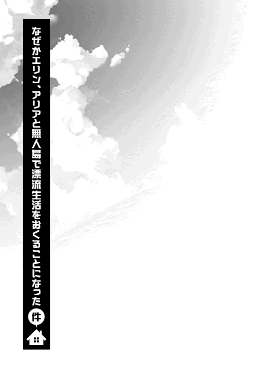

| 異世界で孤児院を開いたけど、なぜか誰一人巣立とうとしない件３ | |
| 初枝れんげ | |
| TOブックス (2018) | |
災害やバルク帝国の暗部との戦いを乗り越えた孤児院長・マサツグ。多忙な日々を送る中、孤児エリンと家出少女アリアに友情が芽生え、しばらく行動を共にすることに。その折、再び帝国が侵攻を開始したことで状況は一変する。邪神召喚を目論む皇帝ガナルドールはアリアの母であるばかりか、エリンの仇敵だった！ 復讐を誓い姿を消した彼女を追う時、マサツグのかつてない聖戦が幕を開ける！ 「守る」スキルすら通じない強敵、絡み合った因縁、そして家族との絆------神代の地に結集する彼らの宿命の結末とは！？ これは、後に人々に神殺しとして崇められる"マサツグ様"の荘厳かつ華麗なる英雄伝（サーガ）である。
Illust. パルプピロシ
design. AFTERGLOW

０．プロローグ 孤児院崩壊
───その日、孤児院は消滅した。
間違いない。あれほど俺たちが守ろうとし、そして家族の居場所だった孤児院......ルーナ孤児院は跡形もなく崩壊したのだ。
それは人の力が大いなる者の前ではいかに無力であるかを物語っている。
俺たちは死力を尽くした。
俺たちの居場所を守ろうとしたのだ。
だが、その思いは───。その切なる願いは野蛮なる神による鎧袖一触によって、無残にも踏みにじられたのである。
「ひええええええええええええええええええ！ 飛ぶ！ 飛ばされます！ 屋根どころか私たちが飛んじゃいそうですよ、ご主人様ぁ!?」
「いいから耐えろ、リュシア！ 少しでも力を緩めたら天井が吹き飛ぶぞ!!」
「マサツグ！ あんたいつもの『守る』とやらのスキルはどうした!? こんな時こそ力を発揮すべきだろーが!? いけ、マサツグ！」
「エリンも余計なことをしゃべるな！ この台風に吹き飛ばされるぞ！ あと、それは俺にも分からん！ なんか知らんがフルパワーが出んのだ！」
「異議あり！ 本当なの、マー君？ よぉく胸に手を当てて考えて見て？ きっと思い当たる節があるはずだよ？ 例えば、美しくも清らかな水の女神をないがしろにしてたりしない？ あまつさえ、ペット呼ばわりして玄関の軒先に一晩中放置するなんて、ご近所様で噂が立つような高度なプレーに興じてない？ それとも、って舌かんだぁ！ いだいよぉぉぉぉ！」
「興じとらんわ！ 舌を噛んで死ね！ それで罰が当たるなら、いくらでも当てるがいい！ というか、このアーパー女神、お前も少しは手伝わんか！」
「いたたたた、ところで、ねえ、マー君。そこさ、『可愛いぜ、シー。この嵐みたいな情熱的だ』みたいな感じで言ってくれない？」
「オッケイ、いいだろう。まずは、この嵐の対処の前に、お前の処置を優先しよう」
「わー、手伝ってる、手伝ってるってば！ 冗談だよ、じょ・う・だ・ん♡ 女神ジョーク、女神ジョーク......うふん♡」
実際、口ではお茶らけている節もあるが、形相は青ざめて必死である。
ルーナ孤児院の全員が、先ほどから目を白黒させ、どこか半笑いになりながら、若干ハイな気分で吹っ飛びそうになる天井を抑えたり掴んだりしていた。
しかし──、
「ほんとにもうもちませんよ!? だめっぽいかもです！」
「というか、なんでここだけ嵐になっているんだ！ 他は全く平気だというのに！」
「それこそ知るかよ！ うわああ、吹き飛ばされるううう」
エリンが叫び返す。
それはそうだ。
こんな奇妙奇天烈な出来事を説明できるような輩がいてたまるものか。
こんなことが出来るのは悪魔だけ。
それこそ、このルーナ孤児院に深い恨みを持つ大いなる邪悪しかいないだろう。
（!?）
その刹那、俺は気づく。
この現象を巻き起こした者の正体を。
間違いなく奴だろう。
俺にもまだよくわかっているわけではない。
だが、そいつは今は封印されているが、そんな状態であるにもかかわらず、以前俺が打倒したゴブリン王や死神モルテッシモを操り、世界を混沌へと陥れようとしているのだ。
（これは、奴からの攻撃!?）
そう考えれば辻褄が合う。
ルーナ孤児院だけを狙った天変地異。
ご近所さんたちが何事だとばかりに、半ば呆れた顔でこちらを見上げている。
その中には隣に住む幼女化した死神モルテもいる。
いかにも「何やっとるんじゃ、お前らは」といった風情で半眼を浮かべている。
くそ、気づけ。気づけモルテ。
いや、既に奴らの陣営から切り離された彼女では気づけないのだろう。
ならば、俺たちだけでこの悪しき企てを脱しなければならない！
「お前たち諦めるな！」
「ご主人様！」
「マサツグ!?」
俺の毅然とした叫びに、孤児たちが恐慌状態から立ち直る。
「これは恐らく奴らの企みだ。だが、だからこそ、この程度の嫌がらせに負ける俺たちじゃないことを見せてやるんだ！」
「ご、ご主人様！ か、かっこいいです！」
「はん、べ、別にかっこよくなんかねえし。ま、まあ悪くもねえけど......」
「さあ、全員の力を合わせて打ち勝つんだ、この邪神からの攻撃をな！」
「わ、分かりました！ ご主人様!!」
「あんたがそう言うんならあたしだって全力だ！」
よし、家族の心は一つだ。
「お姉ちゃんも頑張るよ！ 元はと言えばお姉ちゃんの責任だもんね！」
よし、シーも全力だな！
これならどんな困難だって乗り越え......ん？
「シー、お前今なんて言った？」
「え？ うん、全力を出して頑張るって......」
「いや、その後だが......」
え？
シーが小首を傾げてから、
「元はと言えばお姉ちゃんの責任」
「......」
「あれ？」
屋根のどこかがミシミシと鈍い音を立てた。
「お、おかしなことを言うな。嵐は別にお前の責任じゃないだろう？」
「そうですよ、シーさん！」
「あはは、そっか」
一体何を言い出すのか。少しばかり屋根を支える力が緩んでしまいそうだったぞ。
「なーんだ、お姉ちゃん安心したよ。私のせいかと思ってひやひやしちゃった。だって、これって完璧に私に下ってる天罰なんだもん。たぶんアレだねえ。ゴブリン王と戦った時に天候操作をしたからその揺り戻しが来てるんだよ。本当は勝手にやっちゃだめなんだ。ちゃーんと、自然の神々にお願いしてからしないといけない大魔法だからねえ」
「......」
皆が押し黙る。それと反比例するように、嵐の轟音はますます強くなる。
「でも、良かった。正直に話したら怒られるかと思って、言わなかったんだ♪ でも、お姉ちゃんのせいじゃないんだよね。おやつ抜きになんてならないよね♪」
ベキベキという豪快な音が耳のすぐ近くから聞こえた気がした。
既に家族という信頼は瓦解し、ぎりぎり皆の力で崩壊を防いでいた屋根がひしゃげはじめる。
俺は微笑みながら口を開いた。
「ああ、もちろんだ。シー」
「ホント！ 優しいなあマー君は」
「何せ、おやつどころじゃないからな」
防波堤になるべき力を失った孤児院の屋根は、嵐の中に吸い込まれた。そして荒れ狂う豪雨と暴風が待ってましたとばかりに、孤児院を中から食い荒らしたのである。
「もう、シーさん！ 今度と言う今度はぶっぶーですよ！ ぶっぶー！」
「ええー、許されたんじゃなかったのー!?」
「んなわけねえだろうが！ なんてことしてくれやがる！」
「この疫病神！ おたんこなす！ というか邪神だな、お前さては！」
「うわん！ ひどい！ さもありなんだけど、ひどいよう！」
そんな孤児院の断末魔のような絶叫があたりに鳴り響いた。
１．姫君の邂逅
朝を告げる鳥の声が聞こえる。
異世界でもそれは変わらないのだな、と今更ながらの感慨にふける。
今は『太陽の恵み』の季節というらしく、朝だと言うのに少し暖かいくらいだ。
自然の恵みに感謝する。
深く深く感謝する。
なぜなら──、
「うう、背中が痛いです」
「そりゃそうだ。野宿だしな」
もう一度言おう。の・じゅ・く・だ・し・な!!
これが冬ならば凍死していただろう。まさに九死に一生だ。
なぜこんなことになっているのか？
決まっている。それはもちろん、孤児院が崩壊したからだ。
まあ、全壊したわけではなく半壊くらいだが。
おかげでルーナ孤児院は現在、これまで貯めて来たすべての蓄財を取り崩して修理中である。
「でもさあ、修理が終わるまでの間、誰かの家にご厄介になったらよかったのに。それこそシルシルやアルアルにお願いすれば、喜んで受け入れてくれそうだけど。わざわざ隣のセイントティアナ小国まで来なくても大丈夫だったんじゃない？」
同じく起き抜けのシーが言った。
美しいブルーの髪には風で飛んで来た葉っぱがまとわりついていて、うらぶれた感じがいかにも疫病神という風情を醸し出している。
「誰のせいだと思っている!? お前がいる限り、いつあの天罰が襲ってくるか分からん。さすがに巻き込むわけにはいかんだろうが！」
そして少しでも遠い方があの現象は起こりづらいとのことなので、急いで隣国まで逃げて来たのである。このセイントティアナ小国は中立国で誰でも入国できる豊かな国だ。
ワルムズ王国の親せきが国王だとも聞く。どうでも良いことだが。
「そっかぁ、そうだよねえ。あっ、ということはマー君ってば私を見捨てるっていう選択肢を取らなかったってことだよね!? 私と一緒じゃなければ天罰に巻き込まれずに済むのに、こうして一緒にいてくれるなんて、やっぱりお姉ちゃん愛されてるんだなって！」
「そうか、その手があったか」
「墓穴堀った感じかな!?」
「もう。お二人とも喧嘩はやめてください。ただでさえ野宿でお疲れなんですから」
リュシアの言葉に俺は肩をすくめる。
確かにその通りだ。
あんなオンボロ孤児院でも、いちおう雨風はしのげていたのだ。
家が無いと言うのがここまで骨身に染みるとは思わなかった。
「まったく、ピーチクぱーちく朝からうるせえなあ。ゆっくり寝てんだから耳元で騒ぐなってんだ。ふわーあ」
と、俺たちの声で目が覚めたのか、これまた襤褸をかぶっていたエリンが上半身を起こす。
「よく寝てられますね、エリンさん。なんだか野宿のプロみたいです！」
「何言ってんのかよく分かんねえけど。ま、でもそれはあながち間違っちゃいねえな」
「リュ、リュシアちゃん!? そこは地雷かもだよ！」
「別にそんなんじゃねえよ。リュシアにはその辺りは説明してあるし、あたしもそんなめんどくせえ女じゃないさ。ま、バルク帝国に復讐するために一年も流浪してたのは本当だし、その悲願を果たすためなら野宿くらいなんともねえってだけさ」
十分に面倒くさそうなことを言った。
まあ、平静な様子で言い放つ様子は、以前のこいつからは信じられない変わりっぷりではある。
エリンは一年ほど前に故郷をバルク帝国に滅ぼされ、流浪の民となった。
こんな言葉遣いと態度だが、れっきとしたエルフの王女なのである。本来であれば、だが。
しかし、やはりと言うべきか。
復讐の心はむしろより強固になっているらしい。両親を殺されて、それを許すなんてことは出来るはずもない。
例えそれが、俺たちとの決別を意味しているとしても。
──が、
「ハードボイルドだねえ！」
「復讐か。まあ、まだまだ先のことだろう。それまでは面倒をみてやる約束だ。不本意ながらな」
「べ、別に好きで面倒みてもらってるわけじゃねえ。あくまで身を隠すための隠れ家だ、ルーナ孤児院は。別に居心地がいいとかぜんっぜん、思ってないんだからな！」
「ふふふ、ええ、そうですね」
リュシアが優しく頷いた。
何も言わないのが実にこいつらしい。
「ツンデレだ！ これがツンデレなんだね！」
「台無しですね、シーさん」
冷静なツッコミが路地裏に響いた。ＫＹが極まっていて実にシーらしい。
と、そんな下らないやりとりをしていた、その時である。
「あら、こんなところでお会いするなんて。やっぱり誰であっても冒険が大事ということね♪」
その声は音楽の素養がない俺でさえも、まるで鈴を鳴らすかのような音色だと思った。
家屋の隙間から差し込む朝日に照らされた銀色の髪がキラキラと光り、薄汚れた路地裏でさえ薫風のそよぐ高原のように錯覚させる。
年のころは十二、三......リュシアやエリンと同じくらいだろうか。
十字架の模様を連想させる赤地のドレスは何かの象徴のようにも見え、あどけなく微笑む仕草がどこか非現実感を放っていた。
まるでどこかの王侯貴族のような雰囲気すら漂わせており、俺たちから言葉を失わせて──、
「誰だよお前は。気やすく話しかけてくんなよ。あぶねーぞ」
とまあ、そんな訳もない。
まったく空気も雰囲気も読むつもりはないとばかりに、本物の王侯貴族であるエルフの王女、エリンが恫喝と見まがうばかりの態度で口を開いた。
「まあ？」
少女が驚いた表情を浮かべた。
それはそうだろうな。
見るからに育ちの良さそうな少女だ。路地裏でいきなりこんな怪しげな四人組に脅かされれば、ビックリもするだろう。
が──、
「うふふ♪」
少女は意外なことに微笑んだ。
何やらスキップでもしそうなほど上機嫌で。
「何笑ってやがる。頭でもうったのか？」
「まあ、さっきと言い、今と言い、初対面の私をそこまで心配してくださるの？」
「はぁ!?」
エリンが眉根を寄せて肩を怒らせた。
「なわけねーだろうが！ あたしは単に、あんたが見知らぬ輩にあんまりにも無防備に近づくから注意しただけだ！」
昔のあたしみてーだからな、という言葉はモゴモゴという語尾に消える。
が、聞こえていたのか何なのか、少女はエリンにもう一歩近づくといきなり手を握る。
「ちょ、てめえ、なんの真似......」
「お友達になりませんこと!?」
「は、はぁ!?」
「いいえ、いいえ。わたしは決めました。優しくて温かいあなたとお友達になりたいわ！ ねえ、お名前を教えてちょうだいな。いいえ。まずは自己紹介からよね」
そう言ってパッと手を離すと、少し離れてふわりとお辞儀をする。
カーテシーという独特のお辞儀だ。スカートの両端を小さな手で持ち上げて優雅な一礼。
「わたしはアリア。ちょっと家出の最中なの。お母さまと喧嘩しちゃったものだから。それにお母さまったら、全然私をお外に出して下さらないのだもの。おかげで友達も作れなかったわ。だから、ねえ、わたし友達が欲しくて家出をして来たの。さあ、あなたのお名前も教えて頂戴な」
「わあ、何だかまるでお姫様みたいですねえ」
「お姉ちゃんの優雅さにも引けを取らぬとは何奴!?」
は～......という深いため息をエリンが漏らした。
憂鬱そうに、しかし同じ動作で膝を軽く折り、
「そこまで丁寧にやられちゃあ、あたしも返礼はちゃんとしなきゃなんねえけどさ。まったく、何が悲しくて家出娘とお姫様ごっこなんてしなくちゃなんねえんだか」
こちらも普段のガサツさからは想像できないほど優雅に一礼する。
「エリンだ。まあ根無し草の孤児さ。このマサツグってやつの運営してるルーナ孤児院ってとこに厄介になってる。んで、この猫耳がリュシアで、無駄な脂肪を蓄えてるほうがシーだ」
「リュシアです。よろしくお願いしますね、アリアさん」
「美の女神シーです。パーフェクトボディーさんって呼んでもらっても構わないよ？」
「よろしくね、リュシアさん、パーフェクトボディー様」
「すみません、やっぱシーで宜しく」
「ええ、シー様。それともおっしゃっていた通り美の女神様？ ともかく宜しくお願い致しますね」
何だか分からんうちに相手のペースになっているな。
「さあ、エリン。早速友達として、どこかに遊びに行かないといけないわ。どこに行きましょうか？ わたし、海とか洞窟とか、そんなワンダースポットに行ってみたいのだけど」
「って、あたしだけ呼び捨てかよ。いや、それはいいが。別にあたしはあんたと友達になった覚えはねえよ！」
「ええ!?」
アリアがショックを如実に表情に浮かべる。
「そ、そんな。さっきはあんなに素直にお名前を教えてくれたのに。どうしたの？ わたし、何か気に障ることでもしてしまったのかしら？」
悲しそうに眉根を寄せ、フラフラとエリンへ近づく。
「だあ、鬱陶しい！ 別にそんなんじゃねえよ！ 単にあたしが友達だなんだとベタベタされるのが嫌いなだけだ！」
「そんな」
エリンはブンブンと顔を振りながら、
「あたしに友達なんかいるもんか！」
プイっとそっぽを向いた。
その頑なな態度は、恐らくエリンが復讐を誓う身というところから来ているのだろう。
エリンの目的からすれば身軽な方がいいし、ましてや、心を簡単に許すことは難しいに違いあるまい。
それにしても──、
「何を痴話げんかのようなことをしているんだお前たちは」
「まあ、そんな。マサツグお兄様ったら、痴話げんかだなんて」
「何を顔を赤らめてやがる。ぜんっぜん照れる要素はねえぞ」
「というか何だ、そのお兄様というのは」
「何だかエリンのお兄様みたいでしたから、つい」
確かに年齢はそう大きく離れてはいないが。
とはいえ、お兄様などという妙な呼び方をされるのは御免こうむる。
「柄ではないな。俺のことを呼びたければ、単にマサツグと......むっ!?」
俺は二人を抱えて跳び退った。
「えっ、きゃあっ!?」
「な、なんだ、いきなり！」
腕の中でもがこうとする二人。
が、次の瞬間。
ガギン、ガギン！
鈍い音を立てて、石造りの家屋の外壁になにかが突き立てられる。
それは突如放たれた鉤爪だ。
が、ただの鉤爪ではないのは明らかだった。
なぜなら、えぐられた外壁がドロリと溶けだしているのだから。
どんな魔法か手品かは分からない。しかし、そこにある明確な殺意と熟練した殺人術だけは隠しようもなく異彩を放っていた。
と──、
「たかだか姫一人と侮ったか。しかし、今の不意の一撃を防ぐとは......」
いつからそこにいたのか......。
先ほどまでは何もなかった空間に、そいつらはいた。
男なのか女なのかすら分からない、しゃがれた声。
それが五人。
黒衣とマントを羽織り、顔には仮面をつけた異形の集団だ。
何よりも、
「ご、ご主人様......、何だか分かりませんが、とても気持ちの悪い臭いがします。頭が痛くなるような......」
リュシアが顔をしかめた。
エリンもまた嫌悪の表情を浮かべる。だが、それは確信を持った忌避の表情で──、
「リュシア、あまり鼻を使うな。最悪狂うぞ。こいつらの放つ臭いは」
──人間の死の臭いだ。
そう言った。
「左様。我々はバルク帝国の暗部。十人で一国をも滅ぼすと謳われた『魔導部隊』。その中でも暗殺に特化した外道どもよ。『名もなき大隊』などとも呼ばれるがな」
淡々と告げる。
だが、それは恐るべきことだ。
どうすればこれほどの死臭が体へと染み込むというのだろうか。
一体、どれだけの死体の山を築けば、こいつらのような狂った怪物どもが出来上がるというのか？
「バルク帝国だと!?」
エリンが目を見開き、叫んだ。ワナワナと震え、目に怒りの炎を灯す。
「あたしを......、あたしを殺しに来やがったか！ 森を焼き、お父様やお母様、仲間たちを全員殺しておきながら、まだ足りなかったってわけだな！ いつか来ると思ってたぜ！」
懐の短剣を抜き、いつでも詠唱できるよう構えた。
だが──、
「......ふ」
異形のリーダーらしき人物が息を漏らす。
それが、なぜか俺には嗤ったように思えた。
「貴様、何がおかしい？」
「......いや、失礼した。姫を探していたことは確かだが、妙なところで見つけたものだと思ったまでよ」
「？」
何を言っている？
俺は微かな違和感を覚える。
どこが妙だと言うのだ？
森を焼かれた姫が路地裏で隠れ住んでいることがそれほど意外なことだろうか？
無論、場違いではあるだろうが、十分に予想できる範疇ではないだろうか。
俺はどこかかみ合わない歯車のような気持ち悪さを感じる。
だが、俺がその妙な違和感に思考を割く暇を、敵が与えてくれるはずがない。
「戯れはこれまで。では帝国の患部を取り除く治療を始めるとしよう。祖国の礎となれることを誇るがよい。それがお前たちの生きた意味でもあるのだから」
「ダメ！ 逃げて、皆さん！」
アリアが勇敢にも前に出て、帝国の刺客たちから俺たちを守るように手を広げる。
「この人たちを殺させはしないわ！ 初めてのお友達なんだもの！ さあ、逃げて下さい！ お化けたちをわたしが引きつけているうちに!!」
「アリア、お前......！」
エリンが目を丸くする。
すると──。
──く。
異形共が仮面を抑えて、今度こそはっきりと、
「く、く、く、くききききキキキキききききききキキきききキキきキキキキキキキききキキキききききききききキキききききききキキきききキキきキキキキキききききききキキきききキキきキキキキききききききキキきききキキきキキキききききききキキきききキキき!!」
「ひっ!?」
ガクガクと嗤う。
それはまるでドクロの合唱に見えた。
「これは傑作よ！ 帝国の......！ 帝国の暗部とまで言われた我々が！ 小娘一人で止まるとでも!? 時間が少しでも稼げるとでも!? ぐぎゃぎゃぎゃぎゃぎゃぎゃぎゃぎゃぎゃぎゃぎゃぎゃぎゃぎゃ！」
「わ、分かっているわ！ わたしだって怖い！ 死ぬのは怖い！ でも、何もなせずに死ぬことほど怖いものはないのよ！ だから、皆さんは逃げて下さい！ こんな恐ろしいお化けたちには絶対に勝てない！ 勝てっこない！ だから、少しでも早く、逃げてください!!」
少女の悲痛な声が響く。
「キキキ。残念ながら皆殺しよ。お前たちは悲鳴を上げる暇もないままに絶命する。これは予言だ。たがえることなき死神の託宣よ。さあ、狩りの時間と行こう。いや......」
異形は仮面の奥でほくそえんだに違いなく、
「逃げる暇など与えぬ。ゆえにこれは狩りではない。強いて言うならば、そう」
──作物の刈り取りに過ぎぬ。
そう言って、黒衣より瞬きするよりも早く、爪を取り出したのであった。
「では、お命頂戴......」
「そうだな。ところで一つだけ聞いていいか？」
「命乞いか？ 哀れな子羊よ。だが、聞いてやることはできぬ。黄泉の国にて亡霊どもにでも言うのだな」
俺の言葉に、暗殺者が構わずに爪を構えようとする。
だが──。
ぽとり......。
「............は？」
仮面をつけていても表情が読み取れるような間の抜けた声が響く。
無理もあるまい。
なぜなら、今まさに哀れな子羊の首を落とそうとしていた自慢の暗器が、自分の腕ごとコロンと地面を転がっているのだから。
ギ......。
ブシャァアアアアアアアアアアアアアアアアアアアアアアア!!
血のシャワーが異形より放たれる。
「ギャアアアアアアアアアアアアアアアアアアアアアアアアアアアアアあああああああああああああああああああああああああああああああああああああああああああ!?」
「化け物どもであっても血は赤いと見える」
俺は落ち着いた声音で言う。
「マ、マサツグお兄様？」
アリアが呆然とした様子でつぶやいた。
「なぜだ!? なぜ我の手が!? 帝国の尖兵たる我々がなぜ貴様ごとき未熟者に!?」
「くだらん」
俺は奴らの言葉を一言のもと切って捨てる。
「勘違いもはなはだしい。貴様らは暗殺者なのだろう。ならば、最初の一撃が外れた時点で逃げ出しておくべきだったな」
「な、なんだと!? わ、我らが逃げ......」
「もし逃げてさえいれば暗殺する機会などいくらでもあったろう。寝首をいつかかれるかもわからない状況ともなれば、例え俺であっても手を焼いたかもしれん」
「ぐっ!?」
「が、姿を現した暗殺者など、陸に打ち上げられた魚のようなものだ。酸欠になり放っておいても干からびて死ぬことだろう」
「貴様、言わせておけば！ お前たち、かかれ!!」
我慢の限界とばかりに暗部どもが飛びかかって来る。
周囲の壁を利用した奇妙な三次元殺法だ。
死の触手があらゆる方向から伸ばされる。
視覚ではとても追いきれない死神の咢。約束された死出への招待状といったところか。
が──、
「ふ、死神からのラブレターは、奴からのもので十分でな」
遠慮させてもらおう。
俺は鼻を鳴らすと、地面に転がった敵の暗器を拾い上げて、無造作に一閃する。
「ぐはっ......」
「げえ!?」
たちまちのうちに二人が地面に沈んだ。
「すごいわ。あの暗部たちを一瞬で......」
アリアが信じられないとばかりに目を見開く。
「な、何をした、貴様!?」
今の攻撃すら見えなかったのか。話にならん。
無論、何もしていない。
相手が飛び込んで来たから、そこに奴ら自慢の凶器を構えていただけだ。
「命を狙いに来た奴にその代償を払わせただけだ。ああ、そう言えば死神と名乗っていたな。お前たち。ふ、ふふ」
俺は思わず笑う。
「な、何が可笑しいっ！」
仕方ないだろう。なぜなら──、
「お前たちごときが死神などとは誇張が過ぎる。俺と戦った死神はな、世界の命を刈り取ろうとしていたぞ？」
「な、何を......」
「全て言わせるつもりか？ 小さな子供たちを狙うお前たちがいかに分不相応な名乗りを上げたのか、説明してやったつもりなのだがな」
「く、くそう！」
残りの暗殺者たちが果たして一斉に飛びかかって来る。
やれやれ。
「逃げ出さずにいてくれたか。礼を言うぞ」
「!? まさか、そのための挑発!?」
「気づくのが遅すぎだ。阿呆どもめ」
仮面の下に驚愕の表情を浮かべたバルク帝国の狂人どもは、数秒後にはその意識を永遠に刈り取られていたのだった。
高原には気持ちの良い風が吹いていた。
暗殺者どもを倒した俺たちはその場所を急いで離れた。
見つかればややこしいことになることは明らかだったからだ。出来れば厄介事は避けたい。
俺たちは一旦セイントティアナ小国の外へと逃れることにした。
また野宿になるが仕方あるまい。
幸い、近くには『ルーティア』という高原があり、ほとぼりを冷ますにはちょうどい。
テントと数日分の食事があれば、しのげるだろう。
「す、すごくかっこよかったわ。お兄様」
と、何やかやでテントを張ったところで、なぜかモジモジとした様子でアリアが言った。
一体どうしたというのか？
「まーた、これだよ。マー君、お姉ちゃんはね、怒ってるよ？」
「なんでお前に怒られねばならん」
「だって七人目だよ!? 七人!! 私、リュシアちゃん、エリンちゃん、シルシルにアルアル、モルテちゃん。一体どう落とし前つけるつもりなの!? 落としただけに！」
意味不明だ。
だが、他の二人も半眼になった。
「困ったものですね。もちろんご主人様ほどの方ともなれば無理ないのですが......。はぁ、本当に困ったものですねえ。この尻尾を自由にしてくださって構わないのに......」
「あたしは別にどうでもいいぜ。まっっっっったくもってどうでもいいぜ！」
どうにもおかしな様子である。
「ああ、いけないわ。でも、だって、まだ会って間もないのに。ふしだらすぎると思うもの。こういうのは段階を踏まないと。そんな、会って急に、だなんて。わたし、そっちの心の準備は出来ていなかったものだから。ああ、どうしたらいいのかしら、ねえエリン？」
「知るかよ！」
やれやれ、訳が分からん。
「お前たち、そんなことよりも今は考えるべきことがあるだろう」
「はあ？ 誰のせいだと思ってんだよ」
エリンがぶっきらぼうに言う。
何のことやら。
「それよりもアリア。敵の前に立ちふさがるとは無茶なことをしたな。俺がいなければ最初に殺されていたのはお前だったぞ？」
「ええ、でも、だって。あれはそもそもわたしが......」
「別にお前が悪い訳ではないだろう。タイミング悪く、たまたま俺たちと一緒にいただけだ。悪いのは奴らに決まっているのだからな」
「お、お兄様......」
「へっ、確かにあの啖呵は良かったぜ、アリア。見直したってわけじゃねえけど、さすがのあたしも度肝を抜かれたってもんだ！」
「エリンまで。そんなんじゃないのに......」
「どっちにしたって、いま考えなくちゃならねえのはあいつらのことさ。奴ら大隊って言ってたじゃねえか。あんな化け物どもが何百人もいるってのかよ！」
「無名の大隊......。名前だけは知っていたけど、あんな恐ろしい人たちが帝国にいたなんて」
知っていた？ 有名なのか。そのわりに名前は『無名』らしいが。
なんにしろ──、
「しばらくは身を隠すべきだろう。出来ればここを拠点に追手の様子を探りたい」
俺は提案する。今はそれがベターな方策だ。
「いや、それはダメだ！」
エリンが反論する。
「最初から言ってたはずだぜ、マサツグ。バルク帝国はあたしの獲物だ。あんたたちを巻き込むつもりはねえ」
──ここでお別れだ。
そう言って、たちまち出て行こうとするが、
「だめよ、エリン！ 出ていくならわたしが出ていくわ！ そうすれば大丈夫なんだから！」
「はあ？ 何でアリアが出ていけば解決するんだよ！」
「だ、だって。だってわたし......」
やれやれ混乱してるらしいな。
「最後まで話を聞け、お前たち」
俺は呆れた声音で言う。
「出ていくのは構わんが、いまさら俺たちと別れたとして、奴らが俺やリュシア、シーを見逃すとは思えん。既にこっちの情報は帝国サイドにわたっていると考えるべきだ」
「そ、そうなの？」
「腐っても帝国の尖兵なのだろう？ 情報を持ち帰る奴は姿を現さずに離脱しているはずだ」
むしろそれが本来の役割だ。
あいつらは殺しすぎて血の味を覚え過ぎていた。だから殺戮を優先させるなどという愚策を犯した。
だが、さすがに一人くらいは本来の役割を果たしているだろう。
「た、確かに......。でも、だったらどうするんだよ！」
「決まっている。今は単独行動は控えるべきだ。戦力の分散は一番の悪手。さっきも言った通り、ここで様子を見る。そうすれば、いずれ解決の糸口も見えるだろうさ」
ム～、とむくれるが、結局俺の言葉に納得したのか、フン！ と言ってそっぽを向く。
「じゃ、じゃあわたしも一緒にいたほうがいいのかしら？」
「ったりめえじゃねーか！ アリアはもっと図太くなったほうがいいぜ！ 暗殺者どもに立ち向かったみたいによ！ 妙な遠慮してんじゃねえよ！」
「そ、そうではなくて」
そうか、家出中だったな。
「心配する親がいるか？」
「え......。......いいえ。本当の親はいないの。面倒をみてくれるお母様はいるのだけど、戻ったら二度とお外には出してもらえないに違いないわ」
継母というやつか。聞いては悪かったかもしれんな。
アリアは困ったような表情を浮かべた。
さて──、
「ともかく方針は決まった。俺はとりあえず食事の準備をする。リュシアとシーは手伝え。エリンはアリアに色々と俺たちのことを説明してやれ」
「しゃあねえなあ。行くぞ、アリア」
「え、えっと」
むんず、という感じでエリンがアリアの手を引っ張って歩いて行く。
どうやらエリンはずいぶんあの勇ましい娘が気に入ったらしい。まるで親友同士のようだな、と思う。
俺は視線を外して、大きめの岩を探す。台代わりにするためだ。
ちょうど良い高さのものを発見し、そこへ持ってきたまな板を置く。
が、その時──。
「でも、きっと皆さんはわたしを恨むことになるの......だけど......わたしは......」
「？」
アリアの声がした気がして、俺は思わず後ろを振り返った。
だが、気のせいだったらしい。
アリアとエリンはもうずっと向こうの方へと駆けて行っていた。
俺も少し気が立っていたようだ。
一人納得し、俺は草原の真ん中でリゾットを茹で始めたのである。
２．花と月のワルツ
～ａｃｔ‐ｔｕｎｅ エリン～
「とても美しいところね、エリン」
そう言ってアリアはクルクルと無邪気に踊った。
さっきこいつにはあたしたちのことを大体話した。
ルーナ孤児院のこと、あたしたちが孤児であることとかだ。
もちろん、マサツグの奴が異世界とやらから来たことや、あたしたちの細かい出自はぼかしてある。
視界一杯に広がる草原にはシロツメの花や黄色の小さな花が地面を覆うように咲いていた。
恵みの季節を謳歌しているのだ。
あたしはもちろん、この季節が好きだ。
エルフでこの季節が嫌いな奴はよっぽどおかしな奴である。
森では小さな実生の苗木たちが山道の傍らにひっそりと現れ始めるころだ。
けど、そいつらはだいたいが枯れてしまう。
栄養や日当たりの関係。それに周りの植物たちとの関係もある。
大きく育つのはよっぽど運がいい奴だけだ。
だから、自然の姿はいつもキラキラとまぶしい。
限りある命を精一杯に生きようとする姿が輝いて見えるのだろう。
まあ、今は──、
「どうしたのかしら？ もしかしてお腹でも痛くなった？ わたし、簡単な回復魔法なら使えるわ。いかが？」
こいつのせいで、いつもの何割か増しになっちまってるみたいだが。
「元気のいい奴だな。まるで生まれたての小魚みてえな奴だ」
「まあ？」
アリアは目を丸くした。
気を悪くさせちまったかと思ったが、次の瞬間には破顔していて、
「魚さん？ わたし、そんなにお魚に似ているかしら？ ふふ、そんな風に言われたの初めてだから、とても楽しいわ」
長い銀色の髪が風に揺られてサラサラと流れる。
「訂正、小魚は間違いだ。あんたはあれだ、巨大肉食魚のメイサだな」
「ああ。止まったら死ぬと言われている魚類ね。うまいことを言うのね、エリンったら。なら、わたしのエサは何になるのかしら？ あなたを食べてしまおうかしら？」
「メイサは人も食うが、稀だって聞くがな」
「......そうだったわ。貝などを主に食べるのよね。ご本で読んだことを思い出したわ。高原なら......カタツムリね!!」
「マサツグに頼んでくるか？ アリアがカタツムリを食べたがってるって」
「いえ！ いいえ。申し訳なかったわ。食べません。悪ふざけが過ぎました」
「お互いな」
「ええ、ええ。うふふ」
アリアが純真に笑うので、あたしもつい釣られて笑ってしまう。
家族を......故郷を焼かれてから、こんな風に誰かと自然に笑うなんて考えたこともなかった。
それを許せるほど、あたしは強くないからだ。
復讐の憎悪の熱をずっと保つこと。安らぎで炎を消してしまわないこと。
──以前のあたしに戻らないこと。
それがエルフで唯一生き残ったあたしの義務だ。もちろん、森以外にいた少数のエルフは生き残ってはいるけれど......。
（......けど、なぜかこいつには心を許しちまう）
マサツグたちみたいに、家族ってわけでもねえのにな......。
「ほら、エリン。ぼーっとしておいでよ？ 少し、こっちを向いて頂戴な」
「へ？ お、おい。頭におかしなもんを乗せるんじゃ......」
「まあ！ とってもお似合いね。とっても可愛くて綺麗よ。ねえ、エリン？」
突然乗っけられたのは『花かんむり』だった。
シロツメの花を手折って作った、自然のクラウン。
あたしは思わず深い深いため息を吐く。
「あ......お気に召さなかったかしら。ごめんなさい、エリン」
「意味が分かってやってるわけじゃねえんだろうなあ」
「えっ？」
「しゃあねえな。ちょっと待ってな」
あたしもシロツメの花を手折る。
こいつらは多少手折ったところでビクともしない。
なんせ根っこがつながってる。
一見、きれいなくせに強かだ。そこが気に入っている。
そして──、
「ほれ。アリアも頭を出しな」
「まあ、わたしにも？ でも、お気に召さなかったわけではないのかしら？」
「うるせえなあ。色々あるんだよ。色々な」
あたしは即席で作った花かんむりを、アリアの美しい銀髪の上に乱暴に乗せる。
だが、アリアが嬉しそうに微笑みを浮かべ、
「まあ、綺麗！ お揃いね。ありがとう、エリン」
「大げさだなあ。たかだか花かんむりじゃねえか。すぐに枯れちまうさ」
「あら、そうかしら。『友情』の花は決して枯れない、ではなかった？」
「ぶはっ！」
あたしは思わず噴き出した。
「知ってやがったのかよ!!」
「もちろんよ」
ニコニコと屈託なさそうに笑う。
だが、今のこいつは明らかにイタズラに成功して喜ぶ悪ガキだ。
「シロツメの花言葉。それは『常しえの友情』ですもの。嬉しいわ。エリンにそんな風に思ってもらって」
この草花は根っこが同じで繋がっている。だから、何があっても早々枯れることはない。だから、古来ではシロツメの花を贈り合うことは、何があっても壊れない友情を誓うものだった。
もっとも、昔のシロツメは今の形とはずいぶん違ったらしいけど。
（ごめんなさい）
「ん？」
何か聞こえた気がする。
だが、目の前にはアリアがいるだけだ。
空耳か、遠くにいるリュシアかシーあたりの声を聞き間違えたかってところか。
んなことよりだ──、
「友達だ、友達だとうるさいけどよ、本当にアリアはどんな生活してやがったんだよ。内陸国のこの国で魚のことに詳しかったりさ。あと、今の花言葉も百年くらい前に使われてたもんで、誰でも知ってるわけじゃねーんだけどなあ」
「それはエリンもそうだわ。さすがによくご存じだと思うもの。エルフだって海には出ないでしょうし、花言葉だって、習わなければ知らないはず。わたしのようにご本を読むか、それともどなたかにお勉強を教わったのかしら？」
習うってほどでもないけどな。
単にあたしが王女だから、周りが色々と教え込もうとしてただけだ。
特にお父様はワイルドな割に、大の本好きだったから、雑学めいたことを色々と教えてくれた。
お母様はおしとやかな人だったから、花言葉とか家事だとか、そんなことを教えてくれた。
料理だけは、あたしの激辛好きに頭を抱えていたようだったけど。
「エリン？ どうしたの？」
「え？」
「いえ、とても、穏やかな表情をしたものだから」
あたしは首を傾げる。
傾げてから気づいた。
久しぶりに両親のことを、優しい気持ちで思い出すことが出来たのだ。
恨みでも後悔でもない。
悼む気持ちもでもなくて、ただの温かい思い出として、二人を思い出していた。
って、他人にそんな表情を見られるってのは、妙に気恥ずかしいな、おい!!
「なんでもねえよ！ それより、ほれ、アリアのことを教えろよ」
「えっ？ ううん、そうねえ。といっても面白いことはないのよ。わたしはお母さまに作られたのだけど......」
「作られた？」
随分と変わった言い方だな。
まるで物みてえじゃねえか。
「あ、ごめんなさい。あまり適切な言い方ではなかったかも。とにかくね、そのお母さまというのがとても偉大な人でね、厳しいのだけれど、とてもご立派な方なのよ。領民に対して重責を負ってらっしゃるのだけれど、気負う事もなく、常に堂々とされているの！ わたしも将来あんな風になりたいと、いつも思っていたのだけれど」
なかなか難しいみたい──そう言ってアリアは大きなため息をついた。
けど、あたしは逆にホッとして、
「んだよ、心配かけやがって。安心したぜ!!」
バシーン！ とアリアの背中を勢いよく叩いた。
「きゃっ!? も、もう！ いきなり何をするのかしら!?」
アリアが抗議の悲鳴を上げるが、
「なっはっはっは！ いや、良かったと思ってよ。いやほら、家出って言ってたからさ。どんだけ酷い家庭環境なのかって思ってたけれどさ、案外仲は悪くなさそうじゃねえか」
「エリン......。そうね、あなたは孤児だったものね。あなたの気持ちも考えずに、わたしは......」
「かー！ しょっぱいこと言うなって！」
「きゃっ!?」
長い銀髪をもしゃもしゃにしてやる。
「いなくなって分かったんだよ。もちろん、あたしの両親は最高の両親だったけどさ。それでも、いなくならねえと、その本当の大事さってのは分からないもんだ」
だから、あたしは決して復讐を諦めることはないけれど。
「だから、もしその母親と少しでも仲直りが出来そうなら、そういう気持ちがあるんならさ、絶対に家に戻って話し合った方がいいぜ。『思っていた』なんて過去形じゃなくてさ、それを伝えて、頑張ってそのお母さまみたいになりゃいいんだよ!!」
家族で一緒にいられるなら、それが一番いいことなんだ。
今のあたしにはマサツグたちがいるけれど、それでも両親の代わりにはなれない。
ま、まあ。もっと違う形で、ずっと一緒にいてやってもいいんだけど......。
な、なんてな！
「ありがとう、エリン。それに本当にごめんなさい。このわたしなんかにそこまで言ってくれて。そんな資格、わたしにはないのに」
「やめろよ、恥ずかしいじゃねえか！」
こいつは時々、くそまじめになるから手に負えねえ！
資格だとかなんだとか、ほんと難しい奴だ。
人生もっと適当でいいってのに!!
そもそもだな、あたしには──。
「おーい、ふったりっともー。ご飯がそろそろ出来そうだよ～！ 戻っておいで～。十秒以内に戻って来なかったらお姉ちゃんが全部食べちゃうぞ～!!」
「まあ、女神様があんな冗談をおっしゃってるわ」
アリアが可笑しそうに微笑んだ。
だが、あたしは逆に笑顔を引っ込めた。
「いや、あれはマジだ。あの馬鹿はマジで十秒たったらあたしたちの分のご飯も平らげ始める」
アリアも笑顔を凍り付かせて、
「え？」
「呆けてる暇はねえぜ！ 早くあのエセ女神を取り押さえねえと、野宿なうえにメシ抜きだ！」
「そ、それだけは勘弁ね!!」
あたしたちは急いで駆け出した。
急ぐあまり、あたしはアリアの手をつい握ってしまう。
途中で気づいたけど、いきなり離したら変に思われちまうかもしれねえ。
誤魔化すようにテントまで全力で駆け抜けた。
お揃いのシロツメのクラウンがキラキラと光り輝いて見えた。
～ａｃｔ‐ｔｕｎｅ アリア～
空には満天の星空が広がって、草原の寝床はフカフカとしている。
「とても月が綺麗ね、エリン？」
「よくンな呑気な感想が言えるなあ。さすが貴族のご令嬢様だな」
もう、すぐにエリンは意地悪を言うの。
でも、それは心を開いてくれている証拠だわ。
わたしのことをどこかで心配してくれているのだもの。
「だって、夜なのにとても温かですし、空も綺麗で、虫の音色は協奏曲なのだもの」
「だから眠れないってか？ 他の奴らはとっくに寝ちまってるぜ？」
「そうね。悪い子だわ。もちろん、エリンもよ。わたしと同じ夜更かしをする悪い子」
「一緒にするなっての」
そっけないけど、瞳は優しい。
膨れてはいるけれど、それは照れているだけなの。
「ねえ、エリン。あなた歌は好き？」
突拍子もなかったかしら。
案の定、エリンは「ほへ？」なんて言って、小首を傾げた。
「なんだよ突然」
「お兄様のお料理がとてもおいしかったものだから、歌いたくなったのかもしれないわ」
「まあ、マサツグの奴は料理だけはうめえからな」
「そうでしょう。ねえ、だからエリン。歌はお好きかしら？ もしお好きなら、あなたの好きな歌を教えて頂戴」
「ンなこと聞いてどうすんだよ？」
決まっているわ。
わたしがお友達とずっとやってみたかったこと。
一度でいいからしてみたかったこと。
「一緒に歌うの。合唱ね。いいえ、いいえ。この時間に歌うなら小夜曲かしら？」
「いや、そりゃただの迷惑行為だろ」
寝静まってるところで歌い出したら迷惑だろ？ だなんて、エリンはそっけなく言う。
もう！
「いいじゃない。ねえ、教えて頂戴な」
「そりゃ構わねえけどさ。教えるくらい。でも歌うのはなしだぜ。こんな夜更けになんて」
「ええ......いいでしょう？ 歌いましょう？」
「いや、だから、あたしはだな」
「一緒に歌ってくれたら、もう思い残すことはないの。もう明日には、わたしは家に帰らなくてはいけないのだから」
「歌わないっ......って。えっ、帰る？」
わたしは頷く。
怖いお化けたち。
業を果たせと迫ってくる過去たち。
これ以上、この温かな人たちと一緒にいることは許されない。
誰が許しても、わたしが許さない。
わたしに大切な思い出をくれたエリンたちを傷つけさせたりしない。
（きっとわたしを恨むことになるの）
......でも。
一日だけ。
この一日だけは、わたしに下さい......神様。
「ええ、帰らないと。家出も、わたしのわがままも、そろそろお仕舞いにしなければいけないと思っていたの。でないと、色んな人たちに迷惑がかかってしまうわ」
「そうか。まあ、家に帰るのは悪い事じゃねえよ。お母さまとやらと仲良くな。暗殺者どもが心配だが、貴族だったらそっちのほうが安全か......。でもまあ、たまには会いに行くからよ。今生の別れみたいに湿っぽいのはやめてくれよな」
「いいえ、もう会えないと思うわ」
「えっ？」
エリン。ごめんなさい。
あなたにとって別離が一番つらいことのはず。
わたしは知っているの。
だから、本当は傷つけたくはない。
でも帰ったら。
わたしは、あの場所に戻ったら、もう二度とお外には出していただけないの。
だって、じきに期日を迎えるのだもの。
「もともとお外にはなかなか出してもらえないのよ。そういうお家なの。だから、こうしてエリンとお話できるのも、これがきっと最後だわ」
「なんだよ、それ......あたしたち、せっかく......」
エリンはそれ以上言葉を紡がない。
わたしも何も言えなくなった。
でも、しばらくしてエリンがポツリと、
「湿っぽいのは嫌だから」
「え？」
「だからよ、湿っぽいのは無しだぜ。あたしたちの間じゃ！」
「エリン......」
だいたい、それによ、と続ける。
「本当にもう会えないかなんてわかんねーじゃねーか！ 人生何があるか分からねーよ！ 案外、ひょっこり出会うかもしんねーじゃねーか。今回みてーによ!!」
「でも、だって」
「だってもピーチパイもねえよ！」
エリンはそう言うと、風の術式を詠唱し出す。
一体、何？
そう思っていると、わたしたちの周りを薄い空気の層が覆った。
なぜか急に静かになった気がする。
まるで世界にわたしと、目の前の綺麗で可愛らしい金色の少女だけが取り残されたみたい。
「これであたしたちの声は外には聞こえねえ。よっぽど大声じゃ無けりゃだけどな」
「エ、エリン。それじゃあ！」
「小夜曲くらいならいいんじゃねえか？」
そう言ってウインクする。
エリン。
ありがとう。
大好きよ。
わたしのたった一人の、最高の友達。
あなたに会えて本当に良かった。
ああ、本当に、ごめんなさい。
──そうしてわたしたちは、どちらからともなく歌い出した。
曲名は『花と月のワルツ』。
誰が作ったのかも分からないのに、でもなぜかみんなが知っている不思議な曲。
地上と空にある普段決して交わらない美しい者たち同士が戯れて、そのうち夜が明けると言う、どこか夢のような歌。
『I never knew that the world could be this beautiful. this the goddess of the Moon have descended.【こんなにも地上は美しくて、月のお姫様は舞い降りた】』
『I wonder about the city dreamily, and before I know, I come across the princess on the star desert.【夢見ごごちで街を彷徨って、いつの間にか星の砂漠で王女と出会う】』
『Just one night's dream but it's such a beautiful moonlight night. Will you dance the waltz with me, like sort-lived butterfies?【一夜限りの夢だけど、美しい月夜だから、泡沫の蝶のようにワルツを踊りましょう】』
『I'll wake up alone but we'll definitely meet again someday.【目覚めて見れば私は一人。でもまたきっと会えるでしょう】』
いつの間にか私たちも眠りについていた。
お互いの手を握って。
この手を離さずにいられたらいいのに。
そんなことを思いながら。
──翌朝。
相変わらず世界は美しく、温かかった。
目の前にはエリンがいて、周りにはお兄様たちがいた。
まるで家族のように。
離れ離れになることが本当に悲しい。
丘陵からは外壁に囲まれた美しきセイントティアナ小国が見えた。
まだ街は目覚めたところ。
中心にある居城は静かで、周囲の家々には小粒のように人々がちらちらと見える程度。
空にはお日様の光。
......え？
太陽と思っていた光から一筋の光が舞い降りる。
流星？ こんな朝に？
わたしが混乱している間に、その光の筋はセイントティアナ小国の中心へと吸い込まれて行った。
そして──。
次の瞬間、耳がおかしくなるくらいの轟音とともに、セイントティアナ小国は壊滅していた。
３．女皇帝ガナドール・デュムラン
「ごめんなさい。わたし、行かなくちゃ！」
「おいアリア、あぶねえぞ！ 待てってアリア!!」
飛び起きた瞬間、アリアが駆け出し、エリンが怒声を上げていた。
轟音とともに起きた俺たちはセイントティアナ小国の惨状に驚く。
当然だ。
居城のあったはずの場所には巨大なクレーターが出来ている。そして、その穴は放射線状に貴族街へと広がっているのだ。
根こそぎ、という表現が的確だ。
セイントティアナ小国は政治の中枢を、脳髄を、破壊しつくされた。
ほとんどの王族、貴族どもが死に絶えただろう。
「マサツグ、あたしはアリアを追うぜ！」
「待て！ 何が起こったか把握してからにしろ！」
「待てるかよ!! 何をぬるいこと言ってやがる！」
「くっ、この馬鹿が」
だが、こいつは何を言ってもアリアを追うだろう。
街には昨日の帝国の暗殺者がまだいるかもしれないというのに！
いや......だからこそか。
エリンの最大の目標はバルク帝国への復讐だ。
危険だからこそ、近づこうとする。止めても無駄だ。
「ご主人様！」
「くそ。お前たちは待機していろ！ 俺はエリンと一緒にアリアを連れ戻してくる!!」
「わ、分かりました！」
「気を付けてね、マー君！」
俺たちはアリアを追って丘を下り、セイントティアナ小国へ再び足を踏み入れた。
街は当然ながら大騒ぎで、何が起こったのかと、不安そうな表情で市民たちが右往左往している。
俺たちはそんな人ごみの中を抜けて、中心地へと向かう。
向かうとすればそこだ。
──そして、果たしてそこに彼女はいた。
「ひでえ。まるで......」
大陸一美しいと謳われたセイントティアナの居城。その成れの果てを背景に。
燃える盛る貴族街の熱気、耳に届く不快な嗚咽と悲鳴。
朝だと言うのに、薄暗いのは立ち上った粉塵が雲の如き役割を果たしているからだ。
陽光が遮られ、阿鼻叫喚の轟く灼熱のここは、
「地獄の蓋でも開きやがったみてえだ......」
俺は完全に同意する。
そしてもし、ここが地獄ならば、
「そこの者はこの国の民か？ 死地へ飛び込んでくるとは、勇気ある兵か。ふむ、ならば拝謁を許そう。それに我は今とても機嫌が良いのでな」
獄卒がいるのは実に道理だ。
そいつは、威圧感を伴った声とともに現れた。
地獄の番犬かと思われたのは、余りにも威容を誇る赤黒い毛並みの馬。
そこにまたがるのは余りにも黒い女。
そして──、
「アリア!? てめえ、アリアに何しやがった！」
エリンが叫んだ。
彼女の言う通り、馬上には気を失っているアリアがいた。
だが、俺の目は騎乗する女の方に引き付けられる。
無視できない威圧のようなものを自然と発散させていたからだ。
「ほう、この娘の名を知るか。ならば我が無名部隊を蹴散らしたのは貴様たちか」
まるで世界を睥睨するかごとき金色の瞳。
年齢は俺より一回り程度上だろうか。
漆黒の鎧は地獄にこそ映えている。
赤い外套は炎のように揺らめき、肩まで伸びた銀髪は刃を思わせるような煌めきをたたえていた。
だが、何よりも──、
「あんたが、この国をめちゃくちゃにしたのか！」
エリンが恐ろしい真実を確認しようとする。
無理もない。
女は自分の身長を優に凌駕する二メートルはあろうかという長大なランスを軽々と扱っていた。魔槍は魔力をうならせるかのように、バチバチと不気味な音を立てている。
この国家規模の壊滅劇が、目の前のたった一人の女によって引き起こされたものであることを、その魔力は語っていたのだ。
「お前は一体何者だ？」
人間であるように思う。
だが、騎士などでは断じてない。なぜならば、ゴブリン王などでは足元にも及ばず、死神モルテにすら匹敵するほど規格外じみている。
そんな人間が普通であるはずがなかった。
ならば、それは──、
「く、くはははは！」
「何がおかしいってんだ！」
女は笑みを浮かべ、睥睨しながら言う。
「小娘にかような無礼な口をきかれるとは。やはり此度の遠征は面白い。大陸統一に近づくだけでなく、ふむ」
女はエリンを可笑しそうに見下ろし、
「道化としてまこと大儀だな。良い。良いぞ。その勇気に免じて特別に罪を赦そう。そして、我が尊号を聞く褒美を与える」
女はばさりとマントをひるがえして高らかに宣言した。
「我が名はガナドール。バルク帝国第二十代皇帝ガナドール・デュムランである!!」
そう言って、口の端を釣り上げたのだった。
「ガナドール!?」
「デュムラン！」
皇帝だと！
「やっぱりあんたがっ......」
「そうだ。では死ぬがよい」
「ちぃッ!?」
気が付けば目の前にガナドールが迫り、ランスの刺突が俺へと繰り出されていた。
避け......てはだめだ！
ガギンッ!!
ドン!!
俺は飛び出そうとしたエリンを咄嗟に抱き寄せていた。
そして、胸元をまさぐっていた。
「マ、マ、マ、マ、マサツグ、こんなところで何考えてやがる！」
お前こそ何を考えている！
「俺が欲しかったのはこいつだ！ 周りを見てみろ！」
「なっ、一体何が!?」
俺はエリンのナイフを咄嗟に取り出し、攻撃を受け止めていた。
なぜなら、避ければエリンが死んでいたからだ。
「周囲の瓦礫が......全部消し飛んでる......」
そう、ガナドールの攻撃は、その余波だけで周囲の物体を根こそぎ消し飛ばしていた。
クレーターは更に拡大し、地中の泥水がそこかしこでジュクジュクと吹き出している。
「や、やっぱり、こいつがセイントティアナ小国をっ......。なら、ならやっぱりあたしの」
「ごちゃごちゃ言ってないで戦闘に集中せんか！」
俺は奴の攻撃を相殺し続ける。
馬に乗っていてなぜ立体的な動きが出来るのか意味不明だが、無名暗殺部隊がやったような四方八方からの奇襲を光速とも感じられる速度で次々に繰り出して来る。
こんな人間がいてたまるか！ 俺が攻撃を防ぐたびに周囲の崩壊は進み、小国の寿命が縮んでいくのだからな！
が、ガナドールもまた驚いた風に口を開いた。
「小娘。いや、エリンとか言ったか。貴様、貴様の持っているナイフ。一体なんだ、それは？」
ナイフ？ ナイフがどうしたというのだ？
「あんたに教えてやる義理はねえ！ この......」
「皇帝の問いかけに答えぬとは。肝の座った民である。生き残れば、我が国の臣民になるとよい」
「ふざけたことをッ！」
「ふざけてなどおらぬ」
ガナドールはムスリとした表情を浮かべた。
「賢き民、偉大なる為政者がいてこそ、この大陸は統一され、完全なる平和がもたらされるのだ。私はそのためならば、いかなる努力もいとうつもりはない」
「平和......平和だと......」
エリンが声を低める。
「エリン？」
「だったらあたしの故郷を焼き払ったのも、その平和とやらのためだってのか！ あたしの家族を殺したのも！」
血を吐くように絶叫した。
同時に術式を展開し、風の刃を放つ。
だが──、
「そよ風にも満たぬ！ 脆弱だな、エルフの王女よ！」
「なに!?」
ガナドールは納得したとばかりに頷く。
「思い出したぞ。我が『魔槍ブリューナク』を防ぐほどの兵器。しかもナイフともなれば、それは森の民がかつてオルティス神より賜ったとされる『神器カルベナム』。そして、我が偉業遂行のため、かつてエルフの森を攻め落とした際、ついぞ発見できなかった神器の一つだ」
「てめえ！」
「いやはや、つくづく今日は運命のよく廻る日だ。まさかこのような場所で失せモノを見つけることになろうとは。エリン＝グラスウッド。そして星の海馬を識る者よ。最も誉れ高いと謳われた高貴なる娘よ。我が槍の前に儚く散れ！ それが皇帝の慈悲と知れ！」
「ふざけんな！ あたしは負けない！ あんたを殺す！ バルク帝国に殺されたお父様とお母様の仇を取る！ 後悔するのはあんたの方だ、ガナドール・デュムラン皇帝!!」
「威勢は良いな！ 冥途にまでもっていくとよい！」
「下がれ、エリン！」
ガナドールの持つブリューナクがバチバチと破裂音を響かせる。今までとは比べ物にならないほどの魔力が槍身へと集まっていく！
まずい!! あれは魔槍ではない。これは──、
「雷槍よ！ いななけ！ 雷槍鳴電!!」
「ぐぅ!!」
「きゃあ！」
さっきの攻撃とは桁外れの攻撃だ。
まさに雷鳴の召喚！
直線状に放出された雷電が大地を穿ち、建物を貫通し、外壁を溶解させながら一直線に伸びて、ついには山を削った。
セイントティアナ小国に大穴を穿った傾国の技を、より収束したレーザー兵器のようなものだ。
その青白い焔は触れるものすべてを粉砕し、感電させ、燃やしつくして行く。
「なんて、力......」
エリンが仇敵の余りに強大な力に顔を青ざめさせる。
まさに破滅の導だ。
──が。
「無事だと？ 貴様一体何をした？ 神器カルベナムだけの力ではないのか？」
ガナドールの驚いた声が響いた。
俺はエリンを完璧に『守る』。
スキルが発動したのだ。
家族を守ることが俺の力の源泉。
無事なのは当然のことだ！
──が、それは同時に決してエリンを見捨てられないことを意味する。
俺たちが無事であったとしても、セイントティアナ小国自体がもたない。
そうなれば実質的に皇帝の勝ちだ。
なぜか攫われそうになっているアリアも取り返さなければならないというのに。
このままではじり貧だ。
ちっ、どうするか。
「やっぱり、戻るしか」
エリンが何かを呟く。
この窮地を脱する方法に頭を悩ませているのだろう。
早く対策を立てなくてはっ！
が、なぜか二度目の攻撃が放たれることはなかった。
なぜなら、皇帝がゆっくりと馬上から下りて、俺の前までやってきたからだ。
一体、どういうつもりだ？
「......マサツグと言ったな。そなたの力、実に素晴らしい、くくく」
「？」
なんだ、いきなり。
ああ、これはあれか。
咄嗟に悟る。
俺の力が予想以上だったから、「部下になれ」というパターンだろう。
なるほど、ありそうな話だ。
だが無論、お断りである。
誰かに使われるなどまっぴらだし、そもそも俺には孤児院長という役目もある。
どんな条件を提示されようと、動揺すらしまい。
「我が伴侶になる気はないか？」
「......はい？」
こいつは今、何と言った？
「何だ、聞こえなかったのか？ 皇帝の一世一代の告白を聞き漏らすとは、やはり豪胆不敵なやつよ」
「ふざけるな！」
エリンが怒声を上げていた。
「ガナドール！ あんたはマサツグの戦力が欲しいだけだろうが！ なんで結婚なんて話になりやがる！」
「失礼な奴だ」
ガナドールは本気で気分を害した様子で、
「無論、我は公人である。ゆえに婚姻の自由などない。我の臣民たちがより豊かに、より幸福に暮らすことだけに腐心する統治システムに過ぎん。だ、だがな......」
そう言ってこちらをチラッと見ると、
「武断政治を行う我にとって、強い伴侶と言うのはこの上なく理想の相手。しかも、それがこのような......ス......」
「ス？」
「ストライクな相手ならば尚更ではないか」
そう言って、先ほどまでの威厳はどこに行ったのかと言う程、もじもじとした態度になる。
「とにかくお断りだ」
「む、むぅ。なんという釣れない奴。この大陸の半分をやろうというのに」
「そんなものはいらん」
「そ、そうか。なんという剛毅。ますます......。だが、我に他にやれるものなどあるだろうか......」
「ふざけんじゃねえ！」
と、いい加減エリンが声を上げると同時に攻撃を仕掛けた。
先ほどと同様、相手を切り裂く『刃の風』。
が、ガナドールは「おっと」と、まるで児戯をこなすがごとく、片手でその魔力を握りつぶす。
「なにっ!?」
「王女といえども、やはりその程度か」
ガナドールは酷薄な態度へと戻る。
「復讐する理はある。我でも同じことをするかもしれん。が、お前の力ではそれを成し得ぬ。何より年季が足りん。恐らくは、毎日相当の修練を自らに課していると見受けるが、それでもなお我には届かん」
「くそ、うるせえ！ それにアリアを返しやがれ！ またあたしから何もかも奪うつもりか！」
エリンが悔しそうに歯ぎしりをする。
それこそ血を吐きそうなほどの鬼気をまとって。
だが、それは意外でもなんでもなかった。
当然のことだ。
なぜなら、こいつは孤児院に来て以来、ほぼ全ての時間を復讐のための修練に費やして来たのだから。
もし、俺たちといる時の彼女を見て、ただの勝気な少女などと思っている者がいたとすればとんだ節穴だ。
むしろ、俺や他の孤児たちと一緒にいた時の砕けた態度こそが異常なのである。
それ以外の時間、彼女は徹頭徹尾、復讐者として自分を鍛え上げていた。
千載一遇のチャンスを逃さぬように。
仇敵の首を取る瞬間をたがえぬように。
が──、
「それでも届かぬ。帝国臣民一億を統べる我が首は、小娘、貴様程度にくれてやるほど安くはない」
「くっ！」
「それに貴様いま、妙なことを口走ったな。この娘を返せだと？」
「何が妙だ！ そいつは......、そいつはあたしの友達なんだ!! 勝てねえ相手に立ちふさがるなんていう......。かつてあたしに出来なかったことをしやがった誇らしい奴だ！ てめえなんかに好きにさせねえぞ！」
そう言って再度、呪文を詠唱しようとする。
が、その詠唱はついに完了することはなかった。
なぜなら──、
「ふむ。そうか、友達とは失礼した。良かった、この者にもついに友達というものが出来たか」
「何を言って......」
「が、自分の娘を家に連れ帰るのもまた、母の役目であろう？ それが家出ともなればなおさらではないか？」
「は？」
エリンが固まる。
何を言われたのか理解が出来ないといった表情だ。
「母親、だと？」
「その通り。我が娘アリア。継承権一位、第一皇女アリア・デュムランに相違ない」
「う、ううん......」
と、その時、アリアが馬上で目を覚ました。
単に気を失っていただけのようだ。
「ア、アリア！ あんた、本当なのかよ！ 本当にこの女の娘なのか!?」
「エ、エリン......。そう、ばれてしまったのね」
アリアは目を伏せうなだれる。
「なんで、どうして」
「ごめんなさい、エリン。わたしは......『鍵』であるわたしにはもう時間がなかったの。だから、最後に一度だけ『友達』と遊んでみたかった」
「か、鍵？ アリア、あんた何を言って......」
「わたしはそのためにつくられた人造生命体。帝国で唯一の成功検体例。『異世界との境界』に施された七つの錠前、その『第一の鍵』を開く者」
「ホ、ホムンクルス？ そ、それに異世界との境界だと？」
「しゃべりすぎだな、我が娘」
「お、お母さま......」
ガナドールは馬の方まで戻ると、たちまち騎乗する。
「まあ今更遅いか。それに皇帝は言葉をたがえぬ。よく聞け、エリンにマサツグよ。我が娘の言は真実だ。あらゆる伝承、魔術、古文書、口伝を蒐集し、欠けた部分に我が帝国の叡智を結集させ、ついに生み出したのが我が娘だ。いかんせん、鍵としての機能は人間には荷が勝ちすぎるもの。遠からず器質を損なおう。ゆえに脳髄はともかく体は一年と保たぬがな」
「ど、どこが母親だ！ そんな無茶苦茶なことをしておいて！ そんな母親がいてたまるか!!」
その言葉に皇帝は初めて怒気を見せる。
「お前などに分かるものか。あの権謀術数うずまく宮廷で子をなし、育むことがどれほどのことか。例え我のお腹を痛めた子でなかろうとも、アリアは我が娘である」
「その大切な娘を生贄に捧げるっていうのにか！」
「皇族の務めだ。すべては臣民たちの安寧のため。その身は自由ではないと知れ、エルフ王家その最後の生き残りよ」
「くっ。だ、だけど！」
「ちょっと待て！ その前に一つ聞かせろ!!」
俺はヒートアップする二人の言葉を遮る。
「ガナドール、貴様は今、『異世界との境界の鍵を開く』と言ったな。それは何だ？ 異世界から......例えば勇者でも呼び出しでもする気か？」
俺自身のように！
だが、皇帝は嘆息し、
「勇者か。それならばもう呼んだ」
なっ!?
もう呼んだ、だと!?
「しかしな、あれは力ばかりが大きく、とても使えたものではなかったぞ？ 戦場になど出すなどもってのほかだ。不潔な場所ではすぐに病気になり、食を二、三日断つことも出来ぬ。何より馬車にのっているだけで気分が悪いと逃げ出した。城につとめさせるにも、政治が分からぬのではどうしようもない。もてあますだけであったな。その者が最後どうなったか聞きたいか？」
俺は首を振る。
そいつには不幸なことだったと思うが、俺には関係のない事だ。
だが、それなら尚さら疑問がつのる。
「ならば皇帝。お前は誰を召喚するつもりなんだ？ 誰を召喚し、お前の世界征服に付き合わそうとしている」
「世界征服か。ふむ、なるほど、今度からそう言うようにしよう。我は皇帝の義務を遂行しているだけだが......。だが、マサツグ、もはや我は他人の力などあてにしてはおらん」
「ならどうする。神頼みでもするのか」
「......ほう」
ガナドールは本気で感心したように俺をまじまじと見た。
「んなこと出来る訳ねえだろ！ 神様を召喚するなんて、そんな魔法はとっくの昔に、神々自身によって隠されちまってる！ 今この世界に現れてる神様は自然神だとか土着神みたいな、第四位までの神様だけだ！」
エリンが反論する。
そうなのか。
「いや、だからこそではないか」
ガナドールが宣言するように言う。
「だからこそ、我は第一の門を開ける。それは、この星の記憶の鍵。星の海馬への開錠条件だ。いいや、その『代替手段』と言うべきか」
「なんだと！」
星の海馬？
開錠条件？
「この星の記憶を巻き戻す。そう神代までな！」
なっ!?
「そんなことをしたら、この世界は破滅だ！ 神代の生き物や神様に、今の生き物たちがかなうはずがないじゃないか！ それこそ自殺行為だろうが！」
「いずれにせよ、この星の統一と平和は誰かがなさねばならぬこと。背に腹は代えられぬ。現在において神々の降臨がなせぬのならば、この星の時を巻き戻し、神々のおわす過去へと回帰させるまで！ 神代回帰の代替手段によってな！」
代替手段？
「あんたは、自分の支配欲のためにそこまでするのかよ！」
「いや、別にやりたくはないのだがな。ただの義務だ」
「何を......。くそ！ アリア！ お前はそれでいいのか！ そいつは母親かなんか知らねえが、アリアを犠牲にしようとしているんだぞ！」
アリアは悲痛な表情を浮かべる。
だが、その意思ははっきりとしていた。
「ごめんなさい、エリン。いいえ、エルフ姫」
「アリア......」
わたしは、と続ける。
「ホムンクルスは一年程度の寿命しかありません。鍵として生まれ、その命は帝国のために消費されるもの。それが運命。でも」
彼女はエリンを切なげに見て、
「ご本にあったお友達というものを一度作ってみたかった。そして、良ければわたしと一緒に遊んでほしかった。すぐに連れ戻されるのは分かっていたし、本当は我慢しないといけないと思っていたけれど。でも、どうしても我慢できなかった。そして、お母さまはなぜかわたしをあえてお外に逃がしてくれたわ」
「あえて、だと？」
俺は疑問の声を上げる。
「そう。だってそうでなければわたしがあの堅固なお城から出られる理由はない。誰もかれもが相互に監視しているあのお城で。もちろん、お母さまが何を思ってそうなされたのか、わたしには分からないのだけれど」
「ふん、それは当然のことだ。皇帝の真意を知ることなど不可能だと思え」
「はい。ですが、お母さま、そのおかげでお友達が出来たわ。エリンっていう本当に素敵なお友達が。ああ、でも、いいえ」
アリアは泣きそうな表情になり、
「ごめんなさい、エリン。あなたは、きっとわたしを恨むことになる。分かっていたのにね」
その言葉は、昨日聞いた覚えがある。
空耳ではなかったのか。
「分からねえ！ 分からねえよ、アリア！ あんたはあたしたちを騙してたのか！ 友達だなんだと言っておきながら、しかも、あたしの両親を殺した仇の娘ってことを!!」
「知らなかった。知らなかったのよ。エリン。騙すつもりなんてなかったわ。気づいてからも何度も真実を伝えようと思ったの。でも、できなかった。あなたが......あなたとずっと友達でいたかったから......」
「けど、もうあたしたちは友達じゃない」
エリンの言葉に、アリアもコクリと頷く。
「......ええ、そうね。絶交されても仕方ない。わたしはあなたのご両親の仇の娘。そして、この星を神代回帰させる悪の皇帝の一味」
「アリア......」
「お別れね。エリン。エリン＝グラスウッド様。エルフの最も高貴なお方。そして、わたしの最初で最後のお友達」
「アリア！ まだ話は終わっちゃ......」
だが、追いすがろうとするエリンを皇帝は顧みることなくマントをひるがえす。
「これより先は友ではなく敵同士。向かってくるならば刃を持ってこちらへ来るがいい。エルフの姫君よ」
「くっ！ ガナドール!!」
「では、さらばだマサツグ。あと婚姻の件、考えておけ」
そう言うとガナドールは再度、神槍ブリューナクより強大な雷撃を無造作に放出する。
「チッ！」
追いすがろうとするエリンを抱き留め、その魔力の暴力から守った。
雷の荒らしが過ぎ去った後、そこに皇帝とアリアの姿はなく、ただただ荒野のように砂漠化し、星でも落ちたかのような巨大なクレーターがどこまでも広がっていた。
４．エリン姫
「ちくしょう！ ちくしょう！」
エリンが荒れた様子で地面にその拳を叩きつけていた。
血が噴き出すのを見て、俺はその腕をつかむ。
「よせ！ そんなことをしてもアリアは戻って来ない」
「るせえ！ アリアなんてどうでもいい！」
腕を振り払うと、エリンはたたらを踏みながら俺から一歩二歩と離れた。
どうでもいいだと？
「どうでもよくはあるまい。あいつはお前にとっても大事な」
「どうでもいいんだ！」
エリンはもう一度繰り返した。
「あたしが後悔してるのはな、マサツグ。何年も待った仇が目の前に現れたのに、その復讐を果たせなかったことだ!!」
そう言って顔を覆う。
「お父様、お母様、同胞の復讐を忘れて友達だなんだと浮かれちまってた！ だから肝心な時に腑抜けちまった！ あたしのやることは一つだったのに！ このお父様からいただいたナイフであいつの胸を一突きにするだけだったのに！」
物騒な奴だ。
だが、それこそがコイツの悲願。
両親を殺された者が抱く普通の感情なのだろう。
俺たちとルーナ孤児院でともに暮らし、路上生活をしていた時とは比べ物にならないほど、エリンは丸くなった。
それはそうだ。
なぜなら、復讐の準備を整える環境が整ったのだから。
衣食住が満たされれば、人は次に夢をかなえようとする。
それがポジティブなものかネガティブなものかは関係ない。
寝ても覚めても復讐を考えているのが、彼女にとっての正義なのだ。
「だが、奴との力の差は歴然としていたようだが？」
「......」
俺は単純な事実を告げる。
残酷であろうが構わない。
俺はエリンがどうなろうが、どうでもいい。
孤児院長としては引き留めはするし助言もする。
だが、最終的な身の振り方を決めるのは彼女自身だ。
だから俺は事実を告げた。
今のお前ではむざむざ殺されに行くようなものだと。
「だからまずは落ち着いて戦力を整えろ。あと数年は我慢し、自分の力を蓄えるべきではないか？」
「......」
「さしあたってはリュシアたちと合流だ。皇帝に俺たちの存在が知られた以上、ルーナ孤児院は引き払って居場所は移したほうがいいかもしれんが、まあ、そんなことはどうでもいい。ともかく、お前たち孤児の面倒をみるのが俺の仕事だからな」
俺は歩き出そうとする。
いっそ、リュシアの故郷だというカランという土地に移ってもいいだろう。
寒い土地らしいが、ゆえに目立つまい。
「マサツグ、ありがとう」
「ふん。別に礼を言われる筋合いなどない。ともかく、この場から急いで撤収を......」
「けれど、ごめんなさい。私もアリアのことは言えないわね。大好きなあなたたちを裏切るのだから」
「な......に？」
俺は急いで後ろを振り向く。
そこには変わらずエリンがいた。
──いや、違う。
そこにいたのは似て非なる何者かだった。
最近何となくわかる様になった魔力の波長も全く別に変質している。
「お前は誰だ！」
「そんな風に他人行儀にされるのは本当は不本意なのだけれど、仕方ないのでしょうね」
そいつは、そっとため息を吐いた。
そのたおやかな仕草をエリンの姿でされるのは鳥肌の立つ気分だ。
「冗談はやめろ。それとも、さっきの出来事のせいでおかしくなったか？」
「あら、マサツグ、それは正解に近いかもしれないわよ」
彼女はそう言うと、結んでいたリボンを解いた。
一本一本が宝石の様な山吹色の髪の毛がさらさらと風に流れる。
いつもの子供らしい様子から、たちまち大人びた色調を帯びた。
「私もエリンよ。故郷を焼かれる前の、森で暮らしていた頃の自分に近い自分。でも、勘違いしないで。別人と言う訳ではないのよ？ 記憶も共有しているから多重人格とも違う。ただ、人格が切り替わっているだけなの。向こうはこちらを認識しているし、こちらもあっちを認識している。でも交わることはないの。私が出て来たのも本当に久方ぶりのこと」
「訳が分からん。姫モードみたいなものか？」
俺は正直に言った。
「もう......。でも無理に理解する必要はないかもしれないけども。私はねマサツグ、彼女の純粋な部分。彼女が出来ないことをやったりもするわ。今回みたいに」
「今回だと？」
「そう」
彼女は儚く微笑み、
「星の海馬とアクセスする機能を有した純粋なエルフ。ユグドラシルから生まれた端末の中でも、特に機能を備えた者たち。古来、そうしたエルフを『ハイエルフ』と言うのだけれど」
エリンの言葉。
それはガナドールの語った言葉だ。
「復讐に身を焦がす彼女ではハイエルフの異能をはく奪されてしまう。だから私が出て来た。その意味が分かるかしら」
「分かる訳がないだろう」
俺は呆れた調子で言う。
何せ一つも理解できないのだ。
「少しは分かる言葉でしゃべれ」
「意地悪なのね。でも、不思議と温かいわ。なんでなのかしら。......ふふ、あの子が好きになるのも無理ないわね」
「？」
俺は首を傾げる。
「だって、私ですら、このままあなたとずっと一緒に過ごしたいと思ってしまうのだもの。いいえ、違うわね」
彼女は独り言のように、
「私は彼女の純粋な部分なのだから、マサツグのことが好きなのは当然のことね」
ますます意味が分からない。
少なくとも、あいつは俺のことを嫌っていたはずだが。とすれば、今の説明とは一致しない。なぜなら、エリンの裏人格とやらも俺のことを嫌っているはずだからだ。
が、そう告げると、エリンは今度は目をつむって黙りこんだ。なぜか不明だが、大変呆れているように見える。
「どうかしたのか？」
「いいえ。何だかあっちの私の苦労がやっとわかった気がして」
しばらく黙してから、彼女は改めて口を開いた。
「私が出て来た理由。それは、彼女のままではその刃は決して皇帝に届かないと知ったから」
「まるでお前ならば届くとでも言いたげな様子だな？」
俺は挑発するように言う。
無理だと確信していたからだ。
バルク帝国、皇帝ガナドール＝デュムラン。あれは化け物だ。
何が化け物なのか。それはあいつがただの人間でしかないということだ。
ゴブリンの王でもなく、死神でもない。
単なる人間が、皇帝と言う責務を全うするために、あそこまで自分を鍛え上げたのだ。
それが化け物でなくてなんだという。
が、エリンはすんなりと頷き。
「もちろんよ。言ったでしょう？ 今の私は『ハイエルフ』。あらゆる自然界の奇跡を顕現させる星の端末なのだから」
「大層な話だな」
俺は嘆息する。
星の端末か何か知らないが、生半可な力でかなうような相手ではない。
「なら、止めてみて。マサツグ」
なに？
俺は聞き間違いかと思い、エリンの方を見やる。
だが、彼女はふわりと無詠唱で体を空中に浮かび上がらせていた。
それはエリン自身が魔術を行使しているのではなく、世界自身が彼女を補佐している証拠だ。
自然界が彼女に寄り添い、従属している。
「星の御使い、ハイエルフ、星の最奥へと届く者、エリン＝グラスウッドが、これより決別の議を執り行います。マサツグ、受け止めて頂戴ね。それからリュシアちゃん、シー様にも宜しく伝えてくださいませ。幾久しく健やかにって」
「エリン！」
「気を付けて頂戴！ かの神事は古来から荒々しい益荒男なものだから！」
彼女はそう言うと、人差し指をこちらに掲げ、空中に線をなぞるようにする。
「......!?」
俺は直感的に右へ飛ぶ。
次の瞬間──。
──ズガアアアアアアアアアアアアアアアアアアアアアアアアンッ！
俺の居た場所から後方へ百メートルほど、大地の裂け目が出来上がっていた。
「なにっ!?」
「さすがマサツグよ。ほとんど予備動作なしの一撃をどうしてかわせるのか、さっぱり分からないけれど」
「手加減なしというわけか」
「もちろん。これは神聖で、神性な儀式なのだから。いわば巣立ちのようなもの。そして私の気持ちを貴男にぶつける機会でもある。彼女には恥ずかしくて出来ないことを、私が代わっていたしましょう。さあ、この気持ちを受け取ってね、私のマサツグ」
言っている意味がほとんど分からんが、これが家庭内暴力というものなのだろうか。
ともかく、エリンは俺をぶん殴って、孤児院など出ていくと言っているわけだ。
フン、出ていきたいなら出ていくがいい。
それを俺は止めるつもりなどない。
「ならば勝手にするがいい。別段、俺は孤児たちに出ていくな等と言ったつもりはない。お前が勝手にいるから、俺も勝手に面倒をみていただけだ」
「マサツグ......」
「だが」
俺は止めるつもりなどない。
しかし──、
「お前の家出は癖のようなものだ。また探しに行くのも面倒だからな」
ここで止める。
絶対に。
「ええ、そうね、これは家出だわ。院長として止めてごらんなさい、マサツグ」
ベキベキベキ!!
俺の足元から、いいや、辺り一帯に大木が次々とうねるように生え始める。
凄まじい勢いだ。
でたらめに過ぎる！
俺は手近な枝に咄嗟に掴まった。ぐんぐんと成長して千メートル近く上昇する。
「木の種など、どこにあった！」
「成長させている訳ではないのよ。生み出しているの。私はそういう存在なのだから。ねえ、ところでマサツグは木登りはお得意かしら？」
私はとても得意だったのよ。
枝葉に隠され、もはやエリンの姿は見えない。
歌うような声だけが森に響いた。
木々の間で木霊し、瀰漫する。
そのため、彼女がどこにいるのか判然としない。
判然と？
「いや、違う......」
「そうね。違うわ」
すぐ後ろから声が響いた。
俺はとっさにふり返る。
だが、そこには誰もいない。
ただ、エリンがいつも身にまとう花のような香気だけが残されていた。
前を見れば、果たしてそこに彼女はいる。
月とサクラソウのような花の意匠をあしらった碧地の薄物。それを長衣のように着こなして、帯を乳白色の前帯で留めている。
それがハイエルフの正装とでもいうかのように。
だが、今のでだいたい見当が付いた。
「この森すべてがお前のようなものか」
ガナドールによって砂漠と化したはずの荒れ地は、今や広大な緑地帯へと変貌していた。
しかも木々の高さがあまりにも規格外だ。
百メートルや二百メートルではない。
千メートル、五千メートル級といった見たこともない超大木が数えられないほど屹立しているのだ。
しかもこれを行った際、エリンは無詠唱だった。
まさしく、自然を思うがままに操る異能。
いや、ここまでくればそれは能力などではない。
むしろ、神の権能。
天地創造に他ならない。
「とんだピクニックだな！」
「ではこんな遊戯はいかがかしら？」
「!?」
俺が足場にしていた枝が突然ベキリと自分から折れた。
「チッ！」
足場が不安定と言うのはこの上なくやり辛い！
俺は思わず空中に放り出される。
「人喰い花たちとの饗宴を楽しんでね」
自由落下する俺に向かって、優に千を超える人喰い花たちが鎌首をもたげ突進して来た。
花弁の中心に大きな口を広げ、固い肉を噛み千切るための鋭利な乱杭歯を晒す。
「悪趣味な！」
「神域たるこの森への侵入者を排除するためにいる優しい仔たちよ」
こいつらを倒さなければ、そもそも森にいる資格がないというわけか。
「剣も何もないのに厄介なことだな！」
俺は向かってくる一体に対して、むしろこちらから突っ込んでいく。
大口を開け、醜悪に迫ってくる人喰い花は、御馳走とばかりに俺にかぶりついた！
そのまま咀嚼され、胃の腑へと送られ、俺の命は儚く消える。
はずだった──。
「......本当に無茶苦茶ね。私のマサツグは」
「何を人ごとのように言っている」
互いに呆れた声を上げた。
──キシャアアアアアアアアアアアアアアアアアアアアアアアアア!?
人喰い花から化け物じみた悲鳴が上がる。
当然だろう。
俺だって同じ目に遭わされれば声の一つも上げるかもしれない。
「何せ、麻酔抜きの抜歯だからな」
哀れな奴だ。
俺は手に持った、先ほどまで乱杭歯だったものを見下ろす。
ちょうど先に向かって剣のように鋭く、根元の部分は柄のように細長くなっていて手に持てなくもない。
即席の剣として、使うことにする。
「かかりなさい。ガーディアンたち。その人はとても強いお方よ。星の影たる私を屠るかもしれないほどに」
──ギイイイイイイイイイイイイイ!!
エリンの声に鼓舞されたのか、一瞬ひるんだガーディアンたちが再び俺に襲い掛かって来る。
だが、二番煎じは通用しない。
「はぁ!!」
俺は枝や幹を蹴る様にしながら、空中を自由自在に移動する。
それを邪魔しようと木々が枝を伸ばそうとするが、
「大木の弱点は動きが遅い事だ。最初は不意をつかれたが、気に留めさえしていれば何とでもなる」
「そのようね」
「ぎいいいいいいいいいい!?」
エリンの落ち着いた声が響いている間に、俺は最後の一匹まで人喰い花を狩りつくした。
「門番程度ではお遊戯にもならなかったようね。ご満足には程遠いご様子」
「いや、もう十分だが......」
「遠慮しないで。でも時間もないし、これを最後にしましょう。とっておきをお召し上がりになって。私自身を味わってくださいませ」
するすると俺のいる位置まで降りて来たエリンは、神器カルベナムを片手に提げている。
あくまで構えなど見せず自然体だ。
「相変わらず物騒な奴だ。料理の時以外は刃物には触るなとあれほど教えたろうに」
「私はとても楽しいわ、マサツグ。だって、全力を出せるんだもの。他の同胞たちではついてこれなかった。きっと、私たち相性がいいのね」
「そんな血みどろな相性があってたまるか！」
「そう？ なら、体に教えてあげる」
彼女はそう言うと、突如として姿を消した。
──いや、違う。今のは！
「木に吸い込まれたのか!?」
ザンッ！
「勘が良すぎるのも考えものね」
声と同時に『死』が通り過ぎた。
俺は咄嗟に体をひねって避けている。
だが死命を分かつ一撃を躱したからと言って、攻撃が止むほど甘くはない。
「さっきまで百メートルは向こうにいたはずだが！」
「あら何を驚いているのかしら」
彼女は舞うように追撃を仕掛けてくる。
それと同時に再認識させるよう言葉を口にした。
「この森自体が私なのに」
そうだったな！
だとすれば、この森にいる限り、どこにいようともエリンの掌の上というわけか！
シュルシュル。
ビュッ！
繰り出される攻撃は神器だけではない。
援護するかのように周りの木々から、鉄をも割くような鋭い蔦が伸ばされ俺を貫かんとする。
木の枝が肥大化し、あたかも二つの掌のごときものが形成された。その目的は俺をはさんで押し潰すためだ！
俺はそれらをすんでのところで避け、切り落とし、たたき潰す。
ズズ......。
追撃をいなし続けられて、再びエリンが幹の挟間へと隠れた。
くそ！
「はぁ！」
俺は彼女が消えた幹を一閃した。
「あんっ......。何だか、むず痒いわ。とてもお上手よ、マサツグ」
「ちっ」
まったく違う方向から再び声は聞こえてくる。
ダメ元だ。
この森全体がエリンならば、周りの大木たちを消滅させるだけでもダメージを与えられはしないかと思ったのだ。
が、案の定、
「けれど、幹を切られたくらいでは私は無傷よ。あなたに柔らかく愛撫されている程度にしか感じない。それはそれで、とても素敵なことだけど」
「生命力の化身のような奴だな」
俺の呟きに、エリンは、そうね、と応じる。
「そのようなデザインなのだもの。限りなく不死に近い自然の顕現体。星の端末。例え森が消滅させられたとしても、私はまた種からやり直すでしょう。草花が水のない砂漠で芽吹くように」
ならば、この戦いに終わりなどない。
なぜならば──、
「奇遇だな。俺も『守る』ことに関しては他人に引けを取らないらしい。さっきからお前の攻撃は奇抜で驚きはするが、脅威に感じたことはない」
「それこそ奇遇よ。マサツグ。実は私も同じことを思っていたの。これは千日手だわ」
エリンはそう言ってから、神器を鞘へとしまう。
と、なぜか彼女は頬を赤らめて俯いた。
「はしたない女だと思ったかもしれないわ。久しぶりに表に出たものだから、少しはしゃいでしまっただけなのよ？ 本当はこんなに粗野ではないの、信じてね？」
「どこに信じられる要素がある？」
ここまでのこいつのふるまいは、よほど魔王じみていた。
「でも、しょうがないのよ？ 私は彼女のより純粋な部分なのだし。好いた殿方へのアプローチも当然少しだけ強くなるわ。......少し、ええ、少しだけ物騒になってしまったけれど。ちょっと不器用だったかもしれないけれども......」
よく分からないことを言う。
だが暴走していると理解すれば、対応はシンプルだ。
「いいからお前は少し落ち着け。そして帰って来い。夕食を食べて風呂に入って寝ろ。そうすれば明日にはその奇妙な状態も治っているだろう」
「そうね、それもいいかもしれない。魅力的な提案だわ。あなたの作る御馳走を、一度私も食べてみたいと思っていたから」
ならば──、
「でも」
エリンはたおやかに微笑むと、
「私は彼女の純粋な部分。あなたたちが愛おしい。新しい家族になってくれた貴方たちがとても好きよ、愛している。でも、それ以上に」
彼女は遠くを見つめるように、神託を下すようにつぶやく。
「私の両親を殺めた皇帝を許すことはできないの。アリアちゃんも許さない。好きだからこそ、必ず殺すわ。それが、私の弔いだから」
「そんなことは、お前の両親も求めてはいない」
「もちろんよ」
ズ、ズズズズズズ......。
周囲にはびこっていた木々が大地に沈み込むように小さくなっていく。
ふわりとエリンが浮かび上がった。
彼女との距離がどんどんと開く。
「エリン！」
「もうすぐこの世界は神代へと巻き戻る。マサツグ、あなたはその世界で何を思い、何を成すのかしら？」
でも、お願いだから私たちの邪魔はしないで。
彼女は祈る様に言った。
「あなたを殺したくない。それはきっと皇帝と同じ行為だから。愛しい人を自らの手で殺す。私たちの心は二度は堪えられないから」
──ゴォ！
「ぐっ」
目がくらむほどの突風が吹き抜けた。
思わず目をつぶる。
そして、再び目を開けた時には、
「森が消えた」
そこには最初から森などなかったかのように、どこまでも広がる砂漠と瓦礫の残骸が取り残されていたのである。
５．神代回帰
～ａｃｔ‐ｔｕｎｅ アリア～
「娘よ、貴様酷い夕食を作ったものだな。近衛どもがまたしても泡を吹いていたぞ」
バルク帝国皇帝ガナドール＝デュムラン。
いいえ、わたしのお母さまが尊大にのたまったわ。
というか、かなりあきれ顔で、目も半眼なのだけど......。
「そ、そんなはずはないのだけど。わたしは言われた通りにしているし」
「誠か？ デュムランの始祖たちに誓えるか？」
「も、もちろん。最後にちょっと隠し味を加えたけれど、それが原因とは思えないわ」
すると、なぜかお母さまは大きなため息を吐いた。
「娘よ。短命な貴様の頼みであれば、いちおう何事も許す心算だ。しかしな......こうもあからさまに帝国の防備に被害が出るようでは捨て置けぬ。貴様、実はワルムズあたりの間者ではあるまいか？」
何て酷いことを言うのかしら！
「お母さまとて言っていい事と悪い事があるわ！ マサツグお兄様が使っていた素材を隠し味に使ってみただけで、おかしなことは何もしていないのに！」
「なぜ少量のスパイスで舌が焼けるほど辛くなる！ 明らかに分量に誤りがあったからであろうが！」
「いいえ、いいえ！ 料理長のおっしゃられた通りにやりました！」
ぎゃーぎゃーと言い争う。
もう、それにしても困ったものだわ。
これが最後の会話になるのに。
「準備、整いました」
「む、もうか......。そうか、分かった」
と、お母さまの部下の一人が報告を告げてきた。
ああ、とうとうなのね。
「娘よ。ところで友達というものが出来たのだな」
お母さまが儀式の間に向かう途中でわたしに問う。
「ええ、とても素敵な友達よ。出来ればもう少し遊んだりしたかったのだけれど」
「よりにもよって、親の仇とはな。奇縁なることだ」
「そうね、お母さま。全部お母さまのせいだわ」
「むっ......。ふ、ふん。その通りだ。恨むならば恨めばよい」
「冗談よ。もちろん」
わたしは寂しそうに聞こえないよう微笑む。
「大陸の人口は少しずつ減少している。魔物たちの力が強まっているからだわ。人々の力を結集するためには国家同士の統一が必要なのね。そして、それは皇帝であるお母さまにしかできない。もちろん、理解しているつもりよ」
「そうだ。これは我にしか出来ないこと。誰が好き好んで戦争などやりたがろうか」
「でも、きっと人の寿命では間に合わない。だからこそ、なのね......」
「恨みに思うことは構わん。もとよりお前を娘なぞとは思ってはおらぬ」
「そうね。お母さま。わたしだって同じだわ。だってわたしは人造生命体。この感情だってきっと偽りの代物なのだから」
「......」
「......」
儀式の間にたどり着く。
ここがわたしの終着点で、生み出された意味を言祝ぐ場所。
「始めます」
儀式を行う神官たちが並んで、何か難しい操作を術式に対して加えている。
痛みはないと聞いている。
クリスタルの棺のようなものが十字のシンボルに掲げられていて、わたしはそこに入る。
よく分からないけど、この棺自体が神の御業による神器らしい。
中には処女の魔女たちが込めたとされる魔力重水が満たされている。
首だけを除いて、わたしの体は液体へと浸された。
目をつむる......。
過去を見るのね。ああ、そうだわ。
「ねえ、お母さま、友達からもらった花かんむりがあるのよ。あれを一緒に入れてもらうことは出来ないかしら」
「ダメに決まっているだろう。術式に万が一があったらどうする？ お前の身体に影響が出るかもしれん」
儀式の遂行を心配しているのね。当たり前か。
「それはそうよね。いいえ、ごめんなさい、お母さま。皇女として不適切な発言だったわ。これが死出の旅のようなものだと思ったら、何か一つ、一番の思い出と一緒に逝きたいと思ってしまったの」
皇族には無用の感情だった。
お母さまも呆れていらっしゃるだろう。
まあ、お母さまはわたしを、本当の娘などとは思ってはいないのでしょうが。
「........................いや、ちょっと待て。おい、神官長」
お母さまはこの儀式のリーダーである神官長をお呼びになる。
と、こちらには聞こえないほどの小声で、だけどとても穏やかとは言えない様子で、喧々諤々と議論をされる。
と、十分以上の口論の末、神官長が周りの部下たちに何か指示を与え始めた。
お母さまがこちらに戻って来る。
「全然問題ないそうだ」
「あの、ご無理を申されたのではないかしら？ わたしのわがままなのですから、捨て置いてもらったらよかったのに」
「ふん。皇帝に無理もヘチマもあるか。この程度のことが出来ず、星の海馬のまねごとなど出来ようはずもない！」
高らかに謳うが、よく分からない理屈ではある。
けれど──、
「良かった。まだ綺麗だわ」
わたしの頭にあの花かんむりが戻って来たのを見て、細かいことは気にならなくなる。
永遠の友情を示すシロツメの花。
絶交されてしまったけれど、わたしにとっては一生で一番の輝かしい思い出。
「とてもきれいでしょう？」
「ああ、そうだな。美しいものだ」
「あら、お母さまにもとうとう花を愛でる心が芽生えたのね」
「ふ、まあそういうことにしておくがよい」
お母さまはそっとわたしの頬を撫でた。
それはまるでわたしとの別れを惜しんでいるようだ。
そんなはずないのに。
「お母さま」
「もう目を閉じよ、アリア。我が野望の礎として、幾久しく幸せな夢を見よ」
「ええ、お母さまもお元気で。情け容赦なく、この世界を救ってください」
「ふ、無論だ。だから、安心して眠れ」
棺が閉じられる。
筐体へと伸びる魔力導線から、様々な魔術が送り込まれてきた。
たちまち眠くなる。
クリスタルの蓋の向こうに見える黒衣のお母さまの姿もだんだんとぼやけてきた。
──アリア。可愛い、我が娘。
そう口が動いた気がしたけれど、わたしの意識はそれを確かめる前に、ぷっつりと途切れた。
その異変が起こったのは、丘でリュシアとシーに再会し、先ほど起こった状況を説明し終わった直後だった。
ゴゴゴゴゴゴゴオゴゴゴゴゴオオオオオオォオオォォォォオォオオンンン......!!
「何事だ一体!?」
「ひえええええええええええええええ、地面が、地面が揺れてますぅ!?」
「あ、危ないから、お姉ちゃんのクッションにもなる柔らかな堕肉につかまってもいいんだよ～！」
「こんな時にまでふざけるんじゃあない！」
そう叫んでいるうちに、脳にピリリとした電気のようなものが走ったような気がした。
「い、いたッ......」
「きゃうん！」
こいつらも同じのようだ。
「くそ、一体何が......」
起こっている！ と叫ぼうとして、俺は言葉を失った。
目の前の景色が、まるで嘘のように塗り替えられていくのだ。
森だった場所が砂漠になる。
荒野だった場所に、天を突くほどの大神殿が突如として屹立していた。
かと思えば、平原には見たこともない生き物たちが出現する。
ライオンや鹿に似ている。
が、大きさに目を疑う。
体長がどれも四・五メートルはあるだろうか。
明らかに生態系が違うのだ。
空の色もおかしくなった。
オーロラのような不気味な色のカーテンが、まだ昼間だと言うのに現れる。
尻尾の生えたトカゲが当たり前のように飛んでいた......。
何よりも、空気がかわった。
何だろう。どこか不思議で静謐な雰囲気が漂っている。そして、夢のように現実感が無い。薄い。
「ご、ご主人様......に、匂いが......」
「リュシア、どうした！」
「はいはーい。お姉ちゃんも報告したいでーす」
ええい、空気を読まんか！
「だめだ！ ややこしくなるに決まっているから黙っていろ！」
「ひどい！ でも勝手に報告しちゃうんだけどね！ 大気中のマナが異常なほど増えているわ！ まるで天地創世の頃みたいに！」
「!?」
神代回帰か！
「シーさんのおっしゃっている通りです！ 私の鼻も嗅いだことのない匂いを多数探知しています！ ま、まるで別の世界に塗り替えられていくようです。おかげで、よ、酔いそうです～」
「我慢しろ！ というか、酔う理屈がよく分からんが」
「全部、新しい匂いなんです！ 情報が多すぎてパンクしそうなんです！」
外国に行った時に街並みで酔うようなものか。
──オオオオオオオんんんんんんン......。
と、地震が収まっていく。
「な......」
「な、なんじゃこりゃああああああああああ!?」
俺の代わりにシーが叫ぶ。
相変わらず、うるさい奴だが、今は少しだけ感謝する。
何せ、こいつのマイペースさが無ければ、俺も取り乱していたかもしれない。
見たこともない異世界に、世界が変質したのだから。
「どうなっているんだ、これは。まるで別の世界に来たような違和感がある」
空のせいだろうか？
オーロラが揺らぎ、うっすらと虹色がかっている空で違和感が物凄い。
「どちらかと言うと、さっき言ったマナの濃度のせいかな。うーん、とーっても懐かしいなあ。お姉ちゃんとしてはこっちのほうが落ち着くって感じだし」
「ところで、あの塔のようなものは何だ？」
俺は遠くに見えた、ひときわ目立つ天を突くような建物を指さす。
「可愛いシーたんって言ってくれたら教えてあげまっしょ～！」
「そうか。ならばお前はここに一人残って、帰らない主人の帰りでも待っていろ」
「ああん、いけずなんだぁ。ナチュラルにペット扱い、それが信頼の証だとお姉ちゃんは信じます！ ......えーっとね、ん～、ああ、あれは塔じゃないわね。確か、世界樹。そう世界樹ね。エルフの森にあるのよ」
エルフの森。
──エリンの生まれ故郷か。
「本当に神代回帰してるねえ。あそこに見える荒野は夜に決して足を踏み入れてはならないと言われた凍結のカダスだし、あっちの山は妖精郷ティル・ナ・ノーグ。遠くに微かに見える洞窟は巨人族の国ヨツゥンへ通じる穴よ。他にも神代もっとも栄えたシャンバラやイスの街も復活してるみたい。あの様子だと、住んでいる人たちも再現されているかも」
海を渡ればメガラニカというもう一つの神の系統樹の異なる大陸があるわ、と続けた。
「俺の目には見えないが......」
「あ、ごめんなさーい。マナが使い放題だから遠視しちゃってたわ。どれも数百キロは遠くに位置する土地よ」
リュシアが目を輝かして、
「すごいです！ まるで神様みたいです！」
と心から称賛の言葉を贈った。
「いや、リュシアちゃん、お姉ちゃん女神だから、ペットじゃないよ、精霊神！ そろそろ認知してね!? いちおう、この神代を生きた一柱だからね!?」
「漫才はそれくらいにしておけ。それよりもセイントティアナ小国は普通に残っているようだが」
全て書き換えられる訳ではないのか？
「さすがに現代に存在したものまで覆したりはできないのかも。あくまで、この星が覚えている神代の記憶を再生可能な範囲で再現しているだけっぽいね」
と言っても、星の表面すべてを塗り替える大魔術みたいだけど！
そう続けた。
なるほど。
ならば、かつて生きた神代の人々や街が、現代に混在するような形で存在しているというわけか。
それはよりカオスなのでは？
「恐らく、どこの国も大混乱だろうな」
「あっ!?」
と、リュシアが大きな声を上げた。
「なんだ、一体。いきなり大きな声を出すな」
「す、すみません。ただ、とっても嫌な予感がして」
「......何だ？」
「星の記憶がもし忠実に再現されているのなら、その、例えばモンスターや人々にとって有害な生き物たちも再現されているのではないでしょうか？」
「......ほう」
俺は落ち着いてとりあえず、腕組みをする。
先ほどシーは神代の人間たちも再現されていそうだと言った。
ならば、モンスターが再現されていない保証はない。
先ほど空を飛んでいるように見えたトカゲらしき影......。
あれはもしや、ドラゴンとかいうものでは？
「俺の嫌な予感は百パーセント的中するからな......」
「神魔大戦があったのもこの頃だから、注意が必要だよ、みんな。でも大船で乗ったつもりでいてね！ 何せこの女神！ 頼りになるお姉ちゃん精霊神、シーちゃんことシャノン様がいるんだから♪」
いつにも増して十倍くらい調子に乗っているな、この堕女神は。
「すごいです、シーさん！ とっても頼りになります！」
「むふふん、むふふん！」
それをまたリュシアが褒めるものだから、際限なく増長していく。
「いい加減にせんか。それよりも俺たちがこれからどうするか考えるぞ」
「は、はい！ とりあえずエリンさんに戻って来てもらわないと、ですね」
「救世主的お姉ちゃんとしては、エルフの森に行ってみるのもいいかもしれないと思うね。エリンちゃんもそこにいるかもしれない」
「お前に救われる世界というのもどうかと思うがな」
「酷いね！」
ふむ、だが、どうだろうな。
あいつの目的はバルク帝国への復讐だ。
エリンの『姫モード』とやらは、はっきり言ってむき出しの刃物にも似ていた。
穏やかな風を装っていたが、感情を一切隠そうとしていない。
その意味ではエリンの本質をかたどった純然たる第二人格と言えた。
ならば、直接皇帝の元へ向かうだろう。
とはいえ、その皇帝とやらがどこにいるのか、俺たちには皆目見当もつかない。
こうも地理が変質してしまってはな......。
まずは情報収集の必要がある。
皇帝は『星の海馬』へアクセスし、神代へ回帰させると言っていた。
エリンは、ハイエルフとは世界樹から生まれ、星の海馬を守る者たちだと言う。
今のところ意味不明だ。
これらの意味を確かめることは、今回の事態の真相に迫る第一歩だろう。
「何はともあれ、今はエルフの森へ向かうとしよう。手がかりがあるかもしれん。だが、慎重に進むぞ。ここは神代。俺たちがいた時代とは違う未知の世界なんだからな」
「出発進行ですね」
「エルフの森への中間地点には神殿都市プトっていう街があったはずだから、そこで休憩しながら向かいましょ♪ どう、お姉ちゃんすっごく役立ってるよね？ よね？」
「鬱陶しいので合計するとマイナスだがな」
「ガーン！」
が、確かに今回コイツは役に立ちそうだ。
旅において地理に明るい奴がいることは非常に助かる。
今回ばかりは少し頼りにするとしよう。
二日ほどかけて、何とか神殿都市とやらにたどり着いた。
「人が多いな。......の割には皆疲れているように見えるが......」
気のせいか？
「ふええええ、ここが神殿都市プトですかあ。おっきいですね～」
「でしょう～？ 神代でもとっっっても、大きな街の一つだったのよ。様々な神様の神殿があってね～、私の神殿だってあったんだから～」
ほう、それは大したものだな。
「本当の神様みたいですね！」
「リュシアちゃん、ほら、女神女神！」
「同じやりとりをするな。それより、お前の神殿とやらはどこにあるんだ？」
「ふっふっふ、見たい～？ 見たい～？ もうすぐ見えてくるよ～。真っ直ぐ行ってから角を曲がったら正面にどどーんだから♪」
シーが先を歩いて行く。
プトの街は人口数十万はいそうな大規模な宗教都市だ。
神々の神殿が打ち建てられ、様々な巡礼者がここを訪れるらしい。
人が集まるから物も集まるようで、そこかしこで市が出ている。
なぜか、武器や防具の類の商いが活況のようだが......。
「なぜかピリピリとした雰囲気を感じるが気のせいか？」
「え～、きっと気のせいだよ～。ここは非武装の中立地帯だもん。この土地を攻めるような罰当たりなんて聞いたことないわよ～」
フンフン♪ と、鼻歌交じりで進んでいく。
が、周りの人間たちがその様子をどこか憐れんだものを見るかのように見ていた。
拝んでいる者もいる。
どうやら神代の人間たちが復活しているというのは事実らしい。
「それにしても神代であっても、あいつは可哀そうな奴扱いだったんだな」
少し同情する。
「そ、そうなのでしょうか。それにしては、ちゃんとシーさんを拝んでいる方たちもいらっしゃるようですし」
「神代特有の病気か何かだろう。ご利益どころか疫病神だぞ、あいつは」
「そんなことはありませんよ。いつも私のつたないお料理をおいしいおいしいって言って食べてくれます」
「あいつは誰にでもそう言っているような気がするが？ それが堕肉に変わっているんだろうな」
「そうなのですか。私も真似しなくてはっ」
リュシアがなぜか自分の胸をぺたぺたと触った。
「こらこら、そこ、聞っこえてるぞ～♪」
なぜか上機嫌なシーが鬱陶しいテンションでこちらを注意した。
いや、理由は分かっている。
自分の神殿とやらを早く見せたいのだろう。
「さあさあ、ついにお披露目！ 水の精霊神シャノンお姉ちゃんの大神殿だよ！」
そう言って角を曲がると同時に、パッと手を広げて後ろに広がる大建築を紹介した。
そう、瓦礫の山となった、元白亜の神殿を。
「って、えええええええええええええええええええええええ!? わ、私の神殿が！ 信者さんたちに泣きながらお願いしたり、奇特なお金持ちを騙くらかしたりして作らせたマイ御殿がぁ!?」
天罰覿面という言葉が真っ先に頭に浮かんだ。
「自業自得なのでしょうか？」
そっちでもいいな。
しかし、これを見せたかったとは、
「どれだけMなんだお前は。さすがに引くぞ」
「ご主人様とどれだけの放置プレイを繰り返せば、こうなるのでしょうか。リュシアには分かりません......。ちょっとだけ、うらやましいかもです」
「違うから！ 誤解だからぁ！」
シーは泣きながら訴えた。
「どこに自分の神殿が崩壊しているのを嬉々として紹介する女神がいるのよぉ！ うわん、一体、誰がこんなひどいことをしたのよ～」
うわんうわんとやかましく泣きわめいた。
水の精霊神らしく、目からは滂沱の涙が飛び出す。
彼女の両端には水たまりが出来ていた。
「おお、シャノン様のご聖水じゃ」
「くんで持って帰ろうかの。おお、お布施をせねば」
チャリンチャリン。
老人たちがどこからか現れて、桶に水をすくって帰ろうとする。
「......おかしな女神にはおかしな性癖もちの信者もいるものだな」
「た、大変なんですねえ」
俺とリュシアはシーから距離を取る。
人の宗教にケチをつける気はない。
さ、次の方針を考えるとするか。
シーの神殿とやらに行けば何か情報が得られるかと思ったが、崩壊しているのではどうしようもない。
「善は急げだ。とりあえず宿を探すとするか」
「そうですね。早速行きましょう」
俺たちは踵を返して速足で歩き出す。
「ちょっ、待って待って、マー君、リュシアちゃん！ 違うのよ、そういういかがわしい宗教じゃないからね!? いちおう信徒百万を誇る健全なアレだから。だから、露骨に距離を取らないでよぉ！」
「いやあ、聖水とか言って自分から出た液体を信者に売りさばくような高度な教義は少しな......」
「不潔です......」
「ち、違うから！ そういうのはうちやってないから！ あのおじいさんたちが信仰心をこじらせて勝手にやってるだけだから！」
やれやれ。
「まあ、あまりマニアックなのは程々にな」
「違うのよ～」
「ですが、どうして神殿が瓦礫になっているのでしょうか。あれほどの建造物が、あんなにメチャクチャになるなんて想像できません」
「ん～、大地震かな!?」
「お前の神殿だけを狙った大地震があるのか？」
「ううーん、でも思い出して、マー君。私たちの孤児院だって、私のせいで崩壊したよね？」
「自分で言うな」
その可能性はなくはない。
だが、その疑問はすぐに氷塊した。
無論、最悪の形で。
「サマエルだ！ またサマエルが来たぞ！」
「へ？」
シーが間抜けな声を上げた。
「まった～、何冗談言ってるのよ～。えーっと、そこの戦士さん？」
「何が冗談だ、なに......、おお、これはシャノン様。何千年ぶりでしょうか。今日も見目麗しく......」
何千年？
「でしょう～。見目麗しくって素敵で淑女。完全無敵の女神シャノン様だよねえ。ねえねえ、マー君聞いてくれた？ これが世間の評価って奴だよ～」
「あ、相変わらずなようで......」
兵士の男は困ったように微笑む。
嘘のつけない男のようだ。
「シー、お前のそれさえなければ世間の評価というのも、もう少しマシになっていただろうな」
「？」
「やれやれ。で、そこの兵士殿。俺はマサツグという一介の旅人だ。故あって、シャノン様のお供をしている。で、何があった？」
「そ、そうなのか。いや、物好きな奴......いや、げふんげふん」
「おい、これが世間の評価なのではないか？」
「ど、どうしてなの～!?」
兵士はすぐに居住まいを正して端的に説明を始めた。
「邪神の使徒、死天蛇サマエルだ。マサツグ、といったか。お前もシャノン様のお付きなら知っているだろう。あの北の大地を荒らしまくった悪しき大蛇を」
「ふむ」
正直言って知らんが、適当に話を合わせる。
「そいつがどうかしたのか？」
「どうしたもこうしたもあるか！ 奴はなぜかこの神殿都市プトを目の敵にしている！ 昨日、突如現れて、シャノン様の神殿を破壊しつくすと、また来ると言い残して去っていったのだ！」
「もう、それが冗談だって言うのに～」
ぷくぅとシーが頬を膨らませた。
「おい、話の腰を折るな」
「だって、だってだってだって～」
だってもヘチマもあるか。
「だってだってだって可笑しいのよ。可笑しいことだらけなのよ」
「はぁ。だから何がだ」
俺は呆れながら聞く。
「だってね、そのサマエルって、私が封印したはずなんだから」
なに？
「ほらあ。私がちょっとした出来心で黒化した時に、マー君に一度言わなかったかなあ。創成神話に書き残されし大戦争。その熾烈な戦いに終止符をうった大魔術！ 北の大地を氷に閉ざしたと伝承されるニブル・ヘイム！ その封じ込めた相手っていうのが邪神の使徒、死天蛇サマエルなんだからあ」
ここに来るわけないんだよ♪
そう言ってウインクする。
と、同時に──、
ドッガアアアアアアアアアアァァァンンンンンンンンン!!
余りにもでかい大蛇。
天を突くほどの巨躯を不気味にくねらせる威容。
全長百メートルはあるだろう。
一つ目で都市を睥睨するその醜悪な化け物は、わずかに残っていたシャノン神殿を跡形もなく、その長大な尻尾で吹きとばしながら登場した。
「きゃああああああああああああああああああああああああああああ!? な、なんてことするのおおおおおおおおおおおおおおおおおおおお!?」
「ぐおおおおおおおおおおおおおおおおおおおおおおおおおおおおおおんんんん!!」
悲鳴を上げるシーとは対照的に、サマエルは歓喜のような雄たけびを上げた。
「うううううう、ローンが、ローンが！ まだ支払い切れてないローンが残ってたのにい！」
「どんだけ無理をして建てたんだお前は！ いいから飛べ！」
『守る』スキルが発動していた。
俺はシーを掴むと、リュシアごと乱暴に大きく後退する。
その場所を、
──ズガガガガガガガガガガガガガ！
地面を削り取る超巨大な削岩機が通過する。
「シー、おかげで今夜のおかずはお前のミンチに決定だ」
「ご主人様、でも神代の香辛料なんて見当もつきません」
「塩でいいだろう」
「待って待って！ 見捨てないで！ さすがの私も一人であの怪物とやりあったわけじゃないんだよう！」
十分な距離を取る。
「封印されたとしたら、どうしてここにサマエルさんはいらっしゃるのでしょうか？」
リュシアの敵に『さん』をつけるクセはどうにかならないものか。
気が抜ける。
「わっからないよう。復活したのかなあ。でも永久封印魔法だったんだよ？ 私の魔力の核を埋め込んだんだから。それまで一級神だったのに四級まで下がったんだよ。ひどいよねえ」
「なるほど。それで知能も下がったわけか」
「え、そこは別に変わりないけど」
知ってた。
「それより、あれは本当に復活したのか？」
「え、ご主人様、どういう意味ですか？」
いや、これは根拠も何もない。
だが──、
「考えて見ろ。さっきの兵士は神代に生きた戦士だ。シーのことも女神として認識していた。現代でシーのことを女神などと認識している阿呆はおらん」
「なるほど」
「ひどい！」
「と、同時にあの男は何千年ぶりだとも言った。つまり、ただ再現されているだけではない、ということだ」
「んん～？ それってどういう意味～？ お姉ちゃんわっかんなーい」
「本当に阿呆になるんじゃない。まあ分からなくても構わん」
今は関係ない話だ。
「重要なのはあれはお前が倒したというサマエルで間違いない。一方で、お前に倒された記憶を恐らく継承している、ということだ」
「つ、つまり......？」
つまりどういうことかと言うと。
リュシアが、ぽんと相槌を打った。
「この事態もやっぱりシーさんが原因ってことなんですね！ シーさんに恨みを晴らすために、サマエルさんはやって来たのですね！」
「そういうことだ、このすかたん精霊神！」
「ふええええ!? だから私の神殿にやつあたりしたってこと～!?」
神の玉座たる神殿を破壊するのは宣戦布告としては十分だろう。
すると──、
「シャノン様、御無事でしょうか」
「援護致します！ いやあ、久方ぶりの戦いですなあ！ 思い出しますなあ、北の大地での戦いを！」
幾人の兵士が......いや。
「いつの間に」
俺は目を見開いた。
なぜなら、歴戦の兵と言った風情の兵士たちが、この一瞬のうちに数百人は集まって来ていたからだ。
「さ、ご指示を。またこの日を迎えるとは。我々が復活するなどとは、ひと時の夢と笑っておりましたが、神話での戦いが再現されるとは思いませんでしたな」
「グレン兵士長にアラン義勇兵長！ あなたたち、死んだはずじゃ。あ、そっか、私のために駆けつけてくれたのね!? えっ、でもどうやって？ 女神的な奇跡かな？」
「えー、そうですねえ、はい、そんな感じです。何せローンの支払いを残したまま邪神に封印されてしまわれましたからな」
「その取り立てをせねばと思い、こうして神殿にて待っていたのです」
「えええええええええええ!?」
他の兵士たちも同じらしい。
全員、サマエルよりもシーへの借金返済を求めて集まっているようだ。
「神話の戦いの再現だと思ったが......」
そんな高尚なものが、このボケ女神の前にあるわけがなかった。
俺は肩をすくめる。
しかし──、
「あのサマエルを倒さんことにはどうにもなるまい。倒した後はこの女の身柄は好きにするがいい」
「よくないよ！」
「む？ そなたは何者じゃ？」
グレンとかいう片目に傷を負った、いかにもな老兵が俺に尋ねる。
武骨で融通のきかない昔気質の軍人といった感じか。
面倒そうな相手だな。
「一介の旅人でマサツグだ。こっちはリュシア。シーもそうだが、俺が（孤児として）面倒をみている。よろしく頼むぞ」
「「「「「ついに行き遅れのシャノン様にも春が訪れたのですね!?」」」」」
「は？」
ざわざわっと集まった兵士たちが快哉を叫ぶ。
「何を言って......」
「いや、まさに勇者ですな。あのシャノン様と婚儀を結ばれる者が現れるとは！ いやあ、この老兵グレン、あなたほど勇気のある若者を知らぬ！ 借金もこの際じゃ、ご祝儀としてくれてやるわ！ なあ、みんな！」
応!!
どうせ死んでるしな！
などと野太い声が響きわたった。
何を言っているんだこいつらは！
「マサツグ。いや、今後はシャノン様の旦那様とお呼びしよう。のう、マサツグ様」
「ぶっ飛ばすぞ、その不名誉な称号を今すぐやめろ」
「リュシアもそう思います！ ええ、ええ、シーさんは三番目なんですから。順番は大事だと思うのです！」
「お前も何を言っている？」
「ふぉっふぉ、照れておるわい。ふふ、わしも若い頃を思い出す。だが、今はそのようにふざけている場合ではありませんぞ。マサツグ様、剣は使えますかな？」
全然納得いかんが、その通りだ。
「いちおうはな。『守る』というスキルを持っている」
「『守る』ですと？ それは単なる防御スキルでは......。ああ、原初のスキルですな」
「原初のスキル？」
どこかで聞いた覚えがあるな。
「左様。戦士のスキルはもともとはその一つしかありません」
一つだと？
そんな訳がない。
戦士には様々なスキルがあるはずだ。
『守る』はその極めて初級のスキルだとワルムズ城の者たちからは聞いた。
「いいえ。大切な人を命に代えても守るということに特化せし者。それが戦士ですから。それを一般の者たちでもある程度使いやすいように分化し、簡便化したのが普段我々が『スキル』と呼んでいるものです。要はマイナーチェンジ。しかし、それらすべては元は一つ」
それが『守る』スキルだということなのか？
「そうです。そして、それを使う者は得てして運命の神に魅入られたものです。マサツグ様、あなたも数奇な運命にあるのでしょうな」
「そんなことは知らん。俺はただの孤児院長なのでな」
「ほ、ほう!? 孤児院長ですか。まるでかつての『勇者』のようですな」
「勇者だと？」
が、会話はそこまでだった。
集まった俺たちに大蛇が攻撃の機会をうかがうようにゆっくりと近づいて来たからだ。
一つ目の化け物。
巨体は街を飲み込むように長く、とぐろを巻いて醜悪。
神代における街とは国家そのもの。
これはまさしく邪神と人類の戦い。
──神話戦争の再現。
ズガアアアアアアアアアアアアアアアアアアアアアアアアアアアアアアン!!
「これまでのモンスターどもとは桁が違う！」
尾の一振りで、周りの建物が全て吹き飛び、更地になる！
「ひるむな！ 全員で包囲防御陣を張れィ!!」
「無謀だ！ いや、やれるのか！ まじか!?」
超自然災害としか形容できない死天蛇サマエルの攻撃に俺も若干混乱する。
だが、グレンの指示で兵士たちは一糸乱れず一列に隊列を組むと、大盾を並べて組織的防御を敢行する！
ドゴオオオオオオオオオオオオオオオオオオオオオオオオ!!
兵士が吹きとばされながらも叫ぶ。
「おいいいい！ ノーム神の加護を得た盾がメコっていったぞ!?」
「無駄口を叩くな！ 生きてりゃ何とかなる！」
「損耗率三パーセント！」
「シャノン様の旦那様、今です！」
「だから旦那はやめんか！ お前から八つ裂きにするぞ！」
吐き捨てながらも俺は跳ぶ！
と言っても俺だけの力では跳躍に限界がある！
「すげえ、あいつ空中を走ってるぞ！」
「さすが孤児院長は一味違うな！」
そんな訳がない。
シーの作った氷の階段を飛ぶように駆けあがっているだけだ。
「──グオオオオオオオオオオオオオオオオオオオオオオオオオオオオンン」
俺の肉薄に気づいたサマエルが階段を一撃のもと破壊する。
「やれやれ、所詮は蛇。単純すぎて予想通りだ」
透明な階段から破壊される一瞬前に逃れている。
そう、シーによって新たに打ち立てられた透明な柱へと。
いや──、
「一本や二本ではないぞ、サマエル」
「神核が足りないから完全なるニブル・ヘイムはもう使えないけど、氷の柱ぐらいだったらそれこそ億でも兆でもまっかせといて！ これが愛のパワーだよ！」
「愛は関係ありませんよね」
リュシアが抗議めいた声を上げながら、俺の後ろから飛び出した。
「サマエル。お前はシーと俺に注意をひかれ過ぎだな」
完全に不意を突かれた大蛇は一瞬迎撃が遅れる。
「ええーい！」
リュシアが自慢の爪でサマエルの鼻先（？）にあたる部分をひっかく。
「？ グ、グググッググ......フヴヴヴヴヴ......フヴヴヴヴヴ」
「気味の悪い声を上げているが、笑っているのか。笑う時はもっと晴れやかに笑え」
不快な化け物め。
「それマー君、人のこと言えないのでは？」
「ふ、バカなことを」
俺はいつも朗らかである。
「リュシアちゃん、どう思う？」
「心の目で見ていれば、ご主人様はいつも微笑んでいますとも、ええ！」
「心の目で見なくちゃだめなんだねえ」
「くだらんことばかり話しているな。それよりも」
効果はあったのか？
俺の質問にリュシアは頷いた。
別にリュシアがひっかいたとて、それであの大蛇にダメージが通るとは思っていない。
期待していたのは──、
「だめですね」
ちっ、そうか。
「回復しているか？」
「はい。さっき少し削ったときに生じた血と魔力の流出は既にふさがっています」
くんくんと鼻を動かしながら話す。
匂いは体液にも魔力にもある。
「つまり死神モルテッシモとは違う。サマエルはゾンビが動いている訳ではないというわけか」
記憶があるなら、ゾンビである可能性を疑ったのだが。
「所詮は仮説だ。反証が出て来たなら別の解を求めるべきだな」
「む、難しいです!?」
「いや、リュシアちゃん。マー君が言ってるのは、結局普通にぶっ飛ばすしかないってだけだからね。かっこよく言ってるけどね！」
ぶっちゃけるな。
だが、今はそれしかあるまい。
が、その出鼻をくじく様にグレンが警告を発した。
「マサツグ様！ 魔光線来ます！」
「対魔法防御をしろ！」
「す、すみません、そういうのは出来ません！」
「それが一番大事なところだろうが!?」
「その辺りはワルキューレ族の仕事だったもんで......」
「プトの奴らは脳筋の集まりだったのか。なら下がれ！」
俺は役立たずどもの前に出て、手のひらをサマエルへと掲げる。
「いつもの適当な」
バリアーだと告げようとしたところで、
「護界の系統樹！ あの伝説の！」
「おお、さすがマサツグ様です」
「そのような最上級結界すら使いこなされるとは！」
「調子が狂うから黙っていろ！ いいから下がれ!! リュシア、俺の後ろにいろ!!」
「「はーい」」
リュシアとシーがぴたりと俺にくっつく。
相手の目玉に集積する桁違いの魔力量を感じているのか、必要以上に密着する。
まあ、仕方ないことだ。
「来るぞ！」
カッ────────────!!
一瞬、目が焼けるほどの光量がはじける。
そして次の瞬間──、
キイイイイイイイイイイイイイイイイイイイイイイイイイイイイイイイイイイイイイイイイン!!
まさにレーザー光線のような集積魔光線が俺の『守り』を焼き切らんとばかりに放たれた。
「くっ、熱い！ なんて熱さだ、こいつは！」
「魔力指数一兆......。山や海が一瞬で干上がる程の魔力量です!!」
言われると余計熱い！
「くそ、いい加減にしろおおおおおおおおおおおおおおおお！」
余りの熱さについに堪忍袋の緒が切れた。
俺はイメージする。
醜悪な化け物に一泡吹かす方法を！
それは他でもなかった。
こいつ自身の攻撃で、自滅させてやることだ！
「マ、マー君何する気!? 魔力の質転換を確認しちゃってるんだけど!?」
「知らん！ というか俺は魔力を操ってるつもりはないと何度言わせる！」
「無茶苦茶すぎるよ！ 原初スキルってそんなんだっけ!?」
「わしの知っとる原初スキルはこんなトンデモナンデモスキルではなかったのじゃが」
ごちゃごちゃうるさい！
俺はシーの言うところの魔力の変形をイメージする。
それは『鏡』だ。
魔力の光を反射する魔鏡。
あらゆる悪意を跳ね返す孤児院長の正義の盾だ！
「こ、これは......イージスの盾。あらゆる邪悪を跳ね返すという無敵の......」
「だから、お前らは、俺が適当に張っているバリアーにおかしな名前を付けるなああ！」
俺は叫びとともに、いい加減熱さの限界になった熱線を押し返すように前に押し出す。
その瞬間、バリアーが金色の光を放ち、放たれた熱線の一切をそのままサマエルへと反射したのである。
ポンッ。
音は非常に地味だった。
だが効果は絶大。熱線は大蛇の目玉をえぐりながら肉を溶かして貫通したのだ。
「ギイイイイイイイイイイイイイイイイイイイイイイイイイイイイイイイイイイイ!?」
ガラスをひっかくような悲鳴が上がる。
化け物が突然自身の身に走った激痛と、視界を奪われたショックで狂乱状態に陥った。
体をくねらせ、数百メートルの巨躯を周りの神殿、住居、建造物にぶつけながら、のたうち回る。
「ぐお、このままでは街が破壊されつくしてしまうぞ！」
「ぼーっとするな、俺に剣を貸せ！」
「は、はい!!」
俺は反射的に叫ぶとともに、誰からか渡された剣に魔力を通す。
「神代の剣はさすがだな！」
俺が魔力を通してもビクともしない。
「おい、お前の渡したあれって」
「ああ。まあいいだろう。適材適所というやつだ」
現代の魔法銀では、俺の魔力には長く耐えられない。
「さて、蛇を殺す作法は決まっているのでな」
「な、なにをするつもりなのですか、ご主人様!?」
「無論、首を落とす」
目の見えないサマエルに神速に達する俺の剣がかわせる道理はない。
ぶつん！
「キ、キシャアアアアアアアアアアアアアアアアアアアアアアアアアアアアア!?」
まんまと首を断ち切った！
......が、蛇と言うのは実に気持ちの悪い生き物だ。
なぜなら──、
「ご主人様、危ないです！ 蛇は、首だけでも動きます！」
リュシアの悲鳴が耳朶に届いた。
その通りだ。
そして、身近にあるものに食いつくと、決してその牙を抜こうとはしない。
だからこそ俺はそれを狙っていた。
俺につっこんでくる巨大な大蛇の頭。
怖気立つような光景だが、俺はヒョイと躱す。
所詮は目を潰された手負いの獣。
俺にとっては造作もない。
そして、ここからがフィナーレだ。
ガブリ！
「ああ！ じ、自分の体に喰らいついて......」
「た、食べ始めたぞ」
「リュシアもシーも見るな。あまりああいった悪魔じみたショーはな......」
俺の言葉に二人は目をそらす。
その光景は酸鼻極まるものだ。
大蛇が頭だけで、自らの体を徐々に咀嚼していく。だが、体は食われまいと蠕動を続けている。
しばらくは......恐らく数日はこのまま生き続けることだろう。
蛇とはそういうものだ。
そして、そのうち死んだことに気づき、動くのを停止するのだ。
ああ、まるで自らの尾を飲み下そうとした世界蛇。
それは神話──神魔大戦の陰惨極まる光景を象徴しているかのようであった。
６．古代エルフの森へ
「何とお礼を申してよいか。マサツグ様はこの神殿都市プトの救世主様です」
握手しようと迫って来るグレンを、俺は一歩二歩と下がりながら躱す。
グレンもいい加減諦めたようだ。
やれやれである。
戦友と握手をするなど柄ではない。孤児院長には似つかわしくはあるまい。
「グレンさん。その感謝は兵士たち全員に言うがいい。あのサマエルの攻撃を全て防ぎきって街を守ったのは、奴らの功績だ」
「いいえ。確かに彼らもよくやりました。しかし、マサツグ様なくしてはこの結果はありません」
「確かにとどめをさしはしたが......」
いえ、とグレンは首を横に振った。
「そうではないのです。我々は思い出したのですよ。かつて北の大地を死の大地へと変えたサマエルを、なんとか封じ込めた神話での戦い。だが、我々は倒しきれなかった」
グレンは遠い目をする。
それは昔を思い出す目ではなかった。
何と言うか、もっと達観......いや、遠い遠い星を見るような不思議な視線であった。
「無念でした。なにせ、あれだけの犠牲を出したというのに倒せなかった。おまけに、シャノン様の神格すらはく奪されてしまった。その無念を、こうして何の因果か、果たすことが出来たのです」
グレンは頷きながら、
「マサツグ様。あなたはまるで勇者のようです。あの時の......神魔大戦の続きを我々にさせて頂いた。既に終わったはずの我々に」
「お前たち......自分が何者なのか気づいて......」
「記憶......。この星の海馬が持つ記憶が一時的に再現されているだけです。ですので、これは黄昏に伸びる影法師のようなもの。そのうち消えてなくなりましょう」
さらに、後ろに見える兵士たちもその言葉に頷いている。
全員が知っているのだ。
自分たちが死者ですらない。
ただの再現体であると。
だが、
「ふん。お前たちが生者か死者か、それ以外の何者であるかなど、院長である俺には大した問題ではない」
「マサツグ様......」
「シャノン様の旦那様」
いい加減ぶん殴るぞ。
俺はため息を大きくついてから、
「お前たち大儀だったな。おかげでリュシアも、ついでにシーも無事だ。もしまた会うことがあれば、俺の孤児院に来るがいい。粗末だが飯を馳走してやる」
ほほう！ とグレンや兵士たちが喝采を浴びせてきた。
「それは楽しみが増えたわい！」
「そうですな！ ええ、この騒動が終わったらぜひ御馳走になりに行くとしましょう！」
「百人以上いますがな！」
百人は入らないかもしれんが、
「まあ、細かいことはいい。次に会う時は腹を減らしておくことだ」
「ええ、そうしましょう」
そう言って、互いに少しの間沈黙する。
やがて、グレンが口を開いた。
「マサツグ様。次はエルフの森を目指しなされ。星の海馬のハイペリオンである世界樹ユグドラシルがございます。きっと、今回の旅の目的がそこにあるでしょう。ただエルフたちは極めて排他的な種族ゆえ。お気をつけて」
「そうか。ならば行くとしよう」
「ええ、お達者で」
グレンたちが俺たちを見送る。
兵士たちもだ。
「ご主人様、もう行くのですね？」
「ええー、お姉ちゃん、自分の神殿を建て直したいよぅ！」
「そんな時間があるか！ まあ、放っておいてもグレンさんたちが直してくれるだろう。それで我慢しろ」
「ぶーぶー！ ま、いっか。次に会う時に直してくれたか確認すれば」
「そういうことだ」
俺は頷いて歩き出す。二人も付いて来て、その後ろのグレンたちがワーワーとやかましく俺たちを送り出した。
やれやれ、騒がしい奴らだった。
神代と言っても、人々の騒々しさはそう変わらんな、などと思う。
飯の約束をした。
その前に孤児院を建て直さねば招くことも出来ない。
──まあ、もう会うことはないが。
それは全員分かっていた。
俺たちは本来ならば交わらない異なる時代の人間たちだ。
星の歴史が巻き戻るという未曽有の混乱の中でたまたま出会ったに過ぎない。
この騒ぎが収まった時、再現された記憶は停止する。
だから、せめて覚えていよう。
神殿都市プトにはシャノンなどという間抜けな女神を尊敬していた風変わりな戦士たちがいたことを。
飯に招いた戦友共がいたことを。
「ここが古代エルフの森、なんですね......大きいです！」
「この森に世界樹ユグドラシルがある。エリンは、ハイエルフとは世界樹から生まれ、星の海馬を守る者たちだと言っていた。ならば、ここに皇帝が世界を神代回帰させた理由があるはずだ」
「それにエリンちゃんがいるかもだよね！ よーし、とにかくレッツゴーだよ！ って、きゃあああああああああああ罠だわああああああああああああああああああああ」
「シーさんがすごい早さで罠にかかりました！ ツッコミが追い付きません！」
「チャンスだ。置いて行くぞ」
「わぁん、待って待って！ おろしてよう！ このままじゃ干物女神になっちゃう！」
「そうですね。シーさんは少しお体の色々な部分を絞ったほうがいいですね」
「リュシアちゃん、最近私のお肉を目の敵にしてない!?」
「気のせいです」
「それよりも、ほれ、番人どもの登場だ」
耳の長い金髪の美しい男女の一組が現れる。
柔らかく流れる髪に、切れ長の瞳。
美貌と言って良い、流麗で洗練された容姿。
男の方はがっちりとした体つきで、全身がよく鍛えられているのが見て取れた。エルフというと痩せているというのが俺の勝手なイメージだったが、そこは違っていた。
女の方はゆったりとした雰囲気をまとう女性だ。腰まで伸ばされた髪は美しいソバージュで、キラキラと陽光を反射している。
どちらも年のころは十代後半に見えるが、エルフの実際の年齢はよく分からない。
いずれにしても、グレンの言葉を借りれば、エルフは非常に排他的な種族。
間違いなく森へ侵入しようとした俺たちを排除するためにやって来たということだ。
薄汚い人間たちめ！ といった言葉を投げかけてくるに違いない。
もしくは、貴様たち人間どものせいで森が泣いている！ とかかもしれない。
いきなり襲い掛かって来ることも考えられるだろう。
用心をするに越したことはない。
「ああ、よく来たなあ。がっはっはっは。マサツグにリュシアに、それにシャノン神か！ 相変わらず馬鹿やってるのう！」
「あらあら、まあまあ。嬉しいわねえ、お客様だなんて。さあさあ、何もないところですけど、お上がりくださいな。今なら結界も解除しているので、森に入ってもお迷いにはなりませんよ♪」
「おい」
俺は思わず半眼で言う。
「お前たちは排他的な種族だろうが」
らしくせんか。
「はいはーい！ それに何で私たちの名前を知ってるのー!? お姉ちゃんはあなたたちのこと知らないよ～？」
「わっはっはっは、細かいことは気にするな！ そんなことだから堕天するのだ！ このへっぽこ女神が」
「やっぱり排他的だよ！ 冒涜的なことを言ってくるよ、このエルフたち！」
「特に否定するところはないがな」
むきーと、唸っている馬鹿シーは放っておいて、俺はこいつらに問う。
「俺たちの目的を知っているような口ぶりだがなぜだ。それに、どうして歓迎しようとする」
「ふうむ、それはな」
「それは？」
「いや、これはまだ言う訳にはいかんな！」
「あらあら、あなたったら言ってしまえばいいのに♪」
「がはははは、楽しみは最後までとっておかなければ！」
イラっとしてきたので。
「とりあえずガツンとやるか？」
「まあ、待て待て。いやはや、我々の恩人は短気だと見えるな。だから気が合うのか？」
「？」
何のことだ？
「ともかく！ 男ならば細かい事ばかり気にするな！ そんなことよりも、神代回帰なんぞしているこの世界を馬鹿正直に何とかしようとしに来たのだろう。馬鹿正直にもな！」
「ご主人様、もしかして私たちは馬鹿だったのでしょうか？」
「まあ、リュシアちゃんったら、そんなことないのよ。この人ったらとても口が悪いの。でも安心して。私たちは味方よ。この上ない、ね♪」
「どうしてそれを信用できる？ お前たちは俺たちのことは知っているが、俺たちはお前たちのことなぞ知らん。そんな情報の不均衡な状態で信頼が生まれると思っているのか？」
「信頼かあ。現代の若者かお前は？ まあいい、ならば一つ教えてやろうマサツグよ。我ら二人はこの神代における『ハイエルフ』だ」
「!?」
「それってそれって、ユグドラシルになんちゃらかんちゃらな、星の海馬がなんちゃらなエルフってこと!?」
「何を言っているのかさっぱり分からんな、ダ女神よ」
「それには俺も同意する」
「ひどいよ！」
「えーっと、正確には、星の海馬にアクセスできる権能を有する世界樹から生まれた特別なエルフのこと、です」
「それそれ！」
「ふうむ、リュシアはしっかりしているようだな。一方、シャノン神は教育に悪そうだなあ」
「そうねえ。反面教師と言う言葉があるけれど心配ねえ」
何の話だ？
まあ、どうせ大したことではあるまい。
それよりもだ。
「エリンと言う娘はいないか？ 金髪のチビだ。お前たちと同じエルフだがな」
「来たか来てないかで言えば」
「来てないわねえ」
何だか含みがありそうな言い方だが、ともかく来てないということか。
かつての故郷にエリンが来ているというのは単純すぎるし、恐らくあいつは直接皇帝の元に向かったはず。
故郷と言っても何千年も昔の状態。関係者がいるわけでもない。
ここに来る理由はないか。
「質問は以上か？ で、どうする。ここまで来て引き返すのか？ ハイエルフ自ら神代最大の禁足地『エルフの森』へ招待までしているというのに。んん～？」
「シーとは違った意味で、鬱陶しい奴だな」
シーが後ろで抗議の声を上げているが、俺はさらりと無視する。
「無論、その招待とやらにあずかろう。知りたいことがあるのでな。ついでにお前たちが何者なのかつきとめてやる」
「ふ、楽しみにしているぞ、マサツグよ。いいや、シャノン神の旦那よ！」
「だから、お前はなぜそこまで知っている!?」
神殿都市プトでの出来事を見ていたとでもいうのか？
「遠見の術とかでしょうか？」
なるほど。ハイエルフだからな。
「ハイエルフだからといって遠見が出来ると思ったら大間違いだぞ」
「心を読むな！」
「がはははは！ 何百年生きていると思っている！ まだ二十にも満たぬ純粋なお前の心根なぞ、手に取る様に分かるわ！」
「純粋なものか」
それだけは否定する。
というか、やはりこいつらは見た目以上の年齢ということか。
一体何歳なのだ？
「そういうところが純粋なのですけどねえ」
「本人に自覚はないようだな。これは処置の無い。ふむ、だがまあ、だからこそアレの旦那には良かろう。アレもずいぶんとまっすぐな奴だからな」
シーのことか？ 節穴にもほどがあろうに。
ま、何を言われても興味ないが。
「さっさと案内をしろ。ハイエルフたち」
「おっと。そうだったそうだった。だがその前に」
そう言って二人のエルフは振り返る。
「我が名はエードラム」
「私はリンドバーグ。よろしくね、マサツグさん」
そう言って、どこかで見たことのあるような気がする微笑みを浮かべたのだった。
「これが、世界樹ユグドラシル......」
「でっかいのね～」
「大きいです～」
俺は余りのでかさにごくりと喉をならす。
「さすがのマサツグも驚いたようだな。これでもかとばかり瞠目しておるわ」
「べ、別に大したことはない。大したことがなくてむしろがっかりしていただけだ」
俺はすぐに否定する。本当だ。全然驚いてなどいなかった。
「そうなんだ、すごいねマー君は！ ユグドラシルを見上げて口をポッカーンってあけながら唾を飲み込みつつ『信じられない。こんなでかいものがこの世界にあるのか......』っていう表情で目をぱちくりしてたのに」
ニコニコと邪気なき笑顔でシーが言った。
「だまれ、このダ女神」
「流れるような罵倒！」
リュシアが口を開いた。
「でも、確かに、ご主人様が驚きはしなかったものの、見たこともないほどの超巨大で、とてもこれを木などと評していいのか分からないほどのものですが......」
「間接的な表現もやめんか」
「と、とにかくですね、このユグドラシルさんとは結局何なのでしょうか？ この大木さんが星の海馬さんなのですか？」
「あらあらリュシアちゃんったら擬人化するクセがあるのね。素敵なクセだとおばさん思うわ」
などとリンドバーグが言う。
おばさんなどという歳なのか。見た目は明らかに十代なので調子が狂うな。エリンほどチビすけではないが、それでもエリンが数年したら成長しそうな程度の容姿なのだが。
「エルフの年齢を予想するのはお吸い物をうまく作るくらい難しいな」
「お吸い物？ まあいい。では教えよう。世界樹ユグドラシル自体は、何物でもない！ ただの星に刺さった『棒』である！」
「ただの棒？ 刺さっている？ 星にか？」
「左様！」
エードラムが暑苦しく頷いた。
「やれやれ。では質問だ。なぜ、その星に刺さった棒とやらが星の海馬と関係する？ そしてハイエルフは何のために存在する」
「分からないかマサツグよ。ではシャノン神のほうはどうだ？」
「箸にも『棒』にもひっかからない、っていう言葉があるって、マー君に習ったわ！」
「まさに貴様の回答がそれだな......。本当に女神か貴様は？ ではリュシアはどうだ？」
うーん、とリュシアも悩んだ末、
「棒が刺さってて痛くないのでしょうか？」
「何をバカなことを......」
俺は嘆息するが、
「ほほう!?」
エードラムが感心したように声を上げた。
「素晴らしい答えだ。ほぼ、それで正解である！」
「ちゃららら～。おめでとうリュシアちゃーん」
リンドバーグが魔法で花びらをパッと舞わせた。馬鹿馬鹿しいが無駄にエルフらしい魔法だ。
「え？ え？ え？」
言った本人が混乱していた。
「意味が分からん」
「では分かる様に言おう。星に刺さった棒は、星の脳へと達している。その通じる先は記憶を司る星の海馬である！」
なんだと!?
だとするとそれは......。
「物理的に星の脳に続いているということなのか」
「うむ！ その通り！ まあ、脳みそというべきかよくわからぬが、ともかく世界樹ユグドラシルは星の中枢へと降りるための入り口に当たる。これがなければ、誰も星の海馬へとアクセスすることは出来ない！」
「なんという単純構造」
「得てして世界とはそういうものよ。世の中案外単純なものなのだ、マサツグ」
「では星の海馬へは、この棒の中を歩いて行くのか？」
「はあ、マサツグよ。それほど世の中が単純なわけがなかろう？」
「ぶっ飛ばすぞ貴様」
「当然であろう？ 木の中を歩けるわけがない」
「ではどうする」
「決まっておる。ワープだ！」
「もっと単純ではないか！ 本当にぶっ飛ばすぞ！」
ガハハとエードラムは笑う。
「そのためのハイエルフよ。自然と一体化するとは、すなわち世界樹ユグドラシルと同質化する唯一無二のスキル！ 同質化すれば距離は無関係となるというからくりだ！ 様々な地水火風の力が使える恩恵など、そのための副産物でしかない」
あれが副産物だと言うのか。
「なるほど、それは分かった。だが、俺たちがここに来た意味はどこにある？ 俺たちはハイエルフではない。ユグドラシルの先、星の海馬へと至ることは不可能だ」
「話は最後まで聞かんか。せっかちさんか？」
「だれがせっかちさんだ」
「ハイエルフはその異能として、星の海馬へ両手の数だけ『招く』ことができる」
「両手の数？」
「最大四だ。わしと妻のリンドバーグでな」
「奇妙なルールだな」
俺は不思議に思いながらも納得する。納得するしかないしな。
「理解したようだな。では早速星の海馬へお前たち三人を招こう」
「いいのか？」
そんなあっさりで。
「俺は疑り深い性格なものだから......」
「顔を見ればわかる」
「む、そんな顔をしている覚えはない。俺は爽やかな男だ」
沈黙が下りるが俺は気にせず続ける。
「いきなり現れた海の者とも山の者とも分からない俺たちを、そう簡単に星の海馬......恐らくエルフが種族の命運をかけて守っている秘奥へと招く理由がやはり得心いかん。そこを説明しろ」
「かー！ まったく、頑固な男だ。こんな男のどこがよいのか......と言いたいところだが、案外気が合いそうだ」
「うふふ、そうね、あなた」
「何の話だ？」
「海の者とも山の者とも知れぬ話だ。捨て置け、マサツグ。まあ、シャノン神がいるしな。それにそこのリュシアもオールドクラインの者であろう？ ならオッケイだ」
「は？」
エセ女神のことは分かった。
だが、リュシアの方は何と言った？
オールドクライン？
「それはどういう」
「今はさして重要ではない。そのうち分かる。今は星の海馬へと招かれよ。そして見ると良い。皇帝の大事業をな」
「全てお見通しというわけだな」
「ハイエルフ的にな。さあ、それでは......」
「いいだろう。星の海馬に行ってやる。で、どうすればいい」
「わしと手をつなげ、マサツグ」
「......え？」
「......ん？」
「......なぜ男の貴様と手をつながねばならん」
「なんだ、貴様まさかリンドバーグと手をつなぎたいと言うのか？ エルフ一の美姫と謳われた我が妻を狙う間男だったのか？」
「そうだったのですか、ご主人様!? ご主人様を殺して私も死にます！」
「出た！ リュシアちゃんの追い詰められると極端行動に出ちゃう悪癖出た！」
「違うわ！ そもそもなぜ手をつながねばならん！」
「ああ、そういうことか。両手の数と言ったであろう？ 手をつながねば一緒にユグドラシルの中へダイブすることは出来ぬのだ」
「リュシアちゃんとシャノン様は私と手をつなぎましょうね」
「だから最大四人というわけだ。分かったか、マサツグ」
「暑苦しそうな奴と手を組むことになったものだ」
「言うな。わしだってちょっと照れる」
「俺は照れてるわけではないわ！」
俺の叫びが森閑の中へこだました。
皆の姿かたちはあるようでない。
すぐ身近に存在していると感じるだけだ。
不思議な感覚である。
自分が液体になったらこんな感じだろうか。
万能なような、心細いような、奇妙な静けさが心を支配する。
人間ではなく、今の自分は自然と同質化しているから、むしろこれは『世界』の気持ちというやつなのか？
「というか、この『星』の気持ちというほうが近かろう。どうだ、この惑星の気持ちを知った感想は」
「いや、そんな大それたものの気持ちになっていいものなのか？ 人間のキャパシティー的に」
「気持ちにでっかいも小さいもあるまい」
そうなのか？ いや、そんなわけあるまい。単細胞生物に人間の気持ちが理解できるとは思えないわけで──。
「そもそも他人の気持ちを知ったところで理解など出来ぬ。同質化すると言ったが、気持ちまで溶融できるはずがあるまい。星の気持ちを身近に感じているだけだ」
「感傷みたいなものか？」
「感傷のようなものだ」
「あらあら随分仲良くなったのねえ。すっかり親子みたいだわ」
「誰がだ」
「わしは認めんぞ。息子になりたいならワシを倒してからにしろ！」
「だから突発的に意味不明なノリをするのはやめんか」
「そうね。海馬に到着したようだし。おばさんもう余計な口出ししません」
「いい加減言わせてもらうが、どうしてもあんたがおばさんには見えないんだがな......」
「まあ、嬉しい」
「やはり我が妻を狙っているのではないか？ この下半身ボーイは？」
「俺のようなストイックな男をつかまえて何を言う」
やれやれ。
俺は呆れた声を上げる。
が、エードラムとリンドバーグは何とも言えない表情を浮かべた（ような気がした）。
「ま、それは将来の自分に聞くのだな。まったく貴様ときたら」
「何を言って」
「そろそろお口を閉じてね、マサツグさん」
リンドバーグが静かに、だが厳然とした声で言った。
「今から海馬に触れるわ」
そう言った途端、俺の意識はブラックアウトする。
そして、真実を知った。
それは皇帝の記録であり、この世界が神代回帰に至った理由である。
「つまるところ、この世界を犯した皇帝の犯罪記録か」
気が滅入ること間違いなしだな。
記録は万物を対象にしていた。
無論、皇帝すら例外ではない。
皇帝ことガナドール・デュムランの生まれは孤独ではなかった。
六人の兄姉たちがいた。
ただ彼女以外全員が殺されただけだ。
それが彼女の孤独を深めたのかは定かではない。
七女たる彼女に、皇帝の継承権は唐突に舞い降りて来た。望んでいたかと言えば、望んでいなかった。
彼女の夢は世界平和だったからだ。
身近な人々の幸福こそが彼女の最も重要な指針であった。
兄姉たちのことを愛していたようでもある。特に、長男であり、皇帝の第一継承権者であったリステルのことを尊敬し、敬愛していた。
当然ながら、そのリステルが七女であるガナドールにとって最大の敵だ。
最も傀儡にしやすい七女を支援する外様の派閥と、主流派の争いは必然、陰湿な方法にて行われた。
正面切っての争いに等ならない。主流派に有利過ぎるからだ。
そして、主流派を抑え込んでいたのはリステルであった。
ガナドールを殺せばよいのだが、殺せなかった。
リステルには非道を行う素質がなかったのである。
つまり、彼は皇帝になる才能がなかった。
皇室の維持継続能力に致命的な瑕疵があったわけだ。
それは余りに人間らしかったという事。
優しい普通の気さくなお兄ちゃんであったわけで。
そんな人間が皇帝の玉座にいてよいはずがなかった。
ガナドールのあずかり知らないところでガナドールの部下たちはリステルを始末する。
皇帝になってから、ガナドールは自分が犯した罪を部下たちから知らされた。
が、彼女にはリステルにはない非凡な才能があったのである。
それは皇帝の素質。
いや、異能である。才能と言っても良かった。
非人道的、非人間的、虐殺を是とし、不利益を排除する、情け容赦なく抹殺する、他国を侵略する、自国の利益を優先する、敵に恩赦を与えず患部は根こそぎえぐり取る、といった具合の才能である。
彼女が皇帝になったのは十二歳の頃。そして、わずか二十九歳の若さでバルク帝国の版図は十倍にまでなった。
何が彼女をそこまで駆り立てのか。もちろん約束と誓いがあったからだ。
あの日、あの夜、次の日に永遠の別れが来るその前日に、リステルは珍しくガナドールを部屋に呼んで、色々な話をしたのである。
それがガナドールの存在意義。
約束の日と彼女が呼ぶもの。
たがえられぬ誓約であった。
そして、彼女は帝国の領土を十倍に広げ、富と名声を高め、帝国臣民に安寧な暮らしを与えながら、絶望していた。
大陸に戦いが絶えた日はなかったからだ。
むしろ戦争は増え、小競り合いは続き、モンスターは強くなった。
このままでは夢が夢のままで終わることを彼女は恐れた。あの日のお兄ちゃんとの約束を破ることが彼女の唯一の恐怖。
そこで彼女は帝国のすべての叡智を結集し、太古の魔術、叡智、伝承、物語を蒐集することにした。神々の作ったとされる神器を獲得し、そこにまつわる伝説の再現を試みたのである。
目的は単純でなければいけないというのが、彼女の思考パターンだ。
太古の魔術、叡智、伝承、物語、神器、神々の秘儀を窃視することによって得られる奇跡は幾つもあった。
しかし、それらは全て利用価値のないゴミとして処理される。
「帝国の版図をこれ以上広げていかにする？」
領土拡大は手段であり目的ではない。
彼女の目的とは世界平和。
それを成しうるのが侵略であると信じていたまでのこと。
が、むしろ大陸は戦禍によって焼かれた。
手段が間違っていた......とは彼女は思っていない。
手段に用いる道具に誤りがあった、という考えを持っていたからだ。
すなわち、人の手によって人を束ねることは出来ない。
自分が人という道具である限り、人を従えることはできない。
なぜなら、彼女は知っているから。
この中世にも似た価値観古き時代において、恐るべきことに、彼女は人に身分の差などないと理解していたから。
ならば人では足りぬ。
人から逸脱せねば不足する。
だからこそ。ならばこそ。
自分が神になるしかない。
......というのが彼女の思考パータンによる論理的な帰結だった。
だからガナドールは行ったのだ。神代への回帰を。
神の居る世界へと回帰させ、取り込もうとしたのだ。
封印される前の最強の神『邪神ルイクイ』のいる時代へと回帰し、邪神を自らに取り込み『融合』しようとしたのである。
そうすれば、世界に平和が訪れるから。
「いや、頭がおかしいのではないか？」
やはり皇帝になるような奴は頭のねじが一本どころか十本はとんでいる。
「何事もチャレンジということなのでしょうか？」
「そういうレベルじゃないだろう、これは」
「邪神チャレンジ。世界は死ぬ！ ってやつだね！」
「見えてる罠だから、そこは回避しろよという気持ちだが」
だが、まあ事情は分かった。
「......というか、分かっただけだがな。だからどうした、という感じがしないでもない。知ってどうなるものでもないというか。あいつの個人的な不幸事情など知りたくもないしな」
「お姉ちゃんはまだよく分っかんないな～。で、結局どうすれば世界をもとに戻すことが出来るのかさっぱり分からないままだよね？ アリアちゃんが第一の門を開ける鍵のなんちゃらかんちゃらで、星の海馬系女子とか何とか言ってなかったっけ？ 今の話に何か関係あった？」
「シーさん、神格神格。神格がまた下がってますよ」
「てへへ、いっけね」
「驚くほど腹の立つリアクションだな」
「えーっと、私の記憶では、アリアさんはガナドールさんに人為的につくられた人造生命体だったはずです。『異世界との境界』に施された七つの錠前の、その『第一の鍵』を開く者、とおっしゃってました」
「そこ結構ナゾいよねえ。その第一の門を開けたら星の海馬へアクセスできるっていう感じだったはずだけど、それならエードラムさんとリンドバーグさんの説明と矛盾しない？ 確か、星の海馬には世界樹ユグドラシルからしかアクセスできないんでしょ？」
そう、つまり星の海馬に皇帝はアクセスできないはずなのだ。
だから世界をまき戻す神代回帰など出来ないはずである。
「お前にしては上出来だ。どういうことだハイエルフども」
「パパと呼ばんか」
「誰が呼ぶか」
「あら、なら私はママかしら。いきなり大きな息子ができたわねえ」
「あんたも何を言っている。脈絡のない」
エードラムは頷きながら、呟く。
「脈絡は今はないだろうなあ。残念ながら」
「？」
「奇跡の話をしたまでだ。流さんか。さて、では解説しよう。星の海馬には全ての記憶がある。神代どころかこの星の開闢における知識も眠っていよう。が、それらに思い通りにアクセスするにはハイエルフの力が必要だ。今のようにな。しかし、ガナドールにそれは出来ぬ。そんな知識もなければ手段もない。ならばどうするか。決まっている」
「もったいぶるな。はよ言わんか」
「やはりせっかちさんではないか。まあいい、結論だ。記憶にアクセスというのはガナドールの比喩的な表現であろう。もしくは、あえて誤解を与えようとしていたのかもしれぬ。こうしてマサツグがエルフの森へと向かうようにとな。これは本来ならば不要なる邂逅。すなわち誘導なのだ。それによって皇帝の得る対価は最も重要なもの。すなわち時間だ」
「誤解？」
何の誤解だというのか？ 何らかの手段で星の海馬にアクセスし、ガナドールは神代回帰を成し遂げたのではないのか？
「それが誤解だ。そもそも世界は神代になぞ回帰しておらぬ」
「「「えっ」」」
俺とリュシア、シーの声がハモった。
「どういうことだ。世界は神代へと回帰していることは疑いようもない。神殿都市プトではかつて封印された死天蛇サマエルが現れて打倒したし、シーは他の神代の拠点も復活したと言っていた。......というか貴様自身が神代回帰と言っていた気がするぞ。ならば間違いのない事実だろうが？」
「まあ、わしも調子に乗って神代回帰と言ったが、あれはちょっとしたお茶目な気持ちからだ。っと待て待て、殴りかかろうとするな。今のは冗談だ。便宜的に神代回帰と称していたのだ。もし、神代に回帰していればそれこそ空気中のマナはこの程度ではない。また、シャノン神が言う拠点の復活であるが、どの程度の拠点が復活していたのだ？ 本当にすべての拠点があったのか？ ほんの一部ではなかったか？」
「一部？」
「あああああああああああ！ そっかー。そう言えば、もっと色々あるはずよね。例えば、魔女たちの住まう月の山脈や宝石都市キシュキンダーとか見当たらなかったかも！」
このダ女神！
「いや、だが待て。ならプトの奴らはどう説明するつもりだ。あれは明らかに『再生体』だったのではないか。とある兵士がシーと出会ったのを数千年ぶりだと言ったろう？ あの言葉は異世界召喚ではありえない。時間が経過していなければいけないからな」
「逆だ。逆。逆に考えて見よマサツグ。何も召喚されるのは人や物だけではない。『過去』を召喚したとすれば辻褄が合うだろう」
は？
「過去の召喚、だと？ それこそ、今更ではないか。星の海馬の記憶を再生しているということだろう？」
「だから違う。ユグドラシルのそれは記憶だ。すでに終わったものだ。メモリーに過ぎぬ」
「違わないだろう？ 過去を召喚する。記憶を再生する。何が違う？」
「むしろ逆だろう、マサツグ。過去をもしもリアルタイムで観察するならば、それは現在と言っても過言ではないのだぞ？」
「過去が、現在、ですか？」
リュシアが首を傾げる。
いや、そもそも。
「過去をのぞく、などと言われても意味不明だ。そんなことが出来るとは到底思えん」
「だから皇帝は『第一の門』を開いたのではないか。今更なにを言っておる」
「なに？」
俺はゾクリとした。皇帝の言葉を思い出していたからだ。
奴は言っていた。第一の門とは星の海馬へアクセスするための代替手段だと。そうはっきり言っていた。
決して、星の海馬へ直接アクセスするなどとは言っていなかった。
「くそ、だまされた！ いや、俺たちが勝手に勘違いしていただけか！ 皇帝は言葉はたがえぬ、とか偉そうに言っていたくせに！」
「嘘は言わないけど、方便は使いまくりって感じかしらねぇ。そりゃそうよね。それくらいの腹芸ができないと皇帝なんて出来ないよねえ」
「恐らくだが、過去を観察できる神器を皇帝は手に入れたのであろう。それを使用し、ある種の才能のある者......デザインしなければ、そんな人間は生まれて来ぬが、そうした神器を使いこなす......過去視の才能に特化せし者を使い、過去を召喚しているに違いない」
デザイン......デザインされた存在。
......人造生命体か！
つまりアリアが、過去を見る神器を扱うためにつくられた存在なのだ！
神器に合わせて作られれば、それは短命にもなるだろう。
なぜならそれは人間ではない！
ただの神器を起動させるためだけの道具だ！
「そっかー、お姉ちゃん大感心！ 確かに見えてるものを召喚するくらいなら、神器の力を借りれば何とかなるかも！ 世界を神代までいっぺんに巻き戻すなんて、どれだけの魔力量が必要なのかなあ......。それこそ星の魔力を全部使わないといけないんじゃないかなあ、って思って、お姉ちゃんは考えることをやめた......って感じだったけども、でも、めぼしい拠点とか、人なんかを召喚するだけなら、桁がだいぶ少なくて済むね！ 以前のお姉ちゃんと他の精霊神が一緒にがんばったらギリいけるよ！」
「でも、何のためにそのようなことをするのでしょうか？」
リュシアが首を傾げる。
「それは決まっている。邪神を降臨させるためだ。星の記憶がそう言っていただろう？」
「はい、だけど、いいえです、ご主人様。過去の遺跡や人々を召喚すると邪神が降臨することになるのでしょうか。邪神さんだけでも早く召喚すればよいのではないかと思うのですが」
「確かにそうだな......」
「仕方あるまい、ハイエルフの特別ヒントをくれてやろう。名付けて『教えてハイエルフさん』だ！」
「お前はもう少し排他的な感じに振る舞えんのか？ 俺の中のエルフ像が崩れきりそうなんだが」
「知ったことではないわ。だいたい、なんでエルフが排他的なのだ。こじらせてるやつが多いだけで、基本アウトドアだぞ。自然と緑と草花が好きなのだからな。だいたいピクニック好きだ」
言われてみればそうである。引きこもりがちになるような種族では少なくともない。
「というか、そんなことはどうでもいい！」
「その通りだ。今は『教えてハイエルフさん』の時間だ。しっかりとエードラムパパが教えてやろう。ヒントは過去からの召喚は『第一の門』をくぐる、ということだ」
「門を......くぐる......」
「そうだ。本来は超えられぬ時の壁を、第一の門を使えば可能になる。いわば、過去を現在に召喚する際に生じる矛盾を、門は解消する役割を担っているということだ。気づいたか、マサツグ。なぜプトの人間どもが数千年ぶりなどという表現を使ったか」
なぜ知っている、などとは言わない。
こいつらはユグドラシルを通じてすべてを見ているのだ。
そして俺は頷いた。
そこまで言われれば気づかぬ方がおかしい。
「過去の存在を、現在の存在として矛盾なく存在させるために、門は生前の記憶を付与する」
「その通りだ」
エードラムは暑苦しく頷く。
「現在に呼び出された時点で、被召喚体は過去の存在ではなくなる。そういう矯正力が働くのだ。その一環として、歴史や風俗、言語、その他教養レベルの知識と記憶が門より与えられる。あたかもいま生きている者のように振る舞わせるべく一定の知識が転写されるのだ」
「知識まで？ なぜそんなことが可能なのだ？」
「それは分からん。勘だが、恐らく門自体が生き物なのではないか？ でなければ教養などという人間本位の知識を被召喚体に与えることは出来ぬ。まあ、細かいことはいい。もう一つ重要なことがある」
「お姉ちゃんの頭がもうパンパンだよぉ」
「安心しろ、俺もだ」
エードラムは続きを語る。
「矛盾は解消されるが、それは一時的なものなのだ。過去からの召喚など本来はあり得ぬ。ゆえに、一時的に存在を確立したとしても、ある程度の時間が経てば召喚体の存在は消失するであろう」
「存在消失......」
「だからこその、さっきの続きだ。邪神以外を召喚している理由がそれなのだ」
「それはどういうことですか？」
リュシアが質問する。
「まあ、雰囲気的なものだな。おっと、だからふざけとらん。わしもすべてを説明しきれるわけではないのだ。が、単純な存在よりも複雑な存在のほうが消失まで時間がかかる......いや、かかりそうだ、というのは何となく感覚で分かるだろう？ それと一緒だ。神代における様々な都市、遺跡、名勝、楽園、凍土。妖精、精霊、心霊、神霊、人間、戦士、魔術師、獣人、かっこいいわしのようなエルフ、モンスター。そういった者たちを呼び出し、あたかも本当に神代回帰したかのように表面上デザインすることは、存在確立の継続時間を伸長させるのだ」
「邪神の存在確立をより長くするための偽・神代回帰だという事か」
「そうだ。そして、時間がない。なぜなら、今の推論が正しいならば、既に邪神は降臨しつつあるということだからな」
「なっ!?」
「驚いている場合ではないぞ、マサツグ。そして、これは餞別だ。よく聞け」
俺の返事を待たず、エードラムが語りだす。
どこか慌てているような気がした。
餞別？
まるで別れが近いかのような言いぐさだ。
「予言を与えよう。これは星の深奥から漏れる想念といったものだがな。膨大な知の結集により、あたかも未来予測めいたことが可能になる。では伝えよう」
エードラムが厳かに言った。
「三人の娘がお前に会いに来る。だが、二人には気を許してはならん。そのことをやがて貴様は後悔することになるからだ。星の未来もその選択によって変化しよう。だが、殺すなかれ。それはこの世界を更なる闇へ導かん......」
「意味が分からん！ もっとわかりやすく言わんんか！」
「なんという勝手な奴だ。だが、それは出来ぬ」
「なん......」
だと、とつづけようとした瞬間、
ドオオオオオオオオオオオオオオオオオオオオオオオオオオオオオオオオオオンンン!!
世界樹ユグドラシル全体が大きく揺れた。
ユグドラシルと同化している俺たちにすら届くほどの衝撃が走る。
これは。
この爆発は。
「魔術による攻撃か!?」
「そのようだ。なるほどのう。誘導し、追い込んでから、殲滅する、か」
「一体誰の仕業だ!?」
「決まっておろう。動機も手段も、神代回帰したこの世界において有しておるのはただ一人。だが、そんなことよりもマサツグ。予言の続きを言うから、耳を貸せ」
「こんな時にか!?」
「こんな時だからこそ、だ。奴はこのユグドラシルを破壊するつもりであろう。どうやら、邪神降臨の儀式に目途が立ったと見える。ゆえに、次に目障りな存在を消しに来たらしい。万物の知恵の根であるユグドラシルは、奴にとっては邪魔でしかないからな」
「ならば俺が防ぐ！ 守るだけならば、俺のスキルが役に立つ！」
「ならん！ もはや間に合わん！ どのみち、時間がたてば過去からの召喚物であるユグドラシルも、我らハイエルフも消える」
「だが！」
「何のためにわしらが呼び出されたと思っている！ 本来は不要なわしらを召喚したのは、皇帝側ではないのだ！ 現界できる時間はもうほとんど残っておらん！」
「なに？」
どういうことだ？
「すぐにわかる。ああ、もう時間がない。一方的に言うから後で思い出せ。幸い、リュシアは記憶力がよさそうだ。では伝える。ユグドラシルから漏れ出た未来の記憶を。未来の海馬は邪神を打倒する鍵である。それはもはや世界樹にはなく、これよりはるかな未来に生まれる新たな命に託された。いつか世界が再び闇につつまれようとするとき、光の使者に守られ、静かに希望の胎児として、はぐくまれるであろう」
「くそ、やはり訳が分からん！ だが、説明しろと言っても、それは」
「説明は出来ん！ 言ったろう、ユグドラシルの万物に対する知識が、副作用として未来予知として漏れ出ているだけなのだ。わしらハイエルフはそれをただの言葉としてすくい上げているに過ぎぬ！」
「あなた、もう限界みたいよ！」
「離脱せぬと巻き込まれるか！ 以上だ、分かったなマサツグ、リュシア、シャノン神!!」
「分からん！」
「分かりませんでした！」
「お姉ちゃんもう頭がヘロヘロだよ～」
「なんという頼りない！ オルティス様に顔向けできんわ！」
苦虫をかみつぶしたような表情でエードラムが言った。
無茶言うな！
それにオルティスだと？
まったく、訳が分からんわ！ 伝える努力をせんか！
......が、エードラムはニっと笑う。
「ふ、まあ良かろう。いや、時間がもう少しあればな。色々ともっと話もしてみたかったものだ。では、エリンを宜しく頼むぞ、マサツグよ」
「ええ、あの子を宜しく。誰に似たのか、不器用な子だから」
「は？ なぜお前たちはエリンのことを......」
「よき邂逅であった」
エードラムとリンドバーグに問いただすことは出来なかった。
ユグドラシルとの同質化が解除されたのが分かる。
たちまち、今まで感じていた静かでゆったりとした感覚が消失し、一気に現実へと引き戻された。まるで寝起きの様なぼんやりとした気持ちになる。
だが──、
ドッゴオオオオオオオオオオオオオオオオオオオオン!!
「やかましい！ まどろんでもいられん！ くそ、どこから撃ってきている!? 何がどうなっている!?」
「ハイエルフさんたちがいません、ご主人様!?」
「逃げるが勝ちだよマー君！ ユグドラシルが折れる！ 倒れる！ 押しつぶされちゃう!!」
「くそったれが！ なんという雑な奴らだ！ 使命っぽいものだけ押し付けて雲隠れとは！」
「と、とにかく逃げましょう！」
「すたこらさっさよ～!!」
シーがこけつまろびつといった感じで駆け出す。
俺とリュシアもそれを追って走り出した。
と、森が一瞬途切れる箇所があり、上空が見えた。
そこに──、
「ごごごごごごごごごごご主人様、あああああああ」
「落ち着けリュシア。大丈夫だ、俺も見えている」
「マママママママママッマママッマー君！ な、なんじゃありゃあああああああああああああああああ!?」
「二倍うるさい！ 聞こえてるし見えてもいる！ あと、俺が叫びたいくらいだ！ 何だあれはとな！」
「お、お、お、お、お揃いですね！」
「けっこう余裕あるんだね、リュシアちゃん!?」
「あるわけないです！ だって、ああ、空が！ 空が！」
どいつもこいつも混乱しているらしい。無理もないが。何せ空が見えたと思ったのに、空がないのだ。
これほど恐ろしいことはない。あるものがないというのは。
それがいつも見慣れている空だとすればなおさらのこと。
驚天動地というのはこういう時に使う言葉なのだろう。
「空を全面覆う程の城が浮いている......」
言ってみて頭痛がした。
ありえない。
もはやそれは城ではない。
天空城塞。
悪魔じみた外見も相まって、それは魔女のサバトを思わせる。
陽の光を遮り、大地に闇をもたらす存在。
「ワルプルギスの夜よりも、よほどワルプルギスの夜らしい」
皮肉で言い放つ。
「天空城塞......」
「ワルプルギス......」
リュシアとシーが呆然と俺の言葉をただただ繰り返した。
７．天空城塞ワルプルギス ～皇帝の玉座～
「あれが皇帝の居城というわけか。最後まで規格外な女だ！」
「こ、皇帝さんのお城なんですか!?」
「ああ。ハイエルフどもが言っていただろう。この神代でこんな真似ができる奴は他にはいないと。それに、俺もあいつの存在を感じる。これは挑発だろう。決着をつけるというな」
「で、でも、わざわざその挑発に乗ることはないんじゃないかな～、って平和主義のお姉ちゃんは思うのですが!?」
「ふん、ならばお前はここで待っているといい。俺は行く。別にどうでもいいが、本当に本当にどうでもいいが、あの馬鹿はあそこにいるような気がするのでな」
「エリンちゃんですね!?」
「違う。まあ誰でもいいだろう。ともかく俺は行く。だが、そこのへっぽこが言うように危険なのは確かだ。待機していろ」
「ですがご主人様！ ご主人様の近くが一番安全だという説があります！ それに私も少しは役に立ちたいです！ 家出したエリンちゃんを取り戻すんです！ 一緒に家族を迎えに行くんです！」
「エリンのことなどどうでもいいと言っただろうが」
「お姉ちゃんも、そういうことならちょっと女神っぽいところ見せちゃうよ！ ルーナ孤児院の家族たちの長女として、威厳を見せつけちゃわないといけないからねえ！ へっぽこではない、うつくしくてキレイなお姉ちゃんキャラを定着させるのさ！」
「シーさんはペット枠なのですが大きく出ましたね」
「ついに神代において、お姉ちゃんは女神になる！」
「最後までやかましい奴らだ。まあいい、不本意ではあるが、院長としてお前たちを守るくらいのことはしてやる。行くぞ！」
「おお～！ ですがどうやって？」
「む？ そうだな、空を飛べるシーにつかまっていくしかないか」
「あ、それだめかも！ 周囲に魔斥フィールドが展開されてるから。近づいたら魔力が打ち消されて落ちそう」
「ふーむ、そうか。どこかで飛行手段を調達せねばならんな」
「むふふふふふふふふふふふん！ マー君待ってちょうだい！ 私にいい考えがある！」
「却下」
「は、はやい。でも待って。本当に名案よ！ 神代だからできるエポックメーキング的な方法を提案させてもらいましょう！」
胡散臭さが倍になった。
「プレゼン力をもう少し磨いてはどうだ？」
「大事なのは気持ちだもん！ それにシャノン商会は誠心誠意をこめたお客様へのサービスを徹底しています。そう、今回提案する商品は、神代シロツメの綿毛です!!」
「さ、リュシア。まずは飛行手段を確保するぞ。ねずみ講でつかまりそうな商会のことは無視して、いっそドラゴンでも探すか？」
「ご主人様がドラゴンライダー！ か、かっこいいです！ さすがのダイナミックさですね!!」
俺とリュシアは歩き出そうとする。
「ちょちょちょちょちょ、お客様！ 大丈夫、ふざけてないよ！ 頭お花畑とか思ってるのが分かる目をしないで。違うのよ、この時代のシロツメの花は超おっきいの！ それで、綿毛もおっきくて、丈夫で、風でいくらでも飛ぶのよ！ 魔力で多少操作してやれば、ワルプルギスにたどり着けるわ！」
本当かよ。
「本当本当！ だって、シロツメの花言葉『変わらない友情』っていうのは、もともと神代において、大きくてどこにでも風に乗って届く綿毛を見た人たちが、かつての故郷の友人たちを思い出して、つけた花言葉なんだから！ 『故郷からの便り』なんて言われてたんだよ」
シーはそう言って、俺たちをシロツメの花畑まで引っ張っていった。
果たして、俺たちはすぐにシロツメを発見する。
「す、すごく大きいですね」
リュシアが言った。俺が両手を広げたくらいの大きさがある。
「さあ、行くわよ！ シャノン商会の商品は神代イチ～。返品は一切受け付けてないけど！」
「やっぱり悪徳商会だったんですね！」
「ぐへへへへへ、もう遅いわねえ、さあ、乗った乗った！」
ダ女神にそそのかされて、俺たちは不安なる空の旅に駆り出されたのであった。
「安心安全な空の旅を提供しております♪」
「まさかちゃんと天空城まで無事にたどり着くとは」
「今後ともシャノン商会をよろしくね」
「その胡散臭いキャラクターは継続するのか？」
「ご主人様！ それよりもアレ。アレを見て下さい！ もう戦いが始まっています！ ああ、それにあそこにいるのは、お知り合いの皆さんでは!?」
「......本当だな。何をしているんだ、あいつらは。というか、敵味方合わせて百万人くらいいるのではないか」
超絶規模の大会戦である。
「神代だからといって、神話級の戦いにする必要はないんだが......」
そこにはワルムズの冒険者ギルドの副代表のシルビィ。
マフィアの後継者アルノン。
王国児童保護監察官ユースティア。
ワルムズ王国騎士団長エリック、死神モルテたちがいたのである
あと、どうでもいいが、俺のかつていた八城高校の同級生ミヤモトやそのクラスメイトどももいた。
「セイントティアナ小国はワルムズ王国の同盟国だから、それで宣戦布告したのかもしれないね」
「関係なさそうな奴らもいるが、まあ、それぞれ巻き込まれたっぽいな」
全員、事情を抱える奴らばかりだ。逆に言うとトラブル体質。こういう最終決戦には必ず登場してしまう宿命なのだろう。俺が最もお近づきになりたくないタイプの人種たちである。
「マー君は我が身を省みた方がいいよね」
「何を訳の分からんことを」
「でも助かりました。さすがにあの数の帝国軍を相手にすれば、皇帝さんの玉座にまでたどりつくことは難しかったです」
「確かにな」
「ガナドールさんの匂いはあっちからですから、もう少し外れた場所で下りたら、見つからない様に移動しましょう」
「ところでリュシアちゃん、皇帝ちゃんの匂いってどんな感じなのかしら？ 血なまぐさ系女子？」
嫌な女子だな、それは。
「ん～。いえ、案外いい匂いですよ。確かにちょっと血なまぐさい感じもしますが、どこか優しい匂いです」
ふーん、とシーは頷いた。
俺たちは戦場から外れたところに降り立つ。
移動に時間がかかるが、急がば回れだ。
ワルムズ王国軍が帝国軍を引きつけている今が絶好のチャンス。
一気に玉座まで移動する！
「ただ、お城は大きくて構造が複雑そうですから、中に入ったら私の鼻では限界があるでしょう」
「地道にいくしかあるまい。ないよりは余程マシだ」
「間に合うかしら」
「さてな。俺たちの目標は別に帝国の打倒というわけではないしな」
リュシアが手を打つ。
「やっぱりエリンさん救出が目的といわけですね！」
「ツンデレなんだからあ」
「張り倒すぞ。そら、くだらないことを話している暇があったら行くぞ」
「なら、ここからは私が案内しようじゃないか」
「ん、ああ、そうだな、って......誰だお前は!?」
俺は思わず驚きの声を上げる。
先ほどまで確かに何の気配もなかったのだ。
今の俺は『守る』スキルがフル稼働している。
隙をつかれることなど考えられない。
だが、そいつは最初からそこにいたように、隣に立っていた。
「誰でもいいじゃないか。あんまり細かいことを考えてたら、十円ハゲが出来ちゃうぞ？ そこのシャノン神みたいにね」
「なんで私のこと知ってるの？ ていうか、はげてないよ!? はげたことなんてないよ！ なんなの、この女神をつかまえて超不敬で冒涜的なことを言う幼女は!?」
シーが雄たけびを上げた。
こいつが言った通り、年齢は十歳くらいだろうか。
黒髪に黒目。
だが肌は透き通るほど白い。
リュシアやエリンよりなお幼く、だが、口調はしっかりしていた。
目立たなくて、どこか無機質。だが、無個性ではなく、生気がないわけでもない。
何と言うべきだろう。
ここにいるのが何かの間違いかのような妙な違和感を覚える少女だ。
「一体何者だ？ どうやってこんな場所まで登って来れた」
ここは天空城。
魔女のサバトが行われる生贄の祭壇。
女子供が一人で来れるような場所ではない。
「秘密だよ。言わないわけじゃなく、言葉にすることははばかられるのさ。まだ、ね。言葉にしたらあっちに気づかれる。秘することで接触まで私の存在は確定しない。箱の中の猫って知ってるかな？」
「マー君！ こんな得体のしれない子供を連れて行くべきじゃないよ！ きっと敵の罠だよ！ 邪神ルイクイの罠に違いないって！」
「ふーむ」
「ああん、もう。行くのかい？ 行かないのかい？ 別に君たちが来なくても、私は一人でも行くんだけどな。でも、こんないたいけな少女を一人にするのは、どんなものかな？ さあ、良心が傷むだろう？」
そう言って踵を返す。
見捨てたい気持ちが高まったが、
「くそ、行くしかあるまい」
「ご主人様、いいんですか？」
「ほったらかしにするわけにも行くまい。それに、どうせガナドールの元には早く行かねばならん。ならば、罠だろが何だろうが、突っ込むしかない！」
「マー君がそう言うならしょうがないけどさ、私はあの子を許さないよ！ 十円ハゲの悲しみ、切なさを思い知らせてあげるんだから！」
なったことは、なかったのでは？
「話はまとまったようだね。じゃあ、行くよ、付いて来るといい」
「くそ、待たんか！」
俺たちは急いで少女の後ろ姿を追いかける。
と、急に立ち止まってふり返る。
「私のことはイクイルとでも呼ぶといい。ふ、我ながら傑作だなあ。さ、今度こそ、ゴーだ！」
逆から読めばルイクイか。
やはり、はやまったか？
俺は嫌な予感しかしない中、皇帝の元へと急いだ。
「早かったな、マサツグ。十重二十重の防備を固めたつもりであったが、さすがは我が見込んだ婚約者だ」
そう言いながら、ガナドールは振り向いた。
「だれが婚約者だ。勝手に縁談を進めるな」
奴は玉座の間ではなく、儀式を執り行う祭壇室の中央に陣取っていた。
イクイルは迷うことなくここまで俺たちを連れて来たのである。
どうやったのかは分からない。
皇帝の視線の先にあるのは十字架にはりつけにされた棺。
怪しげな青白い光がボゥっと発光している。
中にはアリアがいた。
死んでいるわけではないようだ。穏やかな表情で眠っている。どんな夢を見ているのか。そもそも夢を見ているのか。
「親切な女がいたのでな。案内してくれたというわけだ」
「？ そうか。だが、その者はどこにいる？」
なに？
俺は言われて周囲を見回す。
だが、先ほどまで一緒にいたはずの少女イクイルは姿かたちを完全に消失させていた。
「夢でも見たか？ それとも、この神代にあてられたか？」
「ふん。何が神代だ。偽物の時代に用はない。今を返してもらうぞ？」
俺は剣を抜く。
「やはり気づいていたか。どうやらユグドラシルへのアクセスに成功したようだな。どうやって排他的なハイエルフどもを協力させてのかは知らぬが、大したものだ。何せ、我が現代において失敗した事業であるからな」
「そ、それはどういうことですか!?」
「ふむ、猫耳娘よ。発言を許した覚えはないぞ？」
「す、すみません！」
「ふふ、良い。子供は素直でなくてはならん。親はそのように子を育てねばならん」
「貴様の教育論などどうでもいい」
「なに、戯言よ。出来損ないの母の、な。我が邪神の降臨をなすために、全知たる世界樹を目指したのは至極当然のこと。あれは簡単な未来予測まで可能性にする星の触覚ゆえな。しかして、それゆえに、誇りたかき世界樹の端末エルフたちがそれを拒んだのも至極当然の結末よ。おかげで我は自分の魔力素子から娘を作り、神器を用い、第一の門を開くことになったというだけの話だ」
「過去の召喚か」
「第一門は過去へ通じる門。その鍵は神器『イープル・リバのコフィン』に適合する素体を収めることで発動する。すべては邪神を召喚し、我の力として取り込むため」
「世界平和のため、か？」
「他人に言われれば面はゆい。だがその通り。我が人生の使命はただ一つ。世界中の誰もが笑い、隣人と遊ぶ、戦争のない世界だ」
「狂っているな」
ガナドールは頷く。
「そう思うか？ 無論その通りだ。いいや、狂えば良い。それは幸せと同義だ。発狂できるのであればな。だが、我は誓約を守っているだけだ。ただただ、我に自分を殺すように教え、諭したお兄様との約束を守るためだけの女だ、我は」
もちろん、お前たちも見たであろう、と続けた。
「ユグドラシルで窃視したことであろう。まったく、人の秘密をそうそう暴くものではないぞ。夫とて許されぬことはある。婚姻前ならなおさらのこと」
「その戯言はいつまで続けるつもりだ？」
「......そうであるな。小娘のように戯れるのはここまでだ。決着をつけよう、マサツグ。我を倒し、世界を救うがよい。できなければ、何十億を我は殺し、我は我の思うがままに世界を救おう」
やれやれ。
「勘違いをするな」
「なに？」
ガナドールが眉根を上げた。
「言った通りだ、勘違いするな。俺は単にエリンの親友だとかいうアリアを助けに来ただけだ。親に虐待を受けていると聞いたのでな」
「虐待......」
「エリンが復讐をするのもいい。貴様が世界を救わんとするのもいいだろう。俺は孤児院長。孤児どもの面倒をみるだけだ。世界を救うのは正義の味方にでも任せておけ。だがな──」
俺は剣を掲げる。
プトの戦士たちからもらった神代の剣。
「親の都合で子供を振り回すのは看過できんな。平和のために子供を犠牲にしてよいはずがないだろう？ 運が悪かったな、ガナドール」
「マサツグ......」
「お前は俺の逆鱗に触れているぞ、ガナドール！」
「マサツグ！ お前も我が逆鱗に触れたぞ。良かろう、存分に殺し合おうではないか！」
「母の心というやつか！ どの口が言う！」
「他人の貴様に言われるまでもないわ！ この非道たる母を恨むことは許しても、侮辱することは許さぬ」
「ユースティアの前でそれを言えるか!?」
「誰だそやつは!!」
俺の斬りかかった剣が、ガナドールの魔槍に受け止められる。
ビリビリとした衝撃が儀式の間へ伝搬する。
おかれていた燭台や儀式用の怪しげな薬、書物などが吹きとばされた。
「こんなところで暴れて大丈夫なのか！ 儀式が中断してしまうのではないか！」
斬りかかりながら、気をそらそうと挑発する。
「無論、儀式の途中であれば大惨事よ！ が、今はもう問題はない！ なぜならば既に儀式は完了しているからだ！」
やはりそうか。
「じゃ、邪神さんはすでに降臨しているんですか!?」
「ど、どこにいるの～。あの超怖い、超強いガクブル神様は～？ ひょええええ」
リュシアとシーがあたりを見回す。
「とはいえ、ここで戦うのはほどほどにしてもらおう。神器に眠る我が娘に影響が出てもらっては困る」
「知っているぞ、皇帝ガナドール。時が経てば過去召喚されたものは全て消失する。だから、娘を守ろうとしているとな」
「いや、そうではないが。お前は一つ勘違いをしているようだ。我が宿敵、マサツグ」
なんだと？
「召喚した者は消える。神であろうと、人であろうと、動物、建物なんであれ。だが、その影響まで消えると本当に思うか？」
俺は舌打ちをする。
ずっと疑問に思っていたことを皇帝が答えたからだ。
「そうか......そういうことだったのか」
「知っているの、マー君!?」
「ああ。ずっと腑に落ちなかった。そのうち消失してしまうものを、どうして多大なる犠牲をはらってまでなそうとしているのか。皇帝の目指すものが世界平和だとして、その異常なる大事業に帝国は莫大な投資をしている。にしては、利益が中途半端すぎる」
釣り合っていない。
「さよう。中途半端とは面白い表現だ。だがその通り。しかり、しかり。やはり我が半身にふさわしい男よ」
ガナドールはランスの構えを解く。
「この世界を統べるには時間がかかる。人の一生では足りぬ。人の格では足りぬ。人であってはならぬ。なぜなら『人は平等』である。我が統治してよい論理がない。皇帝など架空の位地である。王権は架空の存在である。ならば我はまず神にならなければならぬ。ゆえに我は邪神をこの身に降ろそうと思った」
「無茶苦茶すぎる！ 正気の沙汰ではないぞ、ガナドール！」
「無論だ。正気で愛する家族を殺せるものか。我は全ての兄姉を殺したのだぞ？ リステルお兄様、フランソワお姉様、カルッペお兄様、ベルムスカお兄様、ヒューテガルお姉様、ガナお姉様。みな皇室で生きる才能などない、優しい人たちばかりであった。今でもあの人たちは我の誇りである。......そして、今は娘さえ犠牲にした。それが人であるはずもない。我はけだものよ。世界平和を願うだけの人類の機構である」
ガナドールは魔槍を天へと掲げる。
「召喚した影響は残る。ユグドラシルは消えようが、お前たちが知った真実は残る。お前たちの体験した記憶は残る。神代回帰によって現在にもたらされた戦禍の爪痕は残る。死んだ者は生き返ったりなぞせぬ」
ならば──、
「邪神を降ろした影響は残る！ 神は消えても、その神格と魔力はこの身に宿ろう！ 我は悲願を成就する！ 永遠に世界の平和のために邁進する機構となろう！ 世界を生贄に、世界を救ってみせる！」
「させるものか！」
「遅いわ！ たわけめ！」
「いいえ、遅いのはあなたね」
「なにっ!?」
ブツリ！
「ひっ!?」
リュシアの短い悲鳴が轟いた。
衝撃的な光景を目の前で見せられたからだ。首が胴から離れる瞬間。
人が人の尊厳を失いながら、命を落とす瞬間である。
「エリン......」
「ありがとう、マサツグ。あなたが皇帝の気をひいてくれたおかげね。隙だらけだったわ。首を落とすのも造作なかった」
彼女はそう言うと頬についた返り血を細い白い指でなぞった。
「これが復讐の味なのかしらね。どう思う？」
にじむ血を舌にのせて、エリンは問う。
「知るわけがないだろう」
「ええ、そうね。私も分からない。ずっとこれだけを思っていたのに。もっと美味なものかと思っていたけれど」
案外そうでもないのね、と呟いた。
あっけない幕切れであった。
エリンは最初からこの儀式の間に潜伏していたのだろう。
そして、機会を待っていた。
ガナドールの隙が現れる瞬間を、今か今かと待ち構えていたのだ。
いや、それは流浪の身になりながらも、二つ目の人格を生み出しながらも、親の仇をとろうとあがき続けたエルフの皇女の執念の結実なのかもしれなかった。
おめでとう、などと言うべきではないが、ここに一つの物語は終結したのだ。
「ふむ、本当に、首を落としたくらいで、我が妄念が止まると思ったか、エルフの姫君」
「えっ」
ギョロリと、首だけになりながらも皇帝はすました表情でこちらに目を向け、口を開いた。
「痛痒も感じぬ。無力で哀れな一撃であったな、エリン姫。卑怯でもある。エルフの末裔が、グラスウッドを冠する者が、その直系が、これとはな！ 生贄たる、友であったアリアを一顧だにせぬところも一貫している。は、はははははは！ それほど自らの尊厳を落としてまでこの結末とは。そなたの両親も草葉の陰で嘆いておろうよ!!」
「なっ!! 黙りなさい！」
「黙るのは貴様だ、小娘。新しき家族を捨て、死んだ者たちへの妄念に突き動かされる哀れな人形姫よ！」
「きゃあ!?」
「なに!!」
「こ、皇帝さんの体が動いています!?」
「ひえええええええええええ、ゾンビ!? ゾンビなの!?」
「ゾンビではなく、神だと言った」
皇帝の体は健在であった。倒れもせず、まるで意志があるかのように、エリンを一撃で吹き飛ばすと、自らの頭をつかみあげる。そして、首を元あった場所へと乱暴に、無造作に押し付けた。
触手のようなものが双方から伸びて、絡み合い、一瞬でくっつく。
まるで頭なぞ飾りだとでもいうように。
「すでに、我が身に、邪神はおわす」
「頭を......それが邪神の力か......」
「こんなものが、それであるわけあるまい。一端ですらない。不死性のわずかな発露に過ぎぬ。むしろ貴様らのその畏怖こそがそれだ。畏れこそが神のおわす証左であるからだ」
「怖がってなどいないわ！ 首を落としてだめなら、体ごと消し去ってあげましょう！ この化け物！」
「やってみよ、不敬者！ 神に弓引く星の端末！ 此度は千年ぶりの神の復活！ お前の血こそが祭壇にふさわしかろう！」
「風よ祝れ！ 気よ呪れ!! 悪しき神を押し潰しなさい！」
「こざかしい、小娘！ こざかしい!! この星のすべての風を押し固めてもいささかの痛痒もない！ 児戯児戯！」
「きゃあ!!」
この城ごと押しつぶせるほどの気圧が皇帝にかかった。だが、皇帝はそれを哄笑を上げながら跳ね飛ばす。その行き場のない魔力が呪い返しのようにエリンへと襲い掛かった。
「エリンちゃんの魔力回路がショートしたわ！ 倒れて動けないみたい！」
「助けないとです！」
「だ、だめよ、来ては......。あ、あなたたちは逃げて......」
「おい、お前たち待て！ 俺が行く！ 勝手に動くな！」
「少し騒がしいな。では静かに逝けるよう、安楽な死を与えよう」
「くそ！ と、とにかく『守れ』！」
俺は『守る』スキルをフル稼働させる。人間状態であったガナドールの攻撃ならば防ぎ切った防御シールドである。攻撃は得手ではないが、防御に関しては破られたことは無い。今回も同じだ。俺のスキルは邪神の力を防ぎきる。
ピシ！
──は？
「マ、マー君!?」
「ご主人様の結界が破られかけています！ そ、それほどまでに邪神さんの力は強力なのですか!?」
「ち、違う......。こ、これは、俺が弱くなっているっ」
「「ええっ」」
「以前にも一度あった！ お前たちを里親に出したときと同じだ！ 家族を失うと弱くなる！」
「それって、エリンさんが家出したからですか!?」
「そうだ、くそ、このままでは、エリンを助けるどころではないぞ！」
「なら、逃げてちょうだい、マサツグ。私はダメだわ。動けない。せめて、あなたたちだけでも......」
「阿呆が！ そんなことが出来るなら、最初からこんな見えている罠に飛び込んでくるものか！」
「ど、どうして......私のことなんか......放っておけば......」
「できる訳がないだろう！ お前のことなどどうでもいいが、お前は家族だろうが！ 助けないなどという選択肢はない！」
「マ......」
「あまり不快なものを見せるな。心無い私でも悔恨がないわけではない。救えなかった兄姉たちの怨嗟のようで脳が灼ける。もう眠ってくれ」
「ぐあああああああああああああああ!!」
ピシピシ！ と防御結界が急速に崩壊していくのが分かる。敗北がすぐそこまで近づいていた。エリンを失った上に、ガナドールは邪神の力をその身に宿し、強化されている。防げる道理などないのだ。
「また」
遠のきそうな意識の中で声だけが耳に届く。
「また私は、自分のせいで家族を失うの？ お父様もお母様も私を逃がして死んだ。マサツグたちも私が裏切ったせいで死ぬの？ 初めての友達のアリアも失ってしまうの？ どうして、どうして、どうして私は、こんな風にしてしまうの？ 全てを失ってしまうことになるの......」
ねえ、どうしてなの！
そうエリンの叫びが祭壇に鳴り響いた。
「それは貴様が愚か者だからだ。疾く死ね」
「ああ」
そうなのね。なら......仕方ねえな。ええ、仕方ないわね。もう眠りましょう。
そんなエリンの最期の呟きが耳に届いた気がした。
全てが、終わる。
「肝心のところでネガティブだな、我が娘は！ 誰に似た!?」
「あらあら、きっと思慮深いのよ。あなたに似ているのかしら」
「がっはっはっは、むしろお前の気遣いができるところに似たのかもしれんな！」
「もう、あ・な・た・っ・た・ら♡」
「「「は？」」」
この地獄のような状況で、どこからかバカップルが降って来るなど神のイタズラだとしてもタチが悪い！
だが、最悪なのはその馬鹿二人を俺はよく知っていたことだ。
まるで身内が世間に恥をさらしたかのような居心地の悪さを感じる。
別に家族でもなんでもないはずなのに！
「エドワードにリンドバーグ！ ハイエルフども、お前らここで何をしている！」
「なあに、消失する前の最期の仕事だ、マサツグよ」
「そうよ、マサツグさん。ユグドラシルのときはごめんなさいね。力を使って消えてしまうわけにはいかなかったのよ。この時のために。だって、ほらしょうがないでしょ？ やっぱり親は子供のために尽くしたいと思う生き物だから」
子供？
誰が？
まさか!?
「よく頑張ったわね、エリンちゃん。わたしたちの愛の結晶。遠い未来に出会う愛しい子。過去の私たちはユグドラシルを通じてあなたの存在を知っているわ。でも、ねえ、あなた、見て頂戴よ映像よりもとっても可愛いわ。うそ、やだめっちゃ可愛い！ 髪の毛の色なんか私とおんなじね♪」
「お、おかあ......さま......。ずいぶんと若い......けど間違いない」
「うむうむ。それに目元の凛々しいところなどはわしにそっくりだ！ それを見れただけでも召喚された甲斐があったものだ！」
「お、お父様......まで......。そんなあたしは夢を見てるのか......。ああ、ずっと会いたかった」
エリンの声が震えた。
「お前たち、何者だ？ ハイエルフだと？ 馬鹿な、そんなわけがない」
はじめてガナドールが焦った声を上げた。
まるで何かとんでもないことに気づいたかのように。
「さよう。そんなわけがあるまいな。わしらはお前に召喚された訳ではない」
「ならば！」
「まあ少し黙っているがいい」
「ぐっ!?」
ガナドールから発せられていた魔力が途絶えた。
何をしたのか、完全にあの恐るべき力を封じ込んでいるようだ。これがハイエルフの力だとでもいうのか？ こんな規格外じみた力が？
「お父様、お母様、ごめんなさい......。あたし、復讐を成しとげたかったの、なんとしても。だって、そうしないと、あたしがあたしではいられないと思ったから。でも、無理だった。皇帝は強すぎて全然届かない」
「エリンちゃん、よく聞いてね」
リンドバーグがエリンの頭を優しく撫でる。親子なのだ。正真正銘の。
「もう復讐なんてやめてしまいなさい......なんて、言ってもあなたは聞かないわね。私に似て、どこか頑固なところもあるみたい。だから、一つだけ、お母さんからのお願い。私たちのことを大事な思い出にしてちょうだい」
「も、もちろんよ、お母様。大切な、大切な思い出だもの」
「でも、同時に今の家族も大事にして欲しいの。私たちと同じくらいに」
「そ、それって」
「うむうむ。エリンよ、マサツグはわしの眼鏡に適ったぞ！ 頭の固い偏屈な男だが、筋は通っておる！ 何より、お前を助けるためだけに神代を駆けずり回ったのだ！ これは結婚するしかないな!!」
「い、いきなり何を言うのよ!?」
「わっはっはっは！ いやなに、餞別よ。わしらは過去の亡霊。ならばエリン、お前に何かを残してはならん。それをするのは今の家族たちの役目だ」
エドワードはリンドバーグとは真逆で、がしがしとエリンの頭を乱暴に撫でた。
「そんな、せっかく、会えたのに！」
「だが、いみじくも皇帝は言った。影響は残る。記憶は残るとな。わしらはあくまで過去の幻影。時間と共に消えるのみで過去に記憶を持ち帰るわけではない。だが、エリン、お前は違う」
「ええ、エリンちゃん。覚えておいて。ああ、これだけでも伝えられて本当に良かった。わたしたちはね」
『あなたが幸せでいてくれればそれでいい』
それは幾星霜の親が子に対して抱いた想いそのものだ。
「お父様、お母様、あたしも......あたしも」
会えてよかった。二人の間に生まれて本当に幸せだった。
「それが聞けて良かったわ。お母さん幸せ」
「さすが我が娘だ！ 達者でやれエリン！ お前はわしらの誇りだ！ 前向きに生きろ！ 新しい家族とともにな！」
いつでも見守っているぞ。
「──！」
エリンの最後の言葉は衝撃音にかき消された。
「エドワード、リンドバーグ!? くっ、消えたのか？」
「らしいな。あのお父様とお母様は、過去からの召喚された存在だ。力を使えば消滅も早まる。最後にあたしにハイエルフの力をわたして消えちまった」
「エリン！ お前、体が回復して......。それにしゃべり方も元に」
「ああ、あっちのあたしは今は引っ込んでもらってる。過去がどうだろうが、今のあたしはコレが本当だしな」
「そうか。まあ、好きにしろ」
「ああ、そうするさ。まず、するべきことをやろうじゃねえか」
エリンが獰猛な笑みを浮かべる。
「ああ、そうだな。行くぞ！」
「と、ちょ、ちょっとだけ待て、マサツグ！」
「なんだ!?」
この一刻を争うときにどうしたというのだ！
「ご、ごめんなさいでした！」
......は？
「よっしゃ、ちゃんとあやまったからな！ 院長なら笑って許せよ！ そ、それにあんた、あ、あ、あたしと親公認の......い、いや、なんでもねえ！ とにかく行くぞ！ 善は急げだ!!」
「......？ まあいい、確かに急がねばならん！」
皇帝はまだ魔力を封じ込められている。奴らが残した最後のハイエルフとしての権能が世界に影響を与えているのだ。
だが、その猶予も一瞬。
このタイミングを無駄にすることは出来ない千載一遇の機会だ。
「エリン！」
復讐ではなく、
「分かってるよ！ 友達を......アリアを助ける！」
友達を助けるのだ。
「おのれ、善神の御使いどもめ！ どこまでも邪魔をする！ それほどまでに我が悲願が間違っているとでもいうのか！」
「言うまでもない！ 娘を生贄にしている時点でな！」
「それを言うか！ マサツグ！ 我よりよほど残酷な男だな貴様は！」
「はあ！」
皇帝がまだハイエルフの力に束縛されながらも、こちらへとランスを振るう。俺はそれを弾く。
!? なんだ、力が戻って来ているのか。
「エリンちゃんが家出をやめたからね♪」
「家出って言うな！」
エリンがアリアを棺から救出していた。羊水らしいどろりとした水があふれる。
「アリア、生きてっか！」
「......ううん。ああ、エリン？ まあ素敵な夢ね。大事な友達が膝枕をしてくれるだなんて。わたしったら勝手だわ。裏切ったのに、こんな風にしてもらうことを夢に見るだなんて」
「夢じゃねえんだけど？」
「まあ。このエリンったら、夢なのにしっかりとおしゃべりまでしてくれるのね。嬉しいわ。これなら、わたしも、もうさみしくない」
「だから違うってのに。あんた前から思ってたけど天然だよなあ」
「まあ、このエリン。とっても意地悪だわ。でも、元からこうだったような」
やれやれ。
あっちは放っておくか。
「まんまと救出はさせてもらったぞ。あとはお前を倒すだけだ。皇帝......いや、邪神降臨体ガナドール」
「いい気になるな、とでも言っておくか、マサツグ。いや、英雄マサツグ。世界を救わんとするものよ。それほどに我が世界を支配するのが嫌か？ 我の治世では不満か」
ハイエルフの拘束も完全に解かれたようだ。
「何を勘違いしている。お前が世界を征服することに何の感慨もない。それが為政者としての役割ならば好きにしろ」
「なら、なぜまだ我の前に立ちはだかる？」
「決まっている。お前が俺の家族とその友人に手を出したからだ！」
「そうか。そうであったな。最初からお前はそう言って、怒っていたか。まったく何と残酷なことか。なぜお前は」
我がこうなる前に、我の傍にいてくれなかったのか。
「今からでも遅くはあるまい？ さっさとこの世界を元に戻し、アリアに謝ればまだ」
「いや、もう遅い......ですねえ♧♢」
そうガナドールが言った途端、彼女の四肢が吹き飛んだ。
「ぐああああああああああああああああ!? わ、我の体が!? 馬鹿な、完全に制御しているはず！ 降臨させたのは力のみで意識までは!?......いえいえ、そうではありません♠ そういうトリックなのですこれは。レトリックだったのですよそれは♢ そのように伝承に書き残したのは私なのですからね。にししししし♡」
ガナドールの口から、彼女の声とは別の声が漏れる。
彼女とは違って軽率そうな、軽薄そうな、人を軽侮してそうな、そんな声だ。
四肢にどこからか現れた黒い靄が吸い込まれて行き、それが収束して新たな手足になった。
赤と青と白に彩られる。
まるでピエロのように。
「なっ、誰だお前は!?」
「全部、手のひらの上、だったとでも!? くそ、なら我はなんのためにアリアを......。くっ、よせ、やめろ。我の、なかに、入ってくるな！......そうは参りません♧ くっくっく～、こうして第一門を使った復活を成しとげたのですから、ありがたく、このチャンスを使わせてもらうまで。いやあ、確率が相当低い復活ルートだったのですが、まさか過去召喚に挑む者がいるとは意外や意外。ではおやすみなさい。あとは私がやっておきます。今の私を、過去の私が復活させたら、この世界を明日には見事滅ぼしてさしあげましょう！ あんたの理想通りにぃ！」
「ガナドール！ 負けるな！」
「残念、私たちは相性が良い。ともに悪を成すもの。なじむ、実になじみます」
「邪神......ルイクイかっ......！」
「はい。その通りですとも勇者♤ 世界を犯す、終焉をもたらす、その主犯、そうした神性。邪神とも終端の神とも呼ばれし道化神、邪神ルイクイでございます♡ ご無沙汰ぶり。アロハオエ。やはり人は面白い。こうしていじって遊ぶには最高のお・も・ちゃ」
「邪神に愚弄されるほど、そいつは安くないぞ。この世界を手段を選ばず救おうとした馬鹿な女だ」
「はい♧ そこがまた抱腹絶倒でございますれば♡ 道化の私と非常に相性が良い。尊い思いから冗談のように人が滅ぶのですから。ああ、たまりません、達してしまいそうです♡」
「させるか、この悪趣味な化け物が！」
「ご主人様！」
「お姉ちゃんも行くよ!!」
「なら、あたしもだ！」
まだ復活したての今が好機だ！ 完全に力を取り戻してしまう前に叩く！
「時よ止まれ。あなたたちは本当に面白い♢」
「なにっ!?」
「「「............」」」
冗談のように体が動かなくなる。
くそ、なんという反則技。汚いな神ってやつは！
「みんな......くそ、完全に停止している!?」
「おほ♤ あなたはまだ動けますね。時間は止まっているのに、どうして動けるのですか？」
「な......にお」
ううーん、とルイクイが手を伸ばして俺の口の中に人差し指を突然突っ込んだ。
「な、なにをするかっ！」
「なるほど十五層に触れられないコードが走っている♧ 時々いるんですよね、そういう異能を持った人間が。成長すると神殺しになる、という♡ というか、事後的な自己変革でしょうか。あなた一度神様を殺していたりします？」
ペロリとその指をなめた。
「知らん......な」
答えてやる義理はない。
「まあいいんですよ。調べたらわかるけど、面倒くさいし♧ 多分、未来の私が死神でもつかわせましたかねえ♢ どうせ、ここで、あなたはおしまいですから♡ 勇者♢」
「誰が、勇者だ......くそ、体が動かん！」
「ふふふ♢ なぜもなにも、ユグドラシルの予言にある通りです♧ 未来因子の関係者ですとも。でも、これで終わりです。このたびの世界はこれにて終焉。あっけない、あっけない。千二十一代はこれにて終端駅へご案内でーす♡」
邪神ルイクイはそう楽しそうに言うと、手のひらを天に掲げた。
「そうはいかないんだなぁ。その権能を剥奪する！」
がくん、と今までの重圧が嘘だったかのように、体の自由が戻って来る。
「はい～？？？」
「きゃっ」
「ど、どうなったの!? なんか止まってなかった!?」
「っていうか、誰だよそいつは！」
「よくぞ聞いてくれたね！ 待ってた甲斐があったというものさ！」
それは俺たちを案内した少女イクイルであった。黒髪黒目の目立たない風貌。美しいが埋没している。特徴がないわけではないが、目をひかない。
「オ、オルティス!? なんで♡ なんでここにいるんです♤!? ありえないのですが♡♡」
「げえ!? オ、オルティス様だったのお!? な、なんで？ なんで幼女!? お、お、お姉ちゃんめっちゃ罵倒してたんですけどっ!?」
「シャノン神、一段階降格ね」
「第五級!? もう地縛霊と変わらなくなってきたよ!?」
オルティスは無視して口を開いた。
「ふふふん。深淵をのぞく者は、また深淵にみられている。その意味が分かるかい？ ルイクイ？」
「もちろんだとも我が半身♧ お前が召喚者であるそこの少女を観測したということだ♤ あさましくもお前が呪詛を返したというわけですねえ♡」
「その通りさ。召喚されたわけじゃあない。なぜなら私は呼ばれていないからね。呼ばれたのは君だけだ。邪神ルイクイとそれにまつわる伝説に残る遺跡のみだ。けれど、それなら、私は私を逆召喚すればいい。見られているということは、こちらだって見えているんだ。私は自らこちらに自身の端末を『派遣』したというわけさ」
「ですが本体とはいきませんよねえ？ その権能は神と言うにはおこがましい♡ ただの雑魚神、そこの地縛霊もどきとおんなじ♧」
「とんでもない！ シャノンなどと一緒にしないでもらおうか！ さあ、マサツグ、今すぐ私と一緒になるんだ!! レッツ・エンゲージさ！」
「いや、断る」
「へ？」
オルティスの動きがピシリと止まった。
「ちょちょちょちょちょちょ、な、なんだって!? こ、ここここ、この善神オルティスとのエンゲージを断るって、そいつはどういう了見なんだい!? 私、何か君に嫌われることでもしたかい？」
「突然現れたうさんくさい自称神と協力するなんて、とてもとても......」
「何を細かいことを！ それでも勇者かい!? ええい、こうなったら力づくだ！ もっとメロドラマティックな感じを期待していたのになあ！」
「くそっ、やめんか、変なところを触るな、ああ!?」
「ご、ご主人様が、痴女に襲われています!?」
「誰が痴女なものか！ はぁはぁ、これこそ善神の降誕！ 依り代をもって現在に顕現せん！ こら、マサツグ暴れるな！ はぁ、はあ、今こそ、ふひい、悪神ルイクイを誅滅するために、私と一緒になるんだ！ はぁ、ねんごろにい！」
「ぐああああああああああああああああああ、痴女が中に入って来る!?」
「痴女じゃなあアアアアアアアアアアアアアアアアアアアアアアアい!! 私は善神オルティスだあああああああああああああああい！」
ビシャアアアアアアアアアアアアアァァァァアアアァァァァァァ！
痴女の汚い絶叫とは裏腹に、暗黒を消し飛ばすような聖なる光の渦が、くみつほぐれつしてもみ合う俺たちから漏れだした。
「うわ！ 目が、目が！」
「エリン、目を閉じないと！」
「分かった、分かったから抱きしめんな！ 身動きがとれねえだろうが！」
プシュウウウウウウウウウウウウウウウウウウウウウウ......。
やがて、光は収まり、そこにはもう痴女の姿はなかった。
残されたのは俺一人。いや、その姿はいつものエプロン姿という院長スタイルではなかった。
「マー君！ かっこいい！ 中二だね！ 分かるよ！」
「ご、ご主人様、その光り輝く白銀の鎧とか肩当てとか、すごいです！ とってもきまってます！」
「い、いい......」
「エリンの目がハートマークになっているわ......」
「な、なんじゃこりゃああああああああああああああああああああああ!?」
「もちろん、神さ！」
俺の絶叫に、どこからかオルティスの声が響く。
「はあ!? 神だと!? 神ってなんだ!?」
「マサツグは難しいことを聞くのだね？ 神とは何か？ そんなことはベリン派の頭の固い神学者たちに任せておけばいい！ それよりも優先すべきことがあるだろう！ この世界で最も新しき神になった君がやることは無論、邪神から世界を救う事だよ！」
「神になった覚えなどないわ！ 俺は院長だと何度言ったら分かる！」
「兼業だと思ってもらうしかないねえ。そうでなきゃ、『ゴッド院長』とでも名乗ってくれたまえよ。なにせ今は時間がない。給料は出ないが、そこは我慢してくれ。さあ、行こう！ この善神オルティスの体を好きに使ってくれ！」
「妙な言い回しをするな！ だから痴女扱いなんだぞ、お前は！」
「痴女言うな」
「ではお言葉に甘えさせていただきまして、食べてしまいましょう♡ そこの道化を、この道化神が♡ 主神権限・消去」
道化がパチリと冗談めかしてウインクした。
「「は？」」
キイイイイイイイイイイイイイイイイイイイイイイイン！
まるでハウリングのような音が響いたと思った瞬間、城がなくなっていた。
「善神の力と、マサツグの原初スキル『守る』があわさって、まるで余裕に見える！」
「どこが余裕だ！ 死ぬかと思ったぞ！ なんだ今のでたらめは！」
咄嗟にスキルを発動していなければ、一緒に消し飛んでいた。
「なにって決まっているだろう。聞いたことないかな？」
『神魔大戦』だとも、とオルティスは告げた。
「ああ、なるほど、神魔大戦ですか......これが伝説に謳われた神々の最終戦争なのですね」
リュシアが唖然とした様子で言った。
「お母様！」
アリアの声が響いた。
「お母様！ 邪神なんかにお負けにならないでください！ その崇高な理想を、邪神なんかに汚されないで！」
「ぷぷー♡ その崇高な思いがこのザマですかあ♧ 娘を生贄にしてまで獲得したのが世界の終わりとは私以上の道化ですなあ、にゃははははは♢」
「黙って！ わたしは知っています！ お母様は涙を流せないだけで、本当はずっと悩まれていたことを知っています！ わたしのことも、自分のお腹を痛めた訳でもないのに、自分の娘として見てくれていたことを知っています！ いいえ、さっき、やっと分かりました！」
「生贄にしようとしていたのにい？♤」
「それがなんですか！ それすらもわたしを信頼していた証！ 皇女だと認めたから、そうしただけのこと！ そこにわたしへの愛は確かにあった！ このシロツメの花こそが、その証拠！」
だから！ と彼女は続けた。
「だから、お母様！ 目を覚まして！ そんな邪神になど負けないでちょうだい！ 愛しています、お母様！ 本当の娘でなくたって！ でなければ、すすんで生贄なんかになりません！ 世界征服の片棒をかついだりいたしません！ 間違った理想を肯定したりしません！」
「むふふふん♡ 滑稽で哀れで、とても私好みですねえ♤ ですが、奇跡は起こらないからこその奇跡。信じるべきは希望ではなくて絶望♢ これこそがその証左♢ それこの通り♡」
そう言って邪神はアリアに向かっておもむろに手を掲げる。
まずい！
邪神は拳を握ろうとする。
空間がひしゃげるのを感じた。
そして、瞬間、邪神は掲げた拳を、自身のもう片方の手で、ゴトリともぎ落としたのである。
ブシャアアアアアアアアアアアアアアアアアアアアアアアアアアアアア！
鮮血が飛び散った。
「♢♡♧♤!? ガ、ガナドールさん......あなた、どうしてまた......♢ もはや意識はないはずですが？......ふん、邪神ごとき旧神が何を好きにしているのか。この身は皇帝、この世界を統べる者。人の御世にて世界平和を実現する者。お前たち神々がついに成しえなかった偉業を成す者であるぞ？ ひれ伏さんか」
「お母さま、お戻りになったのね！」
「ガナドール、お前、意識が戻ったのか！」
「アリア......それに、マサツグゴッド院長か」
「その呼び方はよせ！」
「そうか？ かっこいいと思うがな......。我が夫にふさわしい......。が、さて、我だが、情けないことに、正直言って限界だ。出てくるだけで、これほどとは、な。我がこいつの力を全力で抑えこむ。抑えると言っても些細なものだ。全知全能である邪神を、ただの最強の悪神にまで堕とす程度」
「それは結構大したことなのでは!? どうだ、痴女オルティス！」
「もちろんだともマサツグゴッド院長！ 条件は五分さ！ 結局、私もあいつも、どちらも端末にすぎないからね！ でも私たちはラブラブ、向こうは喧嘩中だ！ 勝てるとも！」
「勝てる気が微塵もしないが？」
「さあ、初めての共同作業だ！ 手始めに世界を救おうじゃあないか！」
「俺の話を聞かんか！」
言いながらも、俺は光り輝く鎧をまとい、古代の剣を振りかざしながら邪神へと、ガナドールへと突撃する。
「ルイクイいいいいいいいいいいいいいいいいいいいいいいい！」
「いいんですか、いいんですか、そんな全力を出して ガナドールさんごと殺してしまうことになるんですよ、いいんですかあ!?♡♤」
「いいわけあるか！ いいわけがないだろうが！ だがガナドールがそんなことを覚悟してないはずがないだろうが！ だいたい、お前などこの戦いに関係がない！」
「な、なんですって♢♢」
「勘違いするな！ 本当ならばお前などお呼びではない！ これは俺とガナドールの戦いだ！ 世界平和を目指す悪の皇帝を、巻き込まれただけの一介の孤児院長の俺が、子供を大切にしろとぶん殴って仲直りさせるだけの話に過ぎなかったんだ！ それをお前が横からしゃしゃり出て来て無茶苦茶にしただけだろうが！ さっさと引っ込まんか、たかだか古い神ごときが、今を生きる人間たちの邪魔をするな！」
「道化である私を道化とすらも扱わないなんてっ......♡ 許さない、許せない、許しませんよ、善神マサツグぅううううううううううううう♤♧ 勇者のくせに私を無視するなんて許しませんよおおおおおおおおおおおおおお!!」
「自己主張の強い道化など道化とは言わんわ、このＫＹ邪神があああああああああああ！」
善神マサツグと邪神ガナドールの力が激突する。
「衝撃で空中要塞ごと落っこちるよ!? 私たちはマー君の力で守られてるけど!? ミヤモトさんとか死んじゃうんじゃない!?」
シーが叫んだ。大丈夫だ！
「モルテがいただろう！ 何とかする！」
「マー君ったらワイルドなんだ！」
「お前と一緒にするな、あいつは前身が邪神の御使いだった！ 俺たちと戦い反転した。だから今は善神の御使いだ！ この戦いに参戦しているのは、つまりこのオルティスの指示あったからだ！ でなければ死神が動くものか」
「名推理だね、マサツグ。その通り、彼女はこの戦いの裏の主人公さ。いわゆるサイドストーリー」
「ならば、大丈夫だな」
「もちろんだとも。今頃百万の兵士たち全員を、なんらかの不思議パワーで避難させているに違いないよ。きっと、多分、メイビー」
「不安しかないんだが!?」
ビキィ！
ゴゴッゴゴゴゴゴゴゴゴゴゴゴゴゴオゴゴゴゴオゴ......。
空中城塞ワルプルギスが崩壊する。
いいや、とっくに崩壊していた！
ビキィビキィビキィ！ バリバリバリという、鈍くて鋭い悲鳴じみた音が響きわたる。
城塞の地盤が縦横無尽に亀裂が走る。
魔力による揚力が破断し、急速に落下を始めていた。
「くらえ！ とりあえず星を切断するほどの斬撃を！」
「くあぁ♡ 名前からは想像もできないほどの威力ぅ♧ ならばこっちも負けてられませんねえ♢ そうら、ブラッド・ブラッド・ブラッドブレスぅ♡」
暗黒のガスが天を覆いつくすほどのドクロの模様を描き、俺たちを押しつぶすかのように落下してきた。
「触れるな、マサツグゴッド院長！ この世界の呪いの塊だ！ 触れたら気が狂って死ぬ！」
「何とかしろオルティス！」
「無茶ぶりとはね！ だが、何だろうこの使われてる感！ 頼りにされているね、私、信頼されているのか、胸が熱いよ！」
「御託はいいからやれ！」
「お安い御用さ！ ねえ、そこのグラスウッドの末裔！ 少し力を貸しておくれよ」
「あ、あたしか!? 何をしたらいい？」
「簡単さ！ ハイエルフの姫君！ 呪いを吸い取る『シンボカス・ラセモサス・セルボディアナ』の木があるだろう。もう、びっくりするくらい名前が長い！ 時間がないんだよ！ あれで吸い取れ！」
「セルボティアナは呪いの木じゃねえのか？」
「違う。あれは呪いを吸収して浄化する。いつも呪われて奇妙な恰好になっているのは世界の呪いを吸収してくれているからだ。君、ハイエルフのくせに無知だなあ」
「むか！ あんたは善神のくせに一言多いな！ セルボディアナ、いでよ！ 百万の巨木!!」
ズゴゴゴゴゴゴゴゴゴゴゴゴゴ!!
天空に向かって大木が生えていく。
オオオオオオオオオオオオオオオオオオオオオオォォォォォォォォォォォォン!!
ドクロから断末魔めいた呪いの声が響く。どんどんと薄れていく。吸収されているのだ、セルボディアナに。
一方のセルボディアナは呪いを吸収するとともに大樹ユグドラシルほどではないものの、雲とを突き抜けるほどのハイペリオンへと成長する。
「さあ、呪いの霧は晴れた。今の邪神は無防備さ！ そうら、とどめと行こう！」
「くらえ邪神！」
俺は全力を込めた一撃をたたきつける。
バッキイイイイイイイイイイイイイイイイイイイイイイイイイイイイイイイイン!!
ついに俺の一太刀がとどめとなって、天空城をささえていた大地が一刀両断された。
ついでに、その向こうにあった地上にも深い谷を刻む。
神魔大戦とは地形を歪める戦い。
地図を書き換える戦いだ。
だが、かまっている暇はない。千載一遇のチャンスだ。
「これで終わりだ、ルイクイ！」
「ぎゃあああああああああああああああああああああああああ♢♤♡♧」
光速を超えた神速をもって、ルイクイを切り刻む。
ガナドールに容赦ない攻撃をしかける。
「お母様......さようなら」
「なんちゃって、なんちゃって♢ いやいや、まだまだ、倒れるわけには行きません♡♡」
「まだ生きてるのか!? くそ、決め手にかけるというのか！」
「ラブラブでは足りないのかな」
「もちのろんですとも♧ あなたがたが信頼関係で結ばれているのなら、この私は執念の塊。ガナドールという方の理想がなんであれ、その世界平和という悪性は人の妄念の集大成。ああ、絶対にこんな千載一遇の機会を無駄にしてなるものですか♢ せっかく過去からやってきたというのに♡ オルティスの封印された時代にやってきたのですから！ ここで世界を滅ぼさずして何が邪神か！ 終末神か！ なんてね♢ ここはもう大盤振る舞いです♡ ええ、私も一つ神核を差し出しましょう!!♢」
「最高神が神核を祭壇に捧げるの!?」
シーが驚く。
「どういう意味だ!? 何が起こるんだ！」
「自らの神格を生贄に、一時的に強化するの！ 要は覚醒だよ!!」
「そんなのありか！ ただでさえ規格外の敵だぞ！」
「最初の一撃で倒しておくべきでしたね♢ 覚醒した私はこの星の表土ごと、あなたたちを消し去ってさしあげましょう♧ いざヒュプノス・エルメトロ......んぎ!?」
突然、邪神がうめいた。
「ふ、戦いの基本は、やはり虚を突くこと。相手が切り札を出す時こそ一番周りが見えていない。この機会を待っていたぞ邪神ルイクイ。......じゃ、邪魔、ですよ♡ はやくその席をどいてください♧ このままじゃ......このままじゃ......」
死んでしまうでしょうがぁ！
ルイクイが呪詛の叫びをあげる。
ガナドールは嘲笑した。神にさえも、その態度は変わらない。
「余裕を持たぬか。そんなことだから人類にお前は負けるのだ。......わ、私が負ける......♡ この最強の神たる私が......♤......マサツグ、オルティス、お前たち、のんびりせずに、殺れ。我ごとな！」
時間がないのが分かった。ガナドールの口調は変わらない。だが、あの邪神を抑え込んでいるのだ。それがどれほどの不可能なことか想像せずとも理解できる。
「オルティス！ お前も出し惜しみするな！ どうせ大した神格ではないだろう！」
「とんでもない侮辱だな、君は！ だが、オーダーは了解したとも！ しょうがないなあ、貸しイチだ！ この最強神の神核を捧げようじゃあないか！ さあ、私の身体をどうにでもするがいいさ！」
「だから誤解を招くような発言はやめんか！」
「そうかい。だけどご勘弁願おうか。私はこれでサヨナラだ！ 再会できたら、いいや再会は運命さ！ その時はハグで迎えてくれたまえ！ さあ、神化するんだマサツグ。今や君は単独の神にも似た権能を有するゴッド院長ゴッドだよ！」
「分からん！ だが、世話になった！ 借りておいてやる！」
「ふふん、そうこなくっちゃ。いやあ、人類ってやっぱ良いな！」
そんな声を響かせながら、オルティスの気配が消失した。
瞬間──、
「な、こ、これはっ......！」
俺の髪が金色に変わる。
「ご主人様の目の色が、私と同じ赤色に！」
目の色も変わったようだ。何よりも自分から発せられるオーラが今までとは違う。
これが神。
これが──、
「マー君、それがゴッド孤児院長ゴッドなのね！」
「悪くないぜ、マサツグ」
「素敵だわ、マサツグお兄様」
「ご主人様、すごくかっこいいです！ いえ、今はマサツグ神でしたね！」
「やめんか!!」
力が抜ける！
それにしても──、
「無駄にきんきらきんだな、神と言う奴は！ もっと黒いほうが俺には好みなのだがな！」
「覚醒したか。よし、やれマサツグ。我ごと邪神を討て！......ひいぃい♢ や、やめ......」
「やめろと言われてやめる馬鹿がいるか！ くらえ！ これが今を生きる奴らが、貴様へと届かせた世界を救う剣だ!!」
俺は剣に力を込める。
古代の剣は金色の光を吸い取り、またたく間に黄金の剣へと進化した。
「破邪の剣♤!? そのようなものまでどうしてあなたが用意できたというのですかっ!?♡」
「ただのもらいものだ！ そんなご大層なものではない！」
「ふざけすぎですよ♤♡ それは聖剣じゃあないですか♢♢♧！ この邪神が、ルイクイともあろうものが、そんな適当に手に入れた聖剣でたおされてなるものか、ですよお！♢♢ どきなさい、ガナドオオオオオオオオオオオオオオオオル♤」
ルイクイがガナドールから体の制御を取り戻す。
暗黒のオーラが邪神から放たれた。
俺の放つ黄金の光と拮抗し、バチバチと魔力がはじける。
「ルイクイ！」
「マサツグぅ♤」
──キイイイイイイイイイイイイイイイイイイイイイイイインンンン......。
俺が真横に振り切った刀が空気を震撼させて細かく震えた。
「いって！」
俺の肩口から大量の血が噴き出していた。
深くえぐられている。
回復しない。
呪いの因子を植え付けられたか。
「ふうむ♢ どうらや此度の戦いは......この......わたしめの......」
ルイクイはこちらに向き直ると、ニヤリと唇を歪め、
「完全なる敗北のようですねえ♡」
そう言ってから、後ろにそのまま大の字に倒れた。
「本当についていません♢ 勝手に召喚されて、こんな風に悪者に仕立て上げられて♡ まあ、それも邪神冥利に尽きる、という事も言えますか♧」
「ルイクイ......」
「勘違いしないでくださいよ♤ 私は別にあなたたちのことが嫌いなわけではないのです♢ 恨んだりされたら泣いてしまうかもしれません。愛しています。ピエロだけに。私はただただ、あなたたちを終末へと導きたいだけ。全滅させて綺麗にしたいだけなのです。どう思いますか？」
どうもこうも。
「恐ろしいよ。嫌いではないのに、殺そうとするなんてな。一体、どうなったら、そうなるのやら、だ」
「あなたのご両親だって、そうだったかもしれませんよ？ それについてはどう思います？」
「なに？」
「ふふふふ♢ 最後に一本取りましたね。やれやれです。まったく、即興劇にしては上出来♡ それでは皆様、此度はここまで。あとは、あとの私に任せましょう。お暇させていただきますよ♧」
ガナドールから邪神の禍々しい気配が消え去る。
残されたのは息も絶え絶えな皇帝のみ。
いや、正確にはもう死んでいる。
邪神に取りつかれ、好きなように使われた体だ。邪神の退去と同時に既に命は途絶えている。
今はただ、残された神核の残滓により、わずかな生命力で動いているに過ぎない。
もう長くないことが分かる。
「お母様......」
アリアがガナドールに寄り添う。
手を握り、顔をのぞきこんだ。
「アリアか。無事なようだな」
うっすらと、弱弱しくもガナドールは目を開く。
「はい、お母様。アリアは大丈夫です。あなたのアリアは無事ですとも。しっかりと鍛えられて育ったからです」
「我は母らしいことは何もしてやれなかった。帝王学ばかりを教えていたような気がするな」
「そんなことはありません！ たくさんもらいました！ お母様！」
ああ、とガナドールは微笑んだ。
「可愛い娘だ。我のような者には過ぎた子だ。もう我は死ぬのだ、伝えておこう。我の娘、可愛い子。我にも夢があった。笑われるかもしれないが聞いてくれるか、アリア」
「はい」
「我の夢は、ただの小娘のように生きる事だった。同年代の友達を作り、暖かな家族に囲まれて、やがて恋をして、子を作る。ただ、それだけがしたかった」
ふふ、皇帝にあるまじき、ことだ。
そう言って、ガナドールは血を吐く。
「お母様！」
「大事ない。伝えたいことはそのことではない。肝心なことを言わなくては。アリア」
「何でしょうか」
「お前を愛している」
アリアが目を見開く。
「腹を痛めたわけでもないのにな、不思議なものだ。我の子だ、お前は。我の宝物だ。それこそ、この帝国よりもよほど」
皇帝であるガナドールが自国よりもなお愛した者。
「だから我はお前に夢を託した。お前には我のようになってほしくなかった。短命であると知ったとき、どれほど悲しみに沈んだか。ゆえに家出を許した。第一門を開けるよりも、我はお前が友達を作るという夢を優先したのだ。それが我の夢でもあったから」
「おかげで友達が出来たわ」
「エリンだったな。我の滅ぼしたグラスウッドの娘だ。この身の何と罪深い......。聞こえているか、エリンよ」
「......ああ」
エリンが返事をする。
「我を恨め、恨みつくしてくれて構わぬ。だからその代わりと言ってはなんだが、アリアとは友達でいてやってくれぬか？」
「そんな簡単に割り切れると思うか？」
「思わぬ。だが、頼む」
「なんて勝手な奴！」
エリンが怒声を上げる。
だが、それだけだ。
もはや復讐の炎は静まっている。
「ふ、ふふ。それに我も一つ夢が叶った。これは、大きな嬉しい誤算であった。どうだったろうか、アリア、我もただの小娘のように振る舞っていたのではないだろうか？」
「え？」
アリアがキョトンとした表情を浮かべた。
「むう、気づかなかったのか？ 母がこんなにも恋をしていたというのに。初恋だぞ？ ちょっとばかりアプローチが不器用だったかもしれないが」
「初恋って、マサツグお兄様のこと!?」
「そ、そうだ。ふ、ふふふ、やはり恋は良い。最後にかっこいいマサツグの姿も見れたからな」
「ガナドール......」
「マサツグ、少し手を握れ。それとも、こんな年増では嫌か？」
「そんなことはない。それに、良い母親だ、お前は。こじらせすぎて、無茶苦茶だが」
「そうか。嬉しいことを言ってくれる。お前が夫になってくれれば最高だった」
ガナドールの手はひやりと冷たい。
命が感じられない。
「恋もしたし、娘も出来た。あとは家族の元に行くのみ。だが、最後に一仕事をするとしよう。これだけは、計画が失敗しても、成功しても、必ず成しとげるつもりであったからな」
「お母様、なにを」
「我の命をお前に譲ろう、アリア」
「なっ!?」
なんだと!!
「そんなことをすれば、お母様が！」
「我ももう死んでいる。今はただ、邪神が残した神核の余波で動いているだけの存在に過ぎぬ。だが、お前は違うアリア」
そう言って、ガナドールはアリアの頬を撫でた。
「温かいな。命のある証拠だ。お前の欠落は生命体として核がどうしても弱いことだ。神器に合わせるために、生命体としての核を削る必要があったからな。生きるためのそもそもの力が生み出されづらい。それを、神核で補強する。おそらく、百年程度なら持つであろう」
──人として生きよ。
「わたしが......人として？」
「さよう。......マサツグ、エリン」
「なんだ？」
「なんだよ」
何を言われるか、俺たちには分かっていた。
断れないことも。
「アリアを頼む」
「......いいだろう」
「へっ、しょうがねえな！」
その返事を聞いて安心したのか、ガナドールは目をつむる。
次の瞬間、ガナドールの心臓の部分が光りだし、その光が腕をつたって、アリアへと移動した。
「うまく......いったようだな......」
「これが邪神の神核なの？ なんだかとても温かい......。まるでお母様みたい」
「............それは不思議......だな。我のものとなった神核だから......我のように感じるのは道理だが......」
温かいとは、な。
そして徐々にガナドールの呼吸が遅く、浅くなっていく。
「アリア......我の娘......強く......生きよ......」
それはエドワードたちがエリンに向けたはなむけの言葉と同じだった。
「はい、お母様」
ガナドールはその言葉を聞いて安心したかのように微笑んだ。
「よかった。......ああ、リステルお兄様......やっとお会いで......あの時の約束を......我は......守って......」
それが最後の言葉だった。
アリアとつないでいた手がぱたりと落ちる。
娘へと命をつなぎ、命を落とした帝国の悪の首魁。
案外......。
俺は思う。
案外、奴は最初からこうして邪神の力を使い、アリアを救いたかっただけなのかもしれない。
娘に、平和な世界を与えたかっただけなのかもしれない。
自分が家族を殺さなくてはならなかった、幼い頃の悪夢を繰り返させないために。
８．エピローグ
邪神が死んだことで神代回帰は徐々に修復された。
未曽有の超災害と言ってよい出来事だったが、驚くべきことに被害は少ない。
それぞれの地で、それぞれのヒーローたちが頑張ったと言うことらしい。
ついでにシーが崩壊させたルーナ孤児院も先日やっと修復されていた。
「おいエリン。手紙が来ているぞ。お前の親友からではないか？」
「はあ？ んなわけだろ、マサツグ。あいつは今や最大領土を持つ帝国の皇女だぞ？」
「一理ある」
そう、アリアはホムンクルスではあるものの、表向きは今回の大戦で崩御した......とされているガナドールの一人娘である。
継承権も政治的調整もすべて終わっていたらしい。
終わらせた張本人が誰かは言うまでもない。
というか、ここまでがあの女のシナリオだったようにも思う。
本当に食えない女だ。
「途中で目的と手段が入れ替わったのか。だが、最後まで整合性を保ってはいたが......。皇帝の義務として？ 案外......」
「何ぶつぶつ言ってんだよ？ また晩飯のメニューを考えてんのか？ モルテからもらった邪龍の心臓が余ってたろ？」
「あんなゲテモノが食えるか。それより、やはりアリアからじゃないか。ちらっと見えたぞ。そのうち遊びに来ると......」
「う、うっせえ！ 見んなよ!! マサツグのバーカバーカ！」
エリンは封を開けた手紙を隠すようにすると、シュババッと風のように退散する。ハイエルフなので文字通り風のようだ。
「友達というのはそれほどいいものなのかね」
友達がいない俺にはよく分からん。
「マー君は友達がいないから分からないかもしれないねえ」
「いきなり出てくるな。そして張り倒すぞ地縛霊」
「うわん、気にしてるのに！ ついに神格すらも剥奪されちゃったお姉ちゃんの明日はどっちだ!?」
もともと神々しさの欠片もなかったが、ついに善神オルティスからじきじきに降格をされてしまったシーが耳元で嘆いた。
とかくうるさい。
「まあそもそも、ペット枠とか便所コオロギのような扱いだったのだからさして支障はあるまい」
「それもそうね、おやつ食べてこよ♪」
表情を笑顔に切り替えて、スキップして厨房に向かった。
百万の信徒がいる女神（自称である）よ、それでいいのか？
そう思うが真面目に考えたら負けである。
「というかダ女神。お前も友達いないだろうが」
「ぶほっ！ の、のどの変なところに入った！ ぶっは！」
聞こえたのか、遠くから聞くに堪えない悲鳴が轟く。
意趣返しが済んだので、清々しい気持ちで今夜のおかずはシチューにしようなどと思う。
「と、友達であり妻であり愛人にもなれる。そんな存在が身近にいるとしたら、ご主人様はどうされるのでしょうか」
「いきなり何を言い出す、リュシア。拾い食いでもしたか？」
耳をヘコヘコと動かしながら、挙動不審な様子でリュシアが背後から声をかけてきた。
「い、いえいえ。ジョーク、ジョークですよ！ 猫耳ジョークです！ お気に召さなかったようですねえ、ふ、ふふふふふ！」
腕をブンブン、わたわたとさせながら、素っ頓狂な笑い声をあげた。
時々壊れるのがリュシアであるので、俺も特に気にしない。
普段はいたってまともなのだが、一体何が契機で壊れるのか興味がないわけではない。
「だが、今は夕食の献立が優先だ」
「ええ！ ええ！ それがいいです！ 追及してはいけません。世の中には知らないほうがいいことがありますからね！」
別にそこまで考えての言葉ではないが。
「にんじんは余っていただろうか？」
「み、見てきましゅ～！」
やはり耳をヘコヘコとさせながら撤収する。
ついでに台詞を噛んでいる。
すると──、
「ああ～！ シーさん、そのおやつは私の分ですよ!?」
「あっれー!? そうだったっけ!? そうだったっけ!?」
「もう、シーさんは一週間ニンジンだけです！」
「そんなご無体な!? こんな降格された女神をつかまえてニンジンだけなんて......。どうかこの卑しい身に免じて許してくださらんか？」
「プ、プライドはないんですか!?」
「プライドでおやつは食べれないのよ、リュシアちゃん」
「堂々と言わないでください～！」
早速自分の立場に順応した、自傷気味な説得をリュシアに展開していた。非常に教育に悪い。
「あらあら、やはり大変なのね、マサツグお兄様。孤児院経営というものは」
「そうだな......って」
俺はその聞き覚えのある声に驚く。
そこには、いるはずのない人物が立っていたからだ。
「アリア！」
「まあ、どうしたのかしら、マサツグお兄様。そんなに驚いた顔をして。あ、もしかして私の顔に何かついているかしら。家臣たちの目を盗んで出て来たものだから、髪の毛がはねていたかも」
自分の銀髪を撫でるようにした。
姿はもはや以前とは異なり、純白のドレスだ。
「いやいやいや」
「ふふふ、冗談よ。でも驚くことはないでしょう？ わたしはただ、友達の家に遊びに来ただけですもの」
「皇女ともあろうものが、そんなことで大丈夫なのか？」
「大丈夫よ。戴冠はもう済ませたから」
「何が大丈夫なのやら」
それはアリアが皇女ではなく、皇帝に即位したことを意味している。
「孤児院は皇帝がお忍びでくるような場所ではないような気がするがな」
「まあ、意地悪ね。そうやって女の子を毎日いじめているのかしら？」
「誰がだ」
と、どたどたという音が響き、
「アリアか!? あんた、なんでこんなとこにいるんだよ!?」
エリンが俺の声を聞きつけて部屋に飛び込んでくる。
「何を言っているのかしら、エリン。その手紙に書いていたでしょうに？ そのうち遊びに行きますって」
「今来るのかよ！」
「いいじゃないの！ 善は急げよ！ さあ、遊びに行きましょう、エリン！」
「待てよ、おい、引っ張るなって！」
「なら、あなたが引っ張ってちょうだいな。ワルムズはわたし初めてだから」
「ま、まあそうか！ なら、し、しょうがねえなあ！」
エリンが手をつないだアリアと外に駆け出して行った。
やれやれ、騒がしい。
だが、別に不快ではない。
俺はなんだか不思議ものを見た気がして、ふと今後のことに思いをはせた。
頭をよぎるのはあのアホっぽい神と道化っぽい邪神のこと。
その最後の言葉を思い出していた。
『再会は運命さ！』
『あとは、あとの私に任せましょう。暇させていただきますよ♧』
いい加減な最高神どもだったし、あの時はテンションがおかしかったような気がするから、余り当てにはできないが、まるで未来を見通したような言葉だ。
「ま、そんなはずないか。気にしすぎだな」
俺は一笑に付す。
何にしても一介の孤児院長には関係のない話だ。
本当にどうでもいい話なのだ、邪神が復活するとか、善神が鬱陶しかったとかは。
なぜなら、善神とともに戦い、邪神を撃退したのは俺ではなかったのだから。
更に言えば、奴ら自身、わき役だった。
あの戦いは言ってみれば、エリンの両親と、アリアの母親が、自分の子を守るために、時を超えて、そして周りの迷惑を一切顧みずに起こした騒動だったのだろう。
俺や神々は、そんな親と言う名の身勝手な生き物たちに終始振り回されていただけだ。
だから。
俺は思う。
もし、今後邪神が復活するならば、復活すればよい、と。
もしも復活したとしても、同じだ。
幾千、幾万の子供の安寧を願う親たちが、邪神と戦うのだろう。
そして、その時は俺も一介の孤児院長として、親代わりとして孤児を守るために戦うだけだ。
俺の胸に残された善神の神核が、ドクンと一つ脈打った気がした。

「どういうことなんだ、これは......」
「あたしが聞きてーよ！」
「綺麗な太陽。澄み渡る空。押し寄せる波、はじける波しぶき。とても素敵な光景ね、エリン」
「ああ、そうだな、アリア。その点に関して反論する気なんざこれっぽちもねえさ。だがな、世の中には無視しちゃいけねえもんってもんがあるだろ？」
「あら、例えば」
「例えばもヘチマもあるかってんだ！」
みてみろ!!
と、エリンは金髪を振り乱しながら叫んだ。
「なんであたしたちは無人島なんかにいるんだー!!」
いるんだぁ、いるんだぁ、いるんだぁ......。
あほー、あほー、あほー。
カモメに似た鳥がせせら笑うように上空を旋回する。
「ともかく、人っ子一人いなかったのは確かだな？」
「ああ、人の気配は全然ねえよ。人の手の入った気配もねえからな」
「それほど大きな島でもないみたいに思うわ。でも、問題はそれだけではないわよねえ」
アリアは困ったという表情でつぶやいた。
俺もエリンも同意するように深いため息を吐く。
島は直径一キロほどの円形の形状をしている。
俺が頑張って高い木に登り確かめたのだ。
そう。
頑張らねばならなかった。
なぜなら──。
「スキルがまったく発動せんとはどういうことだ......」
「風魔法が使えねえエルフってのは肩身がせめえよ」
「わたしも皇帝として何とかしたいのだけれど......」
アリアが「えい！ えい！」と手をブンブンとするが、その掌が発光することはなかった。
よく分からんが、何かの魔法を使う仕草なのだろう。
話を戻そう。
ともかく、俺たちはなんの因果か、無人島らしき絶海の孤島にたどりついていた。
理由は分からない。
別に寝ぼけているわけでも、ふざけているわけでもなく、本当にいつの間にか、気づいたらこの島にいたのだ。
エリン、アリア、そしてこの俺、ナオミマサツグの三人だけで。
島はさっき言った通り直径一キロほどの円形状で、島の中央は鬱蒼とした森になっている。
動物かモンスターも住んでいるかもしれないから、うかつには近寄れない。
特に今の俺たちはスキルが使えないから、むやみにエンカウントすればそれこそ死活問題となる。
慎重に動かねばなるまい。
この浜辺にいるしかない。
だが──、
「ようし、ともかく森の探検だな」
「ど・あ・ほう！」
「んにゃ!?」
俺がエリンの首根っこを掴んだ。
猫のような悲鳴を上げる。
「なにしやがんだ、マサツグ！」
「なにもヘチマもへったくれもあるか！ 俺たちのスキルが使えない以上、うかつな行動は控えなければ命取りに......」
「いいえ、それはどうかしらね、マサツグお兄様！」
「なに！」
無駄にポーズを決めながらアリアが言った。
「確かにスキルの使えないわたしたちはただの役立たず！ 使えない権力の権化、皇帝わたし！ ハイエルフとは名ばかりのただの綺麗な金髪女の子エリン！ エプロンが似合うだけのちょっと目つきの悪い男の子マサツグ！ ああ、遭難必至！」
「変なキノコでも食べたか？」
どうやらテンションがおかしい。
「それはまだ！ でも、そういうことにもチャレンジしていかなければならないかもしれないのよ、マサツグお兄様！ この意味が分かるかしら？」
「むむ？」
俺はなんとなく、このへっぽこ皇帝の言いたいことが分かって来た気がする。
「確かに、このままではじり貧。人間は腹が空けば死ぬ」
「そうよ。領民を食べさせるのが良い皇帝。そのためにはあらゆる残虐な手段をも選択しましょう」
エリンが呆れた声を上げた。
「いきなり帝王学を語り出すなよ。まあ、アリアの言いたいことも分からんでもねえか。要するにあれだろ、じっとしてても始まんねえって話だ」
分かりやすくていいじゃねえか、とエリンは続ける。
「じりじり干物になるよりはいいんじゃねえか？」
「やれやれ、乗せられるようでしゃくではあるが」
だが、確かに止まっていても何か進展があるわけではない。
助けでもくればいいが、船が通りかかる気配もない。
シーがフワフワと漂ってくればいいが、こういう肝心な時にあの疫病神が役に立つわけがない。
よって、俺たちは自力でこの無人島で生存していかねばならないのだ。
「まさかお前たちと無人島生活を送ることになるとは......」
「いっちょやってやろうじゃねえか！」
「まずは何をするべきかしら？ とりあえず、キノコチャレンジしてみる？」
「「しない」」
こうして緊張感マシマシの無人島生活が始まった！
◇ ◆ ◇ ◆
「み、水......」
「ねえよ」
俺の呟きにエリンがすげなく答えた。
言われなくても分かっている。
いちいち反応するとは律儀な奴だ。
「女神様がいかに偉大だったか分かるというものね」
「奴の唯一のアイデンティティーだからな」
そこは俺も認めよう。
水は大事だ。
水は生命の源。
水がなければ生き物はどうしようもない。
なのにどうしてあの女はあんなにアーパーなのだろうか？
神性を宿らせる相手を間違えているのではないだろうか？
「マサツグ、なにぶつぶつ言ってんだよ」
「世の理不尽を少しな」
「しゃあねえだろ、無人島に来ちまったもんは。どうするかを考えねえと」
そのことをぼやいていたのではないが、言っても詮無きことか。
「でも、もっともね。本当に暑いのだもの。このままではわたしたち干物になるわ。冗談ではなくってね」
「その前に手を打たねばならんが」
どうするか。
俺は頭を悩ませる。
しかし──、
「なんだ、そんなことか」
エリンが、何言ってんだこいつらは、といった態度で言った。
「まさか名案があるのか？」
俺の問いかけにエリンは「むふふん」と鼻を高くして口を開く。
「当然、あたぼうさ！ このエリン様にかかりゃあ、不可能はねえ！ ったく、しょうがねえなあ。そんなに聞きたいのかよ、このエリン様のアイデアをよお」
「さすがエリンだわ。さあ、さあ、そのアイデアを言うのよ。この皇帝の前で嘘偽りは死罪なのだから」
「案外まいってたんだな、皇帝陛下どのは」
目がぐるぐるしていた。
「聞かせてやるぜ、あたしのアイデアを！ ずばり海水を火で沸騰させて水を取り出すんだ！」
どや！
という感じでエリンが無い胸を張った。
「......」
「......エリン......あの......」
「あれ？ なに、そのリアクション？ あれれ？」
あれれ？ といった表情をエリンが浮かべた。
あれれ、じゃない。
「海水から水を取り出す。そこまではいいだろう。小学生レベルだが、合格だ」
「小学生？ 馬鹿にされてることだけは分かったが、合格ならいいじゃねえか！」
「でも、エリン。火がないの」
「は？ なに冗談言ってやがる。そんなもん、そんなもん......。ん？」
「ええ」
「ん......？」
「......」
「魔法で」
「使えないのよね？」
「......あたしは今はただの金髪可愛い女の子だった」
「わたしもただの権力の使えない皇帝だわ」
「ここはマサツグの出番だな！」
「無茶言うな」
火打ち石でもあれば話は別だが、そんな都合のいいものがある訳がない。
「あんた何でもできるんじゃねえのかよ！」
「知識はあるが......」
火口にするために枯れ木を集める。隣は森だから、それはすぐに見つけられるだろう。
あとは、そうだな。
非常に原始的だが摩擦熱で火を起こすしかあるまい。
先端をとがらせた錐状の棒を、それを板に押し当て回転させるのだ。
素材はやはり森が近いから発見は容易だろうと思われる。
「なんだよ、いけんじゃねえか！」
早速集めてくるぜ、と言って、森へと駆けだそうとする。
「おい、あまり奥にはっ......」
「行かねえよ！」
「なら、わたしも一緒にいるわ。エリンが無茶しないように」
二人が手をつないで駆け出して行く。
エリンは照れているようだが、拒否まではしない。
相変わらず仲が良いな、あいつらは。二人の関係を考えれば奇跡的な光景だ。
さて、火熾しだが、まあ、とりあえずやるしかないか。
あの二人の言う通り、何もしないよりは生産的だろう。
考えるより体を動かせ、といったところか。
結論から言うと、そうでもなかった。
「いててててて、無駄に体力を使ったな」
手にはマメができ、体中から汗が噴き出た。
成果と言えば──、
「干し人間に一歩近づいたかもだわ」
「あたしは干しエルフ？」
「言ってる場合か」
干物になりかけの生き物が三体だ。
さて、こいつは本格的にやばいぞ。
分かっていたことではあったが。
やはり考えるよりも前に動く、などというのは、頭の弱い奴のやることだった。
最も大事なのは計画だ。
料理と同じである。
そもそも分かっていたことだ。
きりもみ回転で火をおこすのは非常に難しいのだ。
やはり少し手間がかかるとしても、どこかで使えそうな糸になるものを探して、弓を作って、回転させて火を熾す方法を確立したほうがいい。
幸い、素材は潤沢にある。
何せ隣は森なのだ。
木々について不足することはない......ん？
俺はその時、ふとエリンの拾って来た素材の一つに気づいた。
「エリン、この枯れ木の中に混じっている物だが......」
「ああ、それか。いい感じだろ？ なんか火がつきやすそうだと思ったんだよな」
「でかした！」
「ほへ？」
「ほへってる場合じゃないぞ、エリン。これを拾った場所に案内しろ！」
「へ？ いいけど」
俺はエリンとアリアに連れられてその場所に向かう。
するとそこには大量の、真っ黒な木の実が落ちていた。
割れて、中が見えていて、粗い繊維質の皮が見えている。
「こいつらがどうしたってんだよ？」
エリンたちはこの木の実のことを知らないらしい。
まあ、俺たちの住んでいる内陸には存在しない植物だから当然か。
だが、間違いない。
いや、この世界で何と言う名前かは分からないが、俺の世界では一般的な食べ物だ。
これは──、
「ココナッツヤシ！」
「ほへ？」
「？？？」
エリンとアリアがやはり「ほへ」という表情をしていたが、俺は構わず近場を捜索した。
そして、
「発見！」
第一ココナッツヤシと接近、遭遇することに成功したのである。
「うめえ！」
「日干し皇帝とはおさらばなのだわ！」
俺はココナッツヤシの群生地を発見するや否や、早速実をいくつか採取した。
割るのは一苦労だったが、近くの岩などにぶつけるなりして、実をくだいた。
俺が一体何をしているのか分からず、エリンとアリアはビックリしていたようだが、割れた果実から甘い水分が飛び出して来た途端、目の色が変わった。
こうして今に至る。
「ごくごくごく！ くああ、生き返った！ これでなんとかすぐにくたばることはなくなりそうだな！」
「ええ、良かったわ！ 死因が無人島で日干しになって崩御なんて帝国史に書かれたらどうしたものかと思っていたのだから！」
二人が快哉を叫んでいるのを横目に見ながら、俺もココッナツジュースを飲む。
薄味だが、少し酸味がきいていてうまい。何より、乾いた喉と体にこのジュースは正直たまらん。
「やれやれ、九死に一生だな」
アリアの言う通り、首の皮一枚つながった。これですぐに、くたばってしまうようなことにはならないで済みそうだ。
こうして俺たちは無人島生活における生命線、「水」を確保することに成功したのである。
◇ ◆ ◇ ◆
「さ、さぶいいいい......」
「マサツグお兄様に温めてもらう必要があるようね。さあ、皇帝をだっこすると良いのだわ」
「いいわけあるか」
だがくっついてくることまでは拒否しない。
なぜなら、実際かなり寒いからだ。
日中の暑さに目がくらみ、夜がこれほど冷えるとは思いもしなかった。
とりあえず大きな木陰に身を寄せて風をしのぐような形で過ごしているが、そもそもの気温が低い。たぶん十度もない。風が吹けば凍えてしまう。
おしくら饅頭状態になるのもやむなしと言ったところだ。
今日くらいは大丈夫だろうが、続けば早晩体調を崩すだろう。
特に、スキルや魔力が使えない状態のエリンやアリアは、はっきり言ってただの子供でしかないので、早急に対策を立てなくてはならない。孤児院長的に。
「やはり火が必要か......」
結局そこに戻るのであった。
「弓錐式火熾しという方法がある」
「弓でも錐でも持ってこいってんだ！」
「まあ落ち着け」
俺は温かくなってきて、テンションがおかしいエリンに向かって冷静に言った。
「お肌が冷えてしまったの。お兄様、触ってみてちょうだい。とても冷たくってかっちかっちよ？」
「それを解消する計画を今から言おう」
俺は説明を始める。
とりあえず五十センチメートルほどの棒がいる。
頑丈な方がいいだろう。
それから、糸。
この糸は頑丈でないといけない。
五十センチメートルほどの棒に糸を張り、弓状にするのだ。
あとは板と先のとがった錐状の棒だが、これは最初に火を熾そうとして失敗したものが残っており再利用できる。
火口はココナッツヤシの皮でいいだろう。
案外万能だなココナッツヤシ！
......コホン。
「それをどうすんだ？」
「板に錐を押し付けて、それを弓の糸に絡めて前後させる。昨日は手でやろうとしたが、難しい。それを弓でやると速度が出て、火がつきやすくなる」
「最初から言えよ！」
「準備が大変なのでな。糸が手に入る目途がつかなかった」
だが──、
「わたしに名案があるわ！ ええ、名案があるの！」
「言っておくがヤシの繊維はつかえんぞ？」
「ぬわんですって、お兄様！」
皇帝がおののいた。
テンションが高いのは寒さのせいだろう。
昨日は水分が足りずてんぱっていた。
案外ストレス耐性がない。
「繊維が固すぎてうまく糸になりそうにないからな」
「固すぎてだめなら、やわらかくすればいいじゃない！」
パンがだめならお菓子を、みたいな言い方だな。
だが、一理ある。
「どうやって柔らかくするんだ？」
「決まっているわ。お肌と一緒ね。温めてあげればよいのだわ」
なるほど。
理屈は通っているなと俺は思った。
温めて柔らかくすればヤシの実の超固い繊維も多少は剥きやすくなるだろうし、その剥いた繊維を縒って糸状にすることも多少はやりやすそうである。
ちなみに、糸の作り方とは要するに細い繊維を縒っていって太くしていくというだけである。
元の世界ならまだしも、この世界でそれ以上の科学的製造法は採用したくてもできまい。
「そうと決まればレッツチャレンジね。ココナッツジュースを太陽の下に晒して熱湯状態になったら、そこにヤシの繊維を入れて、柔らかくするの！」
「まあ、やってみるしかねえか」
「そうだな。なにごともチャレンジか」
今回はそれなりに計画性もある。
まったくの無為無策というわけでもない。
勝算はあると言って良いだろう。
「ダメだったわ、お兄様......」
涙目でアリアが帰って来た。
最大領土を支配する皇帝もココナッツ繊維には勝てなかったようだ。
「ココナッツジュースが思ったようにあったまってくれないのだわ！ それにココナッツヤシの繊維固すぎ！ 全然柔らかくならないのだわ！」
「やっぱりだめだったか」
そんな気はしていた。
何せココナッツ繊維はとかく固い。糸にするにはやや不向きな素材なのだ。
ダメ元だったが、結果は案の定であった。
「ところでお兄様、それは何をしているのかしら？」
「ん？ ああ、とりあえず家を作っているんだ」
「あばら家だろ？」
手伝っていたエリンがつっこむ。
「ただの風よけだからな。まあ、拠点という意味合いもあるわけだ」
太くて長い枝や幹を拾ってきて、それを円錐状になるように並べていく。
真ん中を落ちていた蔦で適当に結び、地面には簡単に木材がずれたり、倒れたりしないように、大きめの石でウェイトをかける。
そのままでは本当にスカスカの中が見えるあばら屋だが、そこにヤシの木から採取した大きな葉を乗せていく。
建築的には葺くといっていいのだろうか？
「よし完成」
ないよりはマシということで、とりあえず家を作る。
地面には木の板をひいていて、快適ではないが、とりあえず寝床くらいにはなるだろう。
「さすがマサツグお兄様だわ。素敵な愛の巣なのね」
「鳥の巣の間違いか？ それよりも火熾しだが」
「次の方法を考えないといけないわ」
「そのことだが、糸を作るのは諦めよう！」
ええ!?
エリンとアリアが驚きの声を上げた。
「諦めんのかよ。まあ、この家があればある程度寒さはしのげるだろうけどよ」
「でも、やっぱり火はあったほうがいいと思うのだけれど」
「勘違いするな。火熾しは必要だ。いつまでもココナッツだけ食べているわけにもいかない。調理にも火は使う」
火おこしは人間が人間であるために必須の技術だ。
「では、何か他の方策がマサツグお兄様にはあるの？」
「もちろんだ」
俺は頷くと、指示を出す。
「お前たち服を脱げ」
少女たちの表情がピシリと固まった。
「本当に愛の巣になるかと思ったのに、残念なのだわ」
「？ 一体、何を言っている。エリンもまだあっちの世界から帰ってこないし」
今だ固まったままのエリンを横目に俺は憮然とする。
まったく不思議である。
「それで、どの紐が良かったのですか？」
「俺の紐だな、やはり」
毎日使うだけあって、頑丈に作ってあるのだ。
そう、俺のエプロンの紐は。
当たり前だが、衣類には多数の紐が使われている。
服を傷めることにつながるので、あまり褒められた方法ではないが、他に手がない以上は仕方ない。
こうして俺たちは弓を作り、それを利用した『弓錐式火熾し装置』を開発することに成功した。
錐を弓の紐にひっかけて高速で回転させる。
錐の先はとがっていて、下にある板に押し当てて摩擦熱を生じさせる。
一定の温度になれば火がつき、それを火口にあたる枯れ枝や枯れ木に着火させれば、徐々に火が大きくなった。
「あったかい......」
「やれやれ、やはり火があるとないのとでは夜の様子は全く違うな。これで凍えることもあるまい」
「......いいえ、お兄様。まだ少し寒いわ。もう少し寄り添っていただかないと」
「む、そうか？」
「あ、あたしもまだ寒いな。おい、マサツグ、もっと近くによれよ」
「ふうむ、隙間はないから風は入ってこないはずなのだがな？」
俺は首を傾げた。
とりあえず、俺たちはこうして無人島生活三日目にして人間の証「火」を手に入れたのである。
◇ ◆ ◇ ◆
「またココナッツなのね......。贅沢は敵なのね？ 領民たちに満足のいく食事をとらせてあげられないなんて、為政者として失格なのだわ」
「誰が領民だ」
しかし、アリアの言っていることももっともだ。
俺は「ふむん」と顎を撫でた。
孤児院長として料理をしないなどということは最も恥ずべきことだ。
無人島生活という極限状態を乗り切るために、孤児院長としての本分を忘れていたというそしりも甘んじて受け入れざるを得ない。
「いやいや、料理なんて後回しでいいだろ。常識的に考えて！ んなことより他にやることがいくらでもっ......」
隣でエルフがツッコミを入れているようだが俺の耳には届かない。
こうして皇帝と孤児院長のクッキング同盟が結成された。
三人しか国民がいないので、すぐに多数派が形成されるのである。
「んで、潮干狩りかよ......」
「無駄口をたたかずに拾え拾え！ さっさと砂を吐かせなくてはならないからな！」
「食卓に彩が増えることはいいことだわ！ ゲットなのだわ！」
一人はブー垂れているものの、他二人はノリノリだ。
どちらにしても、食糧確保は必要なことだ。
優先順位を決して間違ったりはしていないのである。
それに、貝はタウリンなどが大量に含まれていて栄養価が高い。
だしも取れて味も良い。
料理に幅が出る！
まさにいいことづくめの食材なのだ。
......けっして趣味に走っているわけではないのである。
あと、採取がしやすいのもポイントだ。
「ざくざく獲れるのだわ！ 強奪するのだわ！」
「悪の皇帝みたいになってんぞ？」
アリアが快哉を叫び、エリンがジト目でツッコミを入れている。
貝は砂の下や、浅瀬にいるので捕まえようとしても逃げないし、理想の食材と言えた。
「大量に捕まえたわ！ これで今夜は御馳走ね！」
アリアが大きな葉に大量の貝殻を載せてやって来た。
エリンもなんやかんや言いながら、おとなしく貝を拾って来たようである。
「てか、マサツグが全然拾えてねえじゃねえか！」
エリンがムキーっとしながら言った。
気が立っているらしい。
「てか、なんだよ、その棒は！ さきっぽに糸をくくりつけたりして、遊んでる場合じゃねえんだぞ！」
「遊びではない。これも料理のレパートリーを増やすため......もとい、孤児院長としてお前たちの健康をますます増進させるための計画の一つだ」
俺は冷静に言う。
「何言ってやがるんだ、マサツグは」
呆れた目でエリンが見てくる。
完全に趣味に走っていると誤解しているようだ。
「考えて見ろ、貝だけで腹が膨れるか？」
俺はそもそも論を言う。
「これだけあったら膨れるのではないかしら？」
「さすがに飽きるだろ？ 貝ばっかりじゃ」
「それはそうかもしれないわ。でも、なら一杯集めたこの貝たちは無駄だったのかしら？」
アリアが悲しそうな顔をする。
「無駄ではない。おかずにはしないが、別のことに使用するからだ」
「えっ？」
「というか、潮干狩りはあくまでオマケだ。俺の本命はこっちだ」
ばばん！
「もしかして、それって......」
「そう、釣り竿だ」
俺はさっきから作っていた釣り竿を掲げる。
そして貝はその釣りで使う餌にもなるのだ。
「一石二鳥だろう」
「と、ということは、今夜はまさか、さ、魚！」
「そうだ！ 今日のディナーはシーフード料理。デザートにココナッツだぞ！」
「やったわ！ さすがマサツグお兄様なのだわ！ 魚料理だなんて！」
「俺のレシピに対する情熱は誰にも妨げることはできない！ 例え無人島という逆境であったとしてもだ！」
「素敵、素敵よ！ ねえ、エリン！ いやっほいなのだわ！」
「いや、いいんだけどな、二人とも楽しそうだし」
気勢を揚げる二人を、どこか生暖かい目でハイエルフの少女が見つめていた。
とりあえず、その日の釣果は、ヒラメに似た魚とイカに似た頭足類であった。
三人で食べるには申し分ない成果である。
魚の方は貝と一緒に煮込んで具沢山のシーフードスープのようにする。
イメージとしてはホタテの貝柱スープのような味がしていてうまい。
イカらしき方は焼いてスルメ状態にしておいた。腹が減ったときにちびちび食べられる保存食になるだろう。
「んみゃあ！」
「エリンったら、ちゃんと飲み込んでから言わないと、発情期の猫みたいな声になっているわよ？」
「誰が発情期だよ！ ガツガツ！」
よく食うな。
まあ、こっちに来てからココナッツとココナッツとココナッツしか食べてなかったのだから当然か。
まあ、まだまだガキだということだ。
俺も自分の料理を口にする。
「......うっま！」
思わず声が出るくらいうまかった。
その後は無我夢中でガツガツと食べる。
だいたい、毎日まともなものを食べてなかったのだから、仕方ない。
年齢など関係ないのである。
そんなわけで、こうして俺たちは漂流四日目にして、やっと人間らしい料理を作ることに成功したのである。それはただ『生き残る』ことが目的だった日々に、やっと訪れた『文化的』な何かだったのかもしれない。
◇ ◆ ◇ ◆
「がるるるるるるるう......」
「.........」
「がるるん！ がるるん！」
「......」
「がる！」
ふぅ......。なんとか諦めたか。
樹上に避難していた俺たちは、脅威が去ったことを確認して安堵する。
「なんだよあれ、超おっかねえんだけど......」
「俺の世界で言うところのサーベルタイガーとよく似ているな」
あの犬歯が剣のように突き出ているところなどが特に。
体長も二メートルはあっただろうか。
大型肉食動物、といってよいだろう。
そして──、
「わたしたちの天敵といったところかしら？」
襲われたらひとたまりもないのだわ、とアリアが肩を震わせた。
今回は運よく先に、遠くにいる状態で発見することが出来たので、慌てて近くの木によじ登ったのである。
一番最初にこの島に来た際に、島を一望するためによじ登った大木だ。
その際に、登りやすいよう、木には悪いが足をひっかけられるように削って窪みを作っていた。
そのおかげで今回素早く避難することが出来たと言うわけだ。
まったく、何が幸いするか分からない。
だが、問題は今後のことだ。
「あんな天敵がいると分かった以上は、おいそれと活動できないな」
「弱ったわねえ」
「とりあえず落とし穴でも作ってみっか？」
エリンがそんなことを言った。
「こんなものか？」
「二メートルは掘ったぜ。頑張ったなあ、あたしたち！」
大木の根元付近に深い深い穴を掘った。
「本当ね。それにしても、食糧自給が安定していてよかったわ。最初にあの天敵と遭っていたら、色々な意味でアウトだったでしょう。運がいいわ」
「運いいかあ？」
「いいわよ。きっと。だって、こんな穴を掘ってる余裕があるんですもの。倉廩実ちて礼節を知る、ではないでしょうけど、お腹が減ってたら、こんな重労働できなかったでしょう？」
「ちょっと皇帝っぽいこと言っているな」
「皇帝なのですけれど？」
「上に葉っぱと枝を乗せて、土をかぶせて......と。よし、あとはあのサーベルタイガーをおびき寄せるだけだ。魚でものせておくとするか」
文字通り餌である。
「って、言ってる傍から来たぜ！」
「木の上に逃げろ！」
俺たちは急いで樹上に退避する。
まもなく、天敵がやってきて、俺たちの下を徘徊した。
完全にターゲットにしているようだ。
こちらを見上げて、がうがうと吼えている。
木の幹を揺らすように爪でひっかいたりした。
揺らしてこちらを落とすつもりだろうか。
だが、大木はしっかりしたもので、揺れは大したものではない。
「その程度か。俺たちの勝ちだな」
「こんな場所で言ってもさまになんねえって」
分かっている。
そんなことよりも罠の効果だが。
「だめみたいね」
「やっぱだめか！ まあ野生動物は臭いに敏感だからなあ」
人が作った大掛かりな罠など、警戒して絶対にひっかかってくれないのだ。
日本でだって鹿猟やイノシシ猟といった罠を使った猟があるが、人間の作った罠はことごとく見破られるのである。
「がうがう、ぱくり！」
「あっ、魚だけ！」
なんとサーベルタイガーは器用にも足を器用に広げて落とし穴の部分に足を着けないようにしつつ、頭だけ伸ばして魚をくわえると、そのまま退散してしまったのである。
「くそ！ やられた！」
「他の方法を試すしかねえかな？」
「スルメでも置く？」
それが奏功するとは思えないが......。
「あんまり手がねえんだよな。直接戦えねえ以上は。あれをまともに仕留めようと思ったら大人が二十人くらいいるぜ？」
それでも怪我人は出る。
そうだな、と俺は頷くしかなかった。
見方を変えれば餌さえ与えれば、そのまま今回のように退散してくれる可能性が高い。
しばらくは、この作戦を継続するしかないだろう。
漂流生活十日目。
今日も今日とて天敵がやってきて、がおがるるとうなっている。
そして、いつも通り、罠の上の餌をとる前に、ゆさゆさと幹を揺さぶった。
俺たちを落っことそうとしているのだろうが、そうはいかない。
何度同じことをされても、結果は同じだ。
──が、俺はそう考えていたことを心底後悔することになる。
なぜなら、同じ行動であったとしても、継続されれば、結果が変化することがあることを失念していたからだ。
つまり──。
ベキリ！
「ほへ？」
「「エリン!?」」
枝が突然折れて、その上にいたエリンが地面にダイブしてしまったのだ。
つまり、大木の幹は大丈夫だったが、その先の枝には少しづつダメージが蓄積されていたのである。それがとうとう今日、限界を迎え、ベキリと折れてしまったというわけだ！
「くそ！ エリン今行くぞ！」
「マサツグお兄様、わ、わたしだって！」
俺は急いで下に降りる！
無謀だとは分かっている。
今の俺にはスキルは使えない。
だが、囮くらいにはなれるだろう。
だが、逃がすにしてもエリンが襲われてからでは意味がない。
早く天敵の元にたどり着かねば！
そして俺は猿もかくやと言わんばかりの速度で大木の根元までたどりついた。
そして、エリンの変わり果てた姿を見たのである。
「エリン......そんな、なんてことだ......」
「エリン......あ、あなた、なんてことを......」
俺とアリアは絶句した。
そうせざるを得なかった。
なぜなら──、
「おい、マサツグ！ アリア！ こいつの背中超フワフワで気持ちいいぜ！」
「がうがう！」
猛獣の背中で笑顔で遊ぶエリンがそこにいたからである。
「餌付けされてたというわけか？」
「どうなのかしら......。皇帝の威光とか？」
「そんなわけないだろう。虎にでも食わせてしまえ」
いや、それでは腹も膨れんか。
「まあ、一件落着、なのか？」
「さあ」
俺とアリアは呆れた表情で隣を見た。
そこには遊び疲れて眠るエリンと、その枕代わりになっているサーベルタイガー（ペット）がいる。
こうして俺たちはこの無人島での天敵を手懐けることに成功（？）したのである。
いや、新しい家族だろうか？
◇ ◆ ◇ ◆
「拝啓 新しいペットが出来ました......」
『このお姉ちゃんからペットの座まで奪うつもりなの、うわん！』
と、そんな空耳が聞こえた気がしたが、馬鹿馬鹿しすぎて無視する。
「にゃははは！ ユージローったら、そんなにほっぺをなめたらこそばゆいだろうがよ！」
「がおがおがるるん♪」
猛獣と戯れるハイエルフが一人。
ユージローと名付けられたそのサーベルタイガーは、猫のごとくエリンに甘えている。
いや、猫はもっとツンとしているイメージだが、この猛獣はかなり人懐っこい。
エリンにだけ特に懐いているというわけでなく、甘えてくる頻度は少ないものの、
「がるがる」
「まあ、ユージローさんたら。お昼はまだよ？」
「がるん」
「今日は煮魚にするとしよう。焼いてばかりでは飽きるだろう」
「ががるん♪」
と、こんな具合だ。
というか、なんだユージローとは。
「いや、あんたが元の世界で活躍してたっていう勇者？ の名前だろ？」
「ゲームのな」
俺が戯れに教えた名前である。
エリンは頭にハテナマークを浮かべるが、ペットと戯れるのに忙しいようだ。
ところで、普段ならば新しいペットなぞ受け入れる訳が無い俺だが、ユージローは実はこの家族における最重要人物（ただしペット）である。
穀つぶしの堕女神とは違う。
なぜなら──、
「がるーん」
そう言って俺たちの前に子ウサギを捕まえて来た。
かわいそうだなんだと寝ぼけたことを言う奴はこの中にはいない。
そう、ユージローは狩猟の名人（ただしペット）なのだ。
こいつのいるおかげで俺たちの食糧事情がかなり改善されたのである。
やはり、魚だけでは飽きるし、ココナッツだけではあまあまになる。
そこで、肉の出番である。
ウサギの肉はさっぱりしていて脂っけが少なく、非常に食べやすい。
食べれる部位は少ないが、三人ならば十分だ。
ユージローは不思議とそれほど食べなくても大丈夫らしい。
二メートル近くあるあの体格をどう維持しているのか不思議である。
ともかく血抜きをし、皮をはいで、焼くなり煮るなりして食べる訳である。
肉を食べると元気になると言うのは本当だな。
少し精神に余裕が出てきた気がする。
「なあなあ、マサツグ。ちょっとユージローを散歩につれてってもいいかな？」
そんなことを恐る恐るとは言え、エリンが言い出したのも、やはり少し余裕が生まれたからに違いない。
直径一キロメートルほどの島だから、円周はだいたい三キロぐらいと考えてよいのだろうか。
ちゃんと算数が役に立っているのだなと、なぜか目から鱗だ。
義務教育の力はさすがである。
さて、大人の足ならば時速四キロ程度だったはずだ。
とすると、一時間程度で一周できる。
幸いながら食糧には余裕がある。
イカや一部の肉は日干しするなどして干し物に加工済みだから、日持ちするし、持ち歩きすることが出来る。
一日くらい労働力が一人減っても、問題はないだろう。
結論から言えば、まあ、散歩くらい構わない。
夜には帰って来い、といったところか。
「よっしゃ！ じゃあ行こうぜ！ ユージロー！」
「がるん！」
やれやれ、まだまだ子供だな。
俺がそう思って生暖かいまなざしで見ていると、エリンが不思議な表情をした。
ん？
「何してんだよ、行こうぜマサツグ！ アリア！ さあ、冒険に出発だ！」
なるほど。
そうか。
子供とは冒険が好きなものだったな。
俺はなんとなくそんなことを思い出していた。
「いやっほい！」
「がおがお！」
「まあ、二人乗せても平気だなんて、ユージローさんはすごいわ♪」
「だろ？ あたしのユージローはすげーんだよ」
「お前のじゃないがな」
二人はペットの背中に乗って悠々自適だ。
さすがに俺は隣を歩いている。
ユージローは乗ってもいいような仕草を見せるが、なんだろうな、三人仲良くというのも妙に落ち着かないので歩いている。

しばらく同じ場所ばかりにいたので、こうして違う場所を歩くことは良い気分転換になるしな。
それに──。
俺は草で編んだ籠に入ったそれを見下ろしてホクホク顔になる。
単なる散歩のつもりだったが、思ったよりも収穫があったのだ。
「野生のトマトがあるとは運がよかった」
「見つけた途端食べてたけど大丈夫かよ？」
エリンが心配そうな表情を浮かべた。
ふ、心配するな。
「ああ、甘酸っぱくて、いいトマトだ。大丈夫だ、大目に収穫したから、今日の夜には食卓に出すぞ」
「がお♪」
「ふ、楽しみか、ユージロー。期待しておけ」
「いやあ、あたしはそっちの心配をしてるわけじゃ......って、聞いてねえし。まあいいけどよ」
「お兄様も意外と猪突猛進なのだわ」
二人の少女がユージローの上で何か言っているが、俺の頭は今夜のレシピで一杯だ。
と、そんなことをしている間に、元の拠点に戻って来た。
なるほど、こんなものか。
まあ、当然だな。
周囲三キロ強の小さな島だ。
新しい野菜が見つかった以外に、特に変わり映えしない。
浜辺が続き、波は穏やかだった。
新たな脅威があったわけでもない。
とりあえずこの島は大木の上から見た通り、円状の島という事だ。
だが、なんだろうな。
俺は何となく違和感に気づく。
「何か、見落としてるような......」
なんだろうか。
どこかボタンを掛け違えているような......。
当たり前のことを見落としているような......。
だが、のど元まで出かかっているその答えを、俺は思いつけずにいた。
ああ、歯がゆい！
と、そんなことを考えているとアリアが口を開いた。
「ねえ、お兄様。もうすぐ夕方になるわ。早く夕食の準備をしなくっちゃ」
俺はそう言われてハッとした。
夕方？
もう夕方だと!?
俺は急いで太陽を見上げる。
本当だ。
太陽が随分傾いている。
そう、まるで今が午後の四時ごろかのように。
おかしい。
なぜなら拠点を出発したのは昼前。
いくら時間がかかったとしても、ここに帰って来るのは昼過ぎではなければおかしい。
「野菜を収穫してたからじゃねえのか？」
「いや、それも精々一時間程度だ」
どういうことなんだ？
俺はやっとこの時になって、そう言えばこの島にどうやってたどり着くことになったろうかと改めて考えたのである。
それはこの島の『謎』に初めて接近するきっかけだったのかもしれない。
◇ ◆ ◇ ◆
漂流生活三十日目。
「もう三十日か」
早いものだな。
ここに来てから一か月が経とうとしているということになる。
それなりに生活は安定し、ペット（猛獣）を飼うまでになった。
だが、やはり無人島生活は過酷な環境。
極限状態と言っていい。
すべては自給自足であるし、誰も助けてくれない。
それにもともと俺たちはただのガキたち。
異世界の高校生に、滅ぼされた国の元王女、即位したばかりの女皇帝と、自活能力の薄い温室育ちばかりだ。
こんな生活を長く続けられるはずが──、
「今日はでかめの貝をとってくるぜ！」
「わたしも負けてられないわね。大きな魚を釣らなくっちゃ」
「がおん、がるがる」
いや、大いに馴染んでいた。
案外永住できるかもしれない。
この島には嵐なども今のところないようだし、食糧も潤沢だ。
火を熾せるので海水の蒸留も可能になった。
「マサツグは野菜を頼んだぜ！」
「まあ、待てお前たち」
ステイ、ステイ！ と言う。
ユージローは大人しく伏せのポーズをする。
ユージローにまたがっていたエリンも自動的にステイ状態になった。
アリアはおっとりとした様子で首を傾げてから、砂浜で正座状態になる。
「なんだよ、マサツグ。あんたが今日は貝係をやりてえのか？」
「釣り役を交代する？ わたしは野菜係でも大丈夫だけれど」
「違うわい」
俺はため息を吐く。
「お前たち馴染みすぎだ」
「そんなことないぞ」
「ないわよ？」
俺は一度目をつむってから、改めて口を開いた。
「さっきも言ったがもう三十日が経った。この意味が分かるか？」
「えっ、あの呟きってなにか意味があったのかよ？」
「無論だ」
俺を何だと思っている。
「マサツグお兄様なりの黄昏モードかと思って、そっとしておいたのだけれど」
「いらん気遣いをするな」
なんだ、黄昏モードって。
俺はそんなモードに入ったことはない。
やれやれ。
俺は頭を振る。
さて──。
「お前たち、髪の毛はどうだ？」
「へっ？」
髪の毛、とエリンたちは首を傾げた。
「そりゃ、伸びてんじゃねえか？」
なんせ三十日だかんなあ。
そう言ってサラサラと自分の髪の毛を撫でた。
「それは伸びていると思うわ。鏡がないから、よく分からないけれど」
そう、鏡が無い。
だから気づきにくいのだ。
この島の異常性に。
「髪の毛は、人によるが、だいたい一日に〇・四ミリほど伸びる」
「ほへ？」
いきなり髪の成長スピードについて語りだした俺に、ぽかんとした表情を浮かべる二人。
ユージローは毛づくろいをしている。
俺は続ける。
「三十日ということは十二ミリ......。およそ一・二センチメートル程度は伸びている計算になる」
「それだけ伸びていれば」
「さすがに気づきそうなものだけど......」
そんなに伸びているかしら、と言った。
「いいや、伸びていない」
「どういうことだよお」
エリンがチンプンカンプンといった表情を浮かべた。
「そう、伸びていない。というか、俺たちがこっちに来てから、髪の毛は一ミリも成長していないんだ」
本来なら、俺の髪も鬱陶しくなってくる頃合いだ。
前髪が目にかかって鬱陶しい、という具合に。
だが、そんなことには一切なっていない。
髪の毛がここに来た時のまま変わっていないからだ。
「い、一ミリも？ そ、それって、どういうことだ？」
俺は少し思い出しながら、
「以前に一度島の周りを巡ったことがあったのを覚えているか？」
「マサツグお兄様が野生のトマトの収穫に夢中になったせいで、帰り着くのが夕方になったときのことね？」
「それは誤解だ。乱獲はしたかもしれんが......」
「乱獲は認めるのかよ」
「まあ、待て。それも精々一時間程度のことだ。それでも帰り着くのは午後一時か二時になるはず。だが、俺たちが拠点にたどり着いたのは夕方だったろう？」
「単なる気のせいじゃねえのか？」
「違う。俺はちゃんと昼食や夕食に間に合うように行動している。何かに夢中になったとしても、そこだけは間違えない」
「微妙なようで、完璧な説得力だな」
「だとすれば、考えられる可能性は......」
俺は大きく息を吸ってから。
「仮定その一。この島の時間は基本的に停止している」
「なんだって!?」
「停止？ この島の時間が？」
目を見開いて少女二人が驚愕した。
俺は頷く。
「そうだ。厳密には俺たちの時間が、かもしれん。太陽は動いてちゃんと夜になったり朝にはなるからな。だが、俺たちの体は成長していない。俺たちが時間と切り離されている。そう考えるしかない」
「でも、それがトマトの日のことと、どう関係があるの？」
アリアの問いに俺は「慌てるな」と答える。
仮定その二だ。
「トマトの日。俺たちは偶然、この島の時間の動きとは違う時間の流れに乗ったのではないか？ だから、島の時間経過と俺たちの時間経過がずれてしまった」
「時間の流れが違うってどういうことだ？」
「この無人島と言う空間に、別の空間が存在しているということだ」
「わけわかんにゃあ！」
エリンがヤケクソ気味に叫んだ。
だが、構っていられない。
俺はもう一つの推論をエリンたちに披露しなくてはならないからだ。
というか、これこそが重要なのである。
この島の時間の流れがどうだとか、そんなことは些事だ。
大事なのは──、
「この島の時間の流れとは違う場所。そこに、この島の謎が隠されている」
「この島の......」
「......謎って？」
「決まっている」
俺は腰に手を当てながら言った。
仮定その三。
「無論、この偽物の無人島から、現実世界に帰るための方法だ」
◇ ◆ ◇ ◆
「やはりここか」
「野生のトマト畑の奥にこんな洞窟が......」
明らかに怪しげな洞窟が、野生のトマト畑の奥に鎮座していた。
ぽっかりと真っ黒な口を開けたそれは、まるで俺たちを飲み込んでしまいそうなおどろおどろしい雰囲気をたたえている。
「奥に進むぞ」
「まじかよ。怖くないけどまじかよ」
「大丈夫よ、エリン。怖いなら手を握っててあげるから」
「こわくねーし！ 全然びびってねーし！」
「がお......がお......」
「ユージロー？ お前も怖いのか？」
ユージローはその先には進みたくないようだ。
というか、エリンを先に行かせたくないらしい。
裾をくわえて放そうとしない。
だが、この場所でいつまでもとどまっているわけにはいかない。
「だ、大丈夫だぞ、あたしがついてっからな！」
と、エリンがばればれの強がりを言った。
「だから、ユージローも安心してついてきな！ 何があっても一緒だからよ！」
「がお......がおん！」
ユージローは一度小さく吠えてから、吹っ切れたように大きく一度吠えた。
よく分からんが、話はついたらしい。
「行くぞ！」
「「おお！」」
「がおん！」
松明に火をつけて奥へ奥へと進んだ。
中は完全な一本道で、迷うことはなかった。だが、進むほど不気味な気配が強まっているような気がする。
何かがいる？
俺がそんな確信を抱いた時、ドーム状の広大な空間に出た。
一番奥には扉が一つある。
どこか懐かしい気持ちにさせる扉だった。
ああ、と俺は思い出した。
そうだ、俺たちはあの扉からこの島に来たのだ。
なぜ、忘れていたのか。
俺たちルーナ孤児院のメンバーは、遊びに来ていたアリアを連れて海水浴に来ていた。その時、たまたま見つけた洞窟に足を踏み入れたのだ。
ほんの探検のつもりだった。
だが、その時見つけた本を開いた瞬間、近くにいた俺たち三人が吸い込まれたのだ。
そうして、俺たちはこの無人島で三十日もの間彷徨うことになったのである。
だが、本を開いたくらいで吸い込まれたりはしない。
それをしたのは本に取り憑いたモンスター。
吸い込まれる瞬間、シーが慌てて叫んだ忌まわしき名は！
「姿を見せろ、本に取りついた夢魔！」
「ひーっひっひっひっひ！ 逃がしません！ 逃がしませんよお！」
奇天烈な声を上げて、ついに黒幕が正体を現した。
ボロボロの外套を何重にもまとった鉤鼻のピエロの如きいでたち。
狂騒といってよい金切り声は俺の神経を逆なでにする。
「観念しろ！ 所詮はこの本の中でしか自由に動く事すらできない化け物が！ ここを脱出すれば本ごと燃やしてやる！」
「ひひー！ 傑作傑作！ ですが愚策愚策。そうはなりません、なりません。なぜならここであなたがはジ・エンドぉ！ 天井につぶされて死ぬのですから♡」
「なに!?」
先ほどまで何十メートルも上にあった天井が、凄まじい勢いで落ちてくる。
俺たちを押しつぶすつもりだ。
「ひひー！ この世界は私の世界！ わたしのとり憑いた本の世界！ 思い通りにならぬことはなあにもなあい！」
くひひひひ！
と不快な笑い声をあげる夢魔に、俺は呆れながら声をかけた。
そう──、
「言いたいことは、それだけか？」
「は？ どこ？ ここ？ それとも」
すぐ後ろから。
「な、なぜえ!?」
「もうここは現実世界に近い。スキルが戻って来ているんだ。お前のような雑魚になど負けん」
「ぐえええええええええええええええええ!?」
俺が拳を振るうと、夢魔は大ダメージを受けて地面に落下した。天井も止まる。
「よし、帰るぞ、エリン、アリア」
「よっしゃ！」
「長いピクニックだったわね。でも、とても楽しかったわ」
「のんきなもんだぜ、この皇帝さんはよ」
エリンが呆れた声を上げた。
そして──、
「ユージローも行くぞ」
そう言った。だが、ユージローはこちらに来ようとするが、なぜか前に進めないようだった。
どういうことだ？
「く、くひひ。簡単ですとも。その化け物は私が生み出した獣。この世界でしか生きられない架空の存在です。この本が消えれば、もろとも消えます。外の世界になど、でれやしないのでーす！」
「な、なんだって！」
息も絶え絶えで夢魔がほくそえんだ。
「さあ、さあ。選択の時間ですとも！ その化け物をせめてこの本の中で生かしたいなら、外に出てもこの本を燃やしたりすることは決してしないことです！ それとも、あなたがたに出来ますか？ せっかく出来た家族を見殺しにするなんてえことがぁ！ いひひ！」
「くっ、卑怯だぞ！ ユージローを人質にするなんて！」
「卑怯、結構、コケコッコーです！ さあ、さっさと出て行ってもらいましょう！ わたしの世界から！ 外に出たら本は元の位置に戻しておきなさい！ わたしはまた次の間抜けな獲物を待つことにしますからねえ！ ひ、ひひ、ひひひひひひ！」
さて、話は終わったようだな。
「では、そろそろ脱出するとするか」
「マサツグ!? でも、ユージローが！ ユージローが！ こんなのって......」
ふむ？
「ユージローがどうかしたのか？」
「どうしたのかって、あんた聞いてなかったのかよ!? ユージローは外に出れないんだ！ 一生、永遠に、あんなクズモンスターと一緒に本の中で過ごさないといけないなんて」
「何を言っている？」
ほへ？ とエリンが間抜けな声を上げた。
「無論、ユージローもつれていく」
当然だ、なぜならば......。
「なーにを言っているんですか！ 出来ないんですよ！ だって、その化け物は私が作った架空の存在！ この本の外には決して出れ」
「黙れ。ユージローはうちの家族だ。お前の様な奴に化け物呼ばわりされるいわれはない！」
「ぎ、ぎええええええええええええええええ!?」
俺が今度こそ力を込めた一撃を食らい、夢魔は悲鳴を上げながら吹き飛ばされる。
俺のスキルが高まる。
家族を守る。
ペットでも同じだ。
家族を守る時、万能ともいえる力を発揮するのが、俺のスキルである。
架空の存在か何か知らんが、そんなことは何の問題でもない。
俺の力が、ユージローの存在を守る。
「行くぞ、ユージロー。ぼやぼやするな」
「が、がう!!」
そんな獣の鳴き声とともに、俺たちは夢魔の世界から脱出する扉を押し開いた。
◇ ◆ ◇ ◆
「ひどいよ、ひどいよ、うわん！」
シーが泣きわめいている。
シーが泣くのは構わないが、うるさいのは困る。
「どうしたんだ、シー。さっさと出ていけ」
「やさしさが微塵もない！ おかしくない!? 誰もお姉ちゃんを頼ってくれないの！ そのせいか、お姉ちゃんの孤児院での扱いが更に更に悪くなっているみたいに思えるよ」
「みたいって、お前」
俺はこめかみを押さえながら、
「みたいじゃないだろう？ こうして、きっちりと番犬の役割を果たせるしっかり者のペットが出来た以上、もはやお前は用済みだ。さ、分かったなら、荷物をまとめろ」
俺はそう言って、シーの隣で尻尾を振っている小動物の頭を撫でた。
がうがう、と新しい家族が俺を見上げて機嫌よさげに吠える。
無人島では二メートルもある巨体だったユージローだが、外に出た時には五十センチメートルほどに縮んでいた。
ただ、体の大きさは一時的になら元に戻すことは出来るようだ。
とりあえず孤児院にいる時は、基本的にミニサーベルタイガー状態でいてもらうことにしている。
「いやだい、いやだい！ お姉ちゃんはここにいるんだい！ ペットの座は絶対に渡さないんだから！」
「ペットの座争奪戦か」
何とも言えない気持ちになるな。
「ところで、負けたらどうなるんだ？ ペットの下の地位って何なんだろうな......」
「ひいいい、ひいいい」
「もう、ご主人様ったら、またシーさんをいじめて。だめですよ」
めっ、とリュシアが注意してきた。
別にいじめているわけではない。
「またおやつをつまみ食いしたのでな」
「存分にやってください」
リュシアがニコリとして言った。
食べ物の恨みは怖いからな。
「つまみ食いしてないよ！」
シーが抗議するように言った。
「ああ、そうなんですか？ それならやっぱりご主人様が意地悪ですね？」
「違う違う」
俺は手をパタパタと振って、
「ユージローにつまみ食いを阻まれたんだ。だからさっきから悔しくて泣いていたというわけだ」
「そうでしたか。うーん、ペットの座争奪戦はユージローさんの圧勝ですねえ」
リュシアが軍配を上げた。
「おい、ユージロー散歩に行くぜ！」
「エリン、ユージローさん、わたしも一緒に行くわ」
「がうがう♪」
と、エリンとアリアがやって来て、ユージローを散歩に連れて行こうとする。
「気をつけてな！ あまり遅くなるなよ？」
「分かってるって！」
「夕方までには戻るわ、お兄様」
そう言って二人と一匹は駆け出して行く。
やれやれ。
俺は嘆息してから今日のレシピを考え始めた。
今までの食事に加えてユージローの分も考える。
と言っても、残った分を適当に出すだけだ。
それでも、家族の一員であるからには、栄養バランスを考えてやらねばならない。
やれやれ。
俺はもう一度嘆息した。
まさか、洞窟を探検した時にはこんなことになるとは全く思わなかったな。
そんなことを思いながら。
こうして俺たちルーナ孤児院に、家族が一匹、追加になったのである。
おわり。
あとがき
いつもお世話になっております。初枝れんげです。
拙作をお手に取っていただきありがとうございます。
第三巻いかがでしたでしょうか？
今巻では家族の絆をテーマに書かせて頂きました。
本作自体がそういった家族をテーマにして書かせてもらっていますが、今巻では特にそれが顕著であったかと思います。
とりわけ、エリンの復讐についてはどのように書こうか、一巻を書いている時点で大いに悩んでいたので、今巻のような形で一つの決着をつけられて良かったなあ、と、勝手ながらに自己満足に浸っています。
いろいろな意見があるとは思うのですが、作者的には、エリンが頑張ってくれてたなあ、とそんなよく分からない感想を抱いているわけです。よく乗り越えてくれたなあ、と。
案外、作者自身も作品がどんなふうになるか、書いてみるまでよく分からないところもあったりするので、書きあがったものを読んで、初めてキャラクターの心情とか気持ちを知ったりすることが多いです。
エリンとその両親、アリアとその母、加害側と被害側ということで、その対比の中で、葛藤しながらお互いが時に苦しみながらも、自分と戦って前に進む姿というものが描けていればよいなと思います。
さて、いつもながらお礼を言うべきはパルプピロシ先生ですね。素敵なイラストをありがとうございました。イメージ通りです。バッチグーでした。
そして、当方の乱文をいつも校正いただき、きっちり本に仕上げていただくＴＯブックスの皆さま、関係者の皆さま、本当にありがとうございます。
おかげさまで第三巻です。
次の巻でリュシアのエピソードが書けるといいんですけどねえ！
さてさて、そして、最後になりましたが、もちろん本書を手に取って下さった読者の皆様。
ネット掲載時から支えて下さった皆様、本当にありがとうございます。
引き続き、面白い小説をご提供していければと思っておりますので、今後ともどうぞよろしくお願いいたします。
著者プロフィール
初枝 れんげ
Hatsueda Renge
現実は小説より奇なり、という言葉がありますけど、皆さまはどうですか？ 僕は絶対小説の方が奇だと思ってたのですけど、最近そうでもないと思い始めました。それはそれとしてカレーがうまい。
パルプピロシ
Pulp Piroshi
パルプピロシと申します。
最近自分は本当にたくさんの人に助けていただいて生かされてるなあと実感することが多いです。しみじみと感謝。あと今日も納豆がうまい。
異世界で孤児院を開いたけど、なぜか誰一人巣立とうとしない件３
2018年10月１日発行 ver.1.0
著 者 初枝れんげ
発行所 TOブックス
〒150-0045 東京都渋谷区神泉町18-８
松濤ハイツ２Ｆ
03-6452-5766（編集）
0120-933-772（営業フリーダイヤル）
Ⓒ2018 Renge Hatsueda
※無断で複製・複写・データ配信などをすることは、かたくお断りいたします。
本電子書籍は下記にもとづいて制作しました。
異世界で孤児院を開いたけど、なぜか誰一人巣立とうとしない件３
発行日 2018年10月１日 第１刷発行
本作品の全部または一部を無断で複製、転載、配信、送信したり、ホームぺージ上に転載することを禁止します。また、本作品の内容を無断で改変、改ざん等を行うことも禁止します。
本作品購入時にご承諾いただいた規約により、有償・無償にかかわらず本作品を第三者に譲渡することはできません。
本作品を示すサムネイルなどのイメージ画像は、再ダウンロード時に予告なく変更される場合があります。
本作品は縦書きでレイアウトされています。
また、ご覧になるリーディングシステムにより、表示の差が認められることがあります。